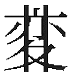
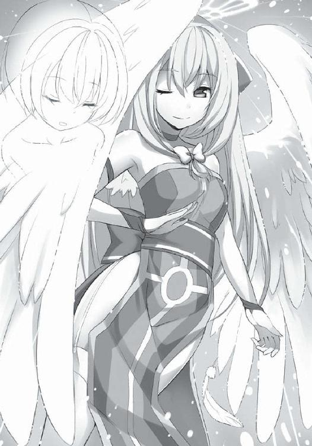

| ちゅーちゅーエンジェル (スマッシュ文庫) | |
| 伊東 ちはや | |

ちゅーちゅーエンジェル
伊東ちはや
皆村春樹
ちゅーちゅーエンジェル もくじ
装丁 彦坂暢章（株式会社ケイズ）
編集担当 前田眞宜
「んんっ、......んぁ、んっ、んっ」
ちゅぅ......ちゅぅぅ......ごきゅん。
ちゅぅ......ちゅぅぅ......ごきゅん。
耳元で艶っぽい声が聞こえる。同時に、喉を何かが通過する――嚥下する音が。
えっと......。
何コレ!?
僕、杉本新樹は当惑していた。
今、正座した状態で、佐野ひのせに何かされている。
赤茶色の髪に、綺麗な顔をした彼女が......。
誰もいなくなった静かな教室で......。僕に何かをしとります！
「んぁ、んんっ、んぁ」
ひのせの声はたえまなく続く。何やら必死に僕の首に顔を埋めて......。そして、響くのだ。
ちゅぅ......じゅっ......ちゅうううぅ......ごきゅん。
「あ、あ、あ、あの......佐野さん？」
思いきって声をかけてみた。
......返事はない。
「え、えっと......」
何コレ。何？ 何？ 何？
必死に頭の中を整理しようとする。
「んぁ、はぁん、んぁ」
ひのせは時折首を動かして顔を浮かせる。が、すぐに再び僕の首筋へと顔を埋めてしまう。
（抱きつかれて......おりますな。......抱きつかれて、それで）
僕は放心した。
正座した僕に覆い被さるようにして、ひのせは、細い指で僕の両肩をしっかりと掴んでいる。ひのせはほぼ四つん這いの姿勢だ。
「はぅ......んぁ、んっ」
「......」
どうしたもんか、コレ。
どうすりゃ正解か、コレ。
そのとき、時計の針がちょうど夜の十時を指した。
「あ、櫻乱ちゃんの生ラジオの時間だ......」
僕はひのせに何かをされたまま、つぶやいた。
......。
......。
......。
シーンと静まり帰った教室。これが入学式直後の有様だ。三十席ある教室の席には二十名の生徒しかいない。みな私服だ。いや、私服なのはいいんだ。だって、夜間部に制服の着用義務が無いことは、学校案内のパンフレットに書いてあった。それにしても、栄えある入学式のパンフレットが、一目で安物とわかる再生紙に印刷されている。この紙、すでに湿気を吸ってふにゃふにゃになっているんだが......。
......。ま、そんなことはどうでもいい。
僕、杉本新樹は本日、佐翼高校の一年生になった。
この高校に入学した理由は簡単！ 夜間部があったからだ！
夜間部を選んだのはいろいろと理由があるが、今は語るまい。まぁ、語るほどのことでもないので気にしないで欲しい。
だが、この教室の静寂はどうにかならないだろうか。
みな、沈黙してバラバラに席に座り、特にやることもないのでボーッとしている。晴れの日を迎えた者たちとは思えないテンションだ。
おかげで僕は、いつも暇なときに着用しているヘッドフォンを耳につけることができない。軽い音漏れはマナーに反するし、漏れては困る音源というものもある。
そう、みんなが知っている通り、僕が今何度もリピートして聴いている曲のヴォーカルは、元クラスメイトのしずねちゃんだ！ ......うん。わかるわけないよね。フフッ。わかってたさ。
このしずねちゃんの声は本人に承諾を得ての録音だったが、公共の場でその歌声を流す許可までは得ていない。しずねちゃんが萌え萌えボイスで歌ってくれたのはミズシウの代表曲〝信ちゃんのホトトギス〟だ。まったく、水比良シュウはイイ曲を作る。
そんなことを考えていると、突如、静まりかえっていた教室に女の子の歌声が轟いた。新入生の誰かが歌っている。それも遠慮なく、デッカイ声で！ や、やかましい！
「さよう♪ さようぅ～♪ さようーぅーでぇすー♪」
歌声の発信源は、教室の一番後ろに座っている田島くんであった。あ、〝くん〟って言っても女の子だけどね。
「へぇ、もう覚えたんですか。校歌」
騒音のもとである田島くんに話しかけたのは、推定四十代のおっさんだった。
「うん！ なんか甲子園のテーマソングみたいでカッコイイです！ ボクは気に入ったです！」
にっこり笑った田島くんは髪を短く切って少年とも少女とも見える容貌をしているが、歴とした女子だ。
一度男子と間違えられて〝くん〟づけされたことを意外と本人が気に入って以来、〝くん〟づけで呼ばれるようになった。その他のあだ名は〝子リス〟。
彼女とは同じ中学だった。
クラスも同じだったが、僕は彼女のことをあんまり知らない。知っているのは、性別を感じさせない――誰にでも愛される小動物的な雰囲気が魅力で、当人も甘んじてマスコットキャラ的な地位についていたということぐらい。ちゃんと女の子すればけっこうなカワイコちゃんなのにね。もったいない気はするよ。世の中にはナイスバディの色気ムンムン女子になりたいと切に悩む少女が大勢いるというのに、無欲な奴である。
僕がそんなことを考えている間に、おっさんと田島くんのたわいのない会話がキッカケとなり、今までシーンとしていた教室がにわかにざわつきだした。目も合わせなかった他の新入生同士も会話をし始めたのだ。
よーし、これならしずねちゃんの曲を聴いても大丈夫だ！
僕は急いでヘッドフォンを装着しようとした。
その瞬間、ガラッと横開きのドアが開いた。
げっ、担任教師のお出ましか!?
と、思いきや。信じられない光景が飛び込んできた。
もこもこ。
そんな表現が似合う、黄色いクマの着ぐるみが入ってきたのだ。もちろん中に人が入っているのだろう。もこもこの黄色クマはとてとてと歩き、教壇に立った。
......え？
もこもこ黄色クマは、一昔前のラッパーが肩に掲げていたようなビッグサイズのカセットデッキを教壇に置いた。今どきそのサイズのカセットテープ専用ラジカセとは、なかなかの強者である。
生徒全員が呆然とする中、もこもこ黄色クマはその丸い手で器用に【再生】のボタンを押した。すると......。
『ジー、ガサガサ、ガサガサ、よいしょ......あーうー、マイクテス......マイクテス』
やる気を感じられないだる～い女の子の声が。
『あー、ヘリウムの缶どこだったっけー、あー、あった、あった。よしよし』
裏方の作業がすべて録音されとりますが!!
しばらくすると、シューというガスを口内に放出する音が聞こえ、
『はじめまして！ 私が担任だよ！』
テープからやたらと甲高い、みっきー調な感じの声が。
「ぎゃははは！ 先生最高！ ぎゃはははは！」
田島くんが腹を抱えて笑った。
なるほど、生徒の心を掴むファーストインパクトとしては成功だ。精巧でもある。着ぐるみにテープレコーダーにヘリウムガス。この先生はきっと、入学初日で緊張している僕たちの心を解きほぐすために、こんな茶番をやってくれているのだろう。
『私はオチャメだから、こうやってみんなとコミュニケーションをとるんだ！ だから、テープ越しにしか喋らないよ！ これは一年続くよ！』
今日限定じゃなかった！
『――と、だからさ！ みんなは先生に絶対に話しかけてこないでね！ ......。昼間の生徒を指導していて......あんな目に遭ったなんて......言えないよ！ やっと、心の傷がすこし癒えて部屋から外に、家から外に、外から学校に......。そ、そしてようやくここまで......ここまで治ってきたんだから。もう、傷つけられるのはイヤだよ！ だから今の私に優しくしてね！ もう戻りたくない過去が先生にはあるんだよ！』
やめてください先生。リアクションに困ります！
もこもこ黄色クマは【切】のボタンを押すと、テープを止めた。
そしておもむろに、チョークで黒板に文字を書く。
【現状維持は後退である】
へぇ。変な名前だ。どこまでが苗字なんだろう。
すると、再びテープが再生された。
『これが、私が掲げるスローガンだよ！ 心の病気を治してくれる先生に言われた名言なんだ！ だから、もうこの病院には来ないでくださいってね！ みんなぁ！ 病気が治ったときにニートになりたいって言っちゃダメだからね！ 二度と診てもらえなくなるよ！』
先生。貴方の人生はいったい、どこに向かって進んでいるんですか!! ついでに黒板の文字は名前ではなかったのか！ 失態！
僕が自分の天然ボケを恥じている中、田島くんが挙手した。
「せんせーい！ 先生の名前、長くて呼びづらいです！ どこからが名前です？ 苗字はどこまでです？」
あ、僕より恥ずかしい人がいた。
先生はどうしたかっていうと、
「......！ ......！」
両手を挙げてのけぞった。驚くところでしょうか。いや、驚くべきでしょうな。僕も同情しつつあります......。
「......。......」
やがて先生は考えるように軽くうつむくと、
「......」
無言で黒板に向かい、「は」の文字の上に線を引いた。
【現状維持／後退である】
それでいいんですか、先生!!
「げん、いぬ、えー、っと、もち？」
田島くんが必死に漢字を読む。なるほど、彼女が昼間部の入試に落ちた理由が手に取るようにわかる。ちなみに、昼間部の偏差値は夜間部よりはるかに高い。
すると、田島くんは、
「あ、あの人ならきっとわかるはずです！ あのあの！ 杉本さん！」
僕の名を呼んだ。
「......」
僕は前から二番目の席に座っている。後方に座っている田島くんを見るには振り返るしかない。
「杉本さん。お願いしますです！」
田島くんは笑顔で合掌してお願いポーズ。くそ、そのうるうるした目で僕を見るな！ 撫でたくなるだろうが!!
「......げんじょういじ」
僕は呆れつつも漢字を読んであげた。
「へー、げんじょーいじさんって名前なんだ！ すごい、すごーい！ すごい苗字！ なんで？ なんで？ なんでそんな苗字なんですか？ ご先祖様がすごいんですか!?」
無邪気な笑顔の田島くん。
着ぐるみ越しでも、先生がかなり困っているのがわかった。
さっき田島くんと軽く会話したおっさんも、どうしたらいいかわからない顔で先生と田島くんを交互に見遣っている。
先生はどうしたかというと......。
再びテープレコーダーの【再生】を押すと、
『えー、私のなまえ......』
キュルキュルキュル!!
即座に【早送り】ボタンを！
な、泣けるな。
こんな気持ち、久しぶりだ。
先生がある程度のところでまた【再生】ボタンを押した。
『......です、よろしくね！ では、みんなには同じように名前だけでも良いので、自己紹介をしてもらいたいと思います！』
先生がテープを止めてホッとしている。確かに一人の純真な子リスの心を守ったことは良いことだけど、これで先生の名前は現状維持になった。それでいいのか問いたい。
「......」
現状維持先生が着ぐるみ越しに、廊下側の一番前の席に座っていた生徒を指さした。スーツ姿のサラリーマンだ。サラリーマンは先生のジェスチャーで理解したらしく、躊躇もなく立ち上がると自己紹介を始めた。
やっぱり昼間は働いているようで、高卒の資格が欲しくて入学したとのことだった。驚いたことに、四十代のおっさんだと思っていた彼はなんと同年代であった。十七歳で四十代に見られるほどの老け顔とはなかなか凄い。思えば、この夜間部には年齢制限があったことを思い出した。入学できるのは二十歳まで。おっさんがいるわけなかったのだ。
自己紹介は静かに進んでいった。名前だけ言って着席する奴、あれこれ聞かれてもいないことまで喋る奴と......。うん。中学のときと一緒だ。年齢の差ってこーゆー場面じゃあんまり出ないのか。
みんなの自己紹介の内容はというと......正直、ほぼ聞き流していた。
新しいクラスメイト十九人の名前なんてすぐには覚えきれないし、意識して覚えなくてもなんとなく馴染んで覚えちゃうだろう。
僕は自分で言うのも何だが、ごくごく一般的な学生だ。高校生活スタート！ って言っても、また、中学の頃のように平々凡々とした学生生活が待っているだけ。ただ、昼間に通っていた学校が夜間になったってぐらいの変化しかないわけで、誰かと親しくなることもないだろうからね。ま、平凡に生きていくさ、今まで通り。
そして、僕の順番になった。
へいへい。名乗りましょうかね。
ゆっくりと僕が立ち上がると、
「杉本さんの自己紹介はボクがやります！」
田島くんが挙手して勢いよく立ち上がった。
え？ なんで君が？
「杉本さんは座っててください！ ボクに任せてくださいです！」
田島くんは言うと、呆然と立ったままの僕を無視して、
「杉本さんは、杉本新樹さんって言います！ すげーんですよ！ ボク、杉本さんとは中学二年から三年までの二年間、一緒のクラスだったんですけど、杉本さん、少年院あがりです！ 少年院で更正して、転入してきたんですよ！ なんでもダチを滅多刺しにして、内臓えぐってぶっ殺したとか！ とにかくすげーんですよ！ 本物のワルですよ！ ボクの憧れですよ！」
キラキラと目を輝かせる田島くん。
......。
......。
当然、教室の中は静まりかえった。
クラスメイトの全員が硬直している。そんでもって、何かおぞましいものでも見るような目で僕を！
「あのさ......田島くん。そんな妙なウソはやめてくれるかい？」
僕はたまらず口を開いた。
「へ？ 違うんですか？」
「知らない、知らない。少年院なんて知らない」
僕は力なく手を振った。
「え――!? じゃ、杉本さんどっから来たんですか！」
田島くんが驚いている。僕を何だと思ってたんだ。こいつ。
「僕は普通の高校生です」
「でも、でも、でも、ですよ？ 杉本さん、中学の頃、転校してきたときに、みんなの前で、看守つきの閉鎖された空間から出てきたって言ったじゃないですか！ それって少年院じゃないんです？ えー、どうしよう！ ボクたち、中学の頃、ずーっと杉本さんは闇あがりだって怯えてたんですよ！ あ、ボクは憧れてましたけど！ 覚えてます？ 女子とか杉本さんが話しかけただけで泣いちゃって！ って、それはいいとして、少年院じゃなかったらどこなんです？ 網走です!?」
ぼ、僕は中学生活を普通に過ごしていたはずだが......。た、田島くんが大袈裟に言っているのか？ いや、そんなはずは......。
「杉本さん！ 答えてくださいです！」
うーん。あまり過去というか、ここに来る前のことは言いたくないのだが。
「まぁ、看守はいたし、自由はなかったけど、少年院じゃないよ」
僕は当たり障りなく言い返す。
「え、じゃ、どこっすか？」
「ま、まぁ、教会的な......感じ？ わかるだろう？ 厳粛な感じの、ほら......」
どうしよう。うまい言い方が思いつかない。
「ま、学校でいうところの〝組〟みたいなもんだよ。先生的な指導者がいて、僕はそのあとについていく感じで......」
よし、これで納得して――
「えええええええええええっ!? 組ですか!? 組に入ってたんですかぁ!?」
――くれないのだね。君は!!
「違うってば！」
「なんて組っすか？ あ、組の名を簡単に口にすることはできないって決まりでもあるんですか!? そ、そうですよね。なにせ、闇の名ですからね！ すごいですぅううう！」
田島くんの目が更にキラキラ。君は僕を何にしたいんだ！
「もー、いいよ。はいはい、組ってことで」
僕は投げやりに言った。
ま、この会話を聞いていれば、田島くんの大いなる勘違いに誰もが気づき、僕の潔白は証明されただろう。
「どんなことしてたんですかぁ!? 役割は!? ランクは!?」
田島くんが大声で言う。
「はいはい、あえて言うなら指導者の側近だよ！ もー、いいだろ？」
いい加減にしてくれって意味もこめて怒鳴ってみたが、
「杉本さん、親分の右腕だったんですか！ こ、これは！ 気安くお名前で呼んでてすいませんっした！ 兄貴！」
田島くんが一礼。
僕はそんな子リスを呆れて見つめていた。
クラスメイトも同様に呆れ――
「......すいません。よ、よろしくお願いします、兄貴様」
「なにぶん、穏便に......。ぼ、暴力は怖いので......兄貴！」
「気に触ることがあったらすぐ言ってください！ 兄貴！」
――てなかった！ 何コレ！ クラスメイトが全員頭を下げてるんですが！
「ちょっと、皆さん違うんですってば！」
僕は必死にみんなの勘違いを解こうとしたが、
「諦めろ。もう無理だ」
冷やかな声が響いた。
「え？」
見れば、僕の前、一番前の席に座っている少女が頬杖をついた姿勢で座っていた。僕から見ると後ろ姿だ。赤茶色の髪をツインテールにしていた。ぴょんぴょんと癖毛があちこちに跳ねている。
「どういうこと？」
振り向きもせずに話しかけてきたその女子に、僕は尋ねた。
「......田島と言ったか、あいつの才能だ。諦めろ」
少女はゆっくりと振り返った。
なんとも退屈そうな表情をしていた。今にも眠りそうな顔だ。
しかし、大きな瞳に、小さな鼻梁、唇はももいろで形もいい。
そうとうな美人であった。
「......」
「なんだ。私の顔をじーっと見て」
少女はけだるそうな声で言う。
「いや、美人だと思って」
「そーか？」
「うん。綺麗だよ、君」
「ふーん」
「......で、話を戻していい？」
「......」
「なんで諦めなきゃならないの？」
この教室の異様な空気を払拭したい。特に、教壇にしがみついて震えている現状維持先生はどーにかしたい。
すると、少女はこう言った。
「田島を見ろ。あいつには他人に自分の言葉を信じこませる才能がある。生まれもっての才能だよ。詐欺師にも、話し手にも、弁護士にも向いているな。あいつの言葉は他人を動かすんだ。そーゆー奴がこの世にはいるんだよ。それも、無意識の才能だ。もはや、お前が兄貴と呼ばれることは決まってしまった。だから、諦めろと私は言ったのだ」
「そ、そんな......」
「しかし、お前にも才能はある」
「僕の才能？」
「正直なことを正直に言ってしまう才能だ」
「......才能なの、それ？」
「才能だろ」
少女は言いながら立ち上がった。
顔が小さいせいで小柄かと思っていたら、意外に長身であった。百七十一センチの僕とほぼ同じ目線だ。しかも、プロポーションはまるで雑誌を飾るアイドルだ。裾の部分だけフリルのついた黒いワンピースがぴったり似合っていた。
「さて......」
少女は赤茶色の髪を揺らしながら、突然、教壇へと向かった。カツカツと彼女のはいているヒールの音が鳴る。......あれ？ 学舎内は土足厳禁じゃ......。
少女はその長い片足を教壇の机の上に乗せると、簡単にそこに飛び乗った。
そして、
「静粛にせよ！ 諸君！」
叫んだ。
いや、もとから静まり返ってたんですが......。
少女は腰に両手をあて、仁王立ちのポーズになると、
「我が名は佐野ひのせ！ 陽に背を向けて生きていく者なりっ!!」
胸を張って再び叫んだ。
教室中の人々が唖然とする。
「前もって、諸君に申し渡す!! 私と関わると死ぬこととなる！」
ひのせは容赦のない声で叫び続けた。
「死にたくないのなら、私に関わるなっ！ これは忠告ではない。命令である！」
少女は、
「もう一度だけ言おう。私と関わるな......。死ぬぞ。死ぬ。死ぬ。死ぬ。私と関わった者は、必ず死ぬ。......死ぬんだ。死ぬのだ。死だ。死！ 死にたくなければ、関わるな！ いいか！」
一呼吸おいて、
「私は〝死〟だ！」
と言い切った。
ゾッとしたよ。
僕はそのとき、周りの人間がどう反応していたか覚えていない。
僕はただ、彼女を見上げて放心した。
なんと言えばいいのか、そのときの彼女はとても美しかった。
なぜ、彼女に美なるものを感じたかわからない。
けれど、まっすぐ前を見据えた彼女が――。
ひるみもせず、気取りもせず、強固な態度で言葉を発した彼女が――
とても綺麗だ。
そう思った。
けど、けど、さ。
まずいことになったって思ったよ。
だって......。
彼女、本気なんだもん!!
僕は彼女の言葉に恐れを抱いた。
だから、無言で彼女から目を逸らし、何事もなかったかのように着席した。
本人が言う通り、彼女と関わってはならない。
僕の心が警鐘を鳴らしていた。
ひのせの言動の意味は不明だ。ただ、僕は人の嘘を見抜ける方だと自負している。
彼女に嘘はなかった。本気だった。真剣だった。そう直感した。
だから、関わる気などなかったのだ。
佐野ひのせとだけは!!
＊
僕は家に帰って遅い夕食を食べたあとに、大切な物を失くしていたことに気がついた。
「携帯が......」
鞄をさぐっても、コートのポケットを漁っても出てこない。
「......学校か」
帰り道、自転車の走行中に落としたか？ いや、そういえば学校を出るときに携帯をバッグに入れた覚えがない。
「......午後九時かぁ」
僕はげんなりと肩を落とした。
学校までは自転車で十七分ぐらいかかる。僕は音楽データを全部携帯に放り込んでいるので、あれがないとしずねちゃんの歌声が聴けない。僕はしずねちゃんの歌を聴きながら寝るのが常なので、これでは安眠できないではないか。
セキュリティ的な意味では、携帯を拾われても、パスワードが設定されているから中身を見られることはなかろうが......。
「いつ忘れたんだ......。やっぱ、あのときだろうな」
ひのせの自己紹介直後だろう。
彼女の自己紹介というか、危険な発言の直後に解散になったから、僕は急いで教室を飛び出したんだ。
彼女と関わりたくなくて。
思えば、やっぱり取り出していた携帯をバッグに入れた記憶がない。
二階の自室から一階に降りると、父と晩酌をしていた母が声をかけてきた。
「あら、新樹ちゃん、どこか出かけるの？」
父も僕を見て嬉しそうに破顔した。
「うん。ちょっと、学校。忘れ物」
僕は、すぐ戻ると言って外に出た。
僕の家は温かいと思う。
両親は仲が良いし、僕にも優しい。
僕はその面では恵まれているし、この環境は大切にすべきだと思う。
だから、この大事な日々を手放すことがないようにしたいと思っている。
そうなると、余計に佐野ひのせの危険性が妨害となる。
「マジだったもんなー」
自分と関わると死ぬなんて、彼女はいったい何なのだ。
「ま、関わらないと決めた相手の詮索は意味ないか」
明日からは、佐野ひのせとは遠慮なく距離を取ろうと決めていた。
僕はまだ十六歳だ。死ぬには早すぎる。そして、死にたいと思ったこともない。
そんなことを考えつつ、自転車で滑走すること十五分。
学校に着いた。うむ、信号に捕まらないとはいい傾向だ。携帯もすぐ見つかりそうだ。
学校の門は閉まっていたが、軽く横に引いたところ、鉄柵は簡単に開いた。
校舎の中にはまだ人がいるようで、五階建ての建物の窓からは、ところどころ光が漏れていた。
「えーっと、三階、三階」
僕は教室に向かって歩き出した。桜は咲いたけど、四月の夜はまだ寒くて、吐く息は白かった。
教室に入ると、室内には誰もいなかった。
「......って、電気つけっぱなしじゃん」
ただ、蛍光灯が煌々と光っていた。カーテンは閉め切られている。あれ、さっき外から見たときは開いていたような。
ま、いいか。とにかく、電気のつけっぱなしは、最後に教室を出た奴がいかんのだな、うむ。
と、僕が一歩踏み出したときだった。
――キィイイイ！
甲高い声が響くと同時に、真っ黒い物体が僕に向かって飛んできたのだ！
「へ？ ぬぉおおおおおおおおおお！ な、何!? こ、コウモリ!?」
バサバサと羽を広げて襲いかかって来たのは、一匹のコウモリだった！
大きさは手の平に収まるほどで、翼を広げ牙を剥き、僕に体当たりを仕掛けてくる！
「な、なんでこんなところに！」
僕は必死で避けたが、コウモリは綺麗にくるりと回って旋回すると、僕に向かって再び突進をしかけてきた！ こりゃもうロックオンされとりますな。こうなりゃ僕だって戦闘態勢！
「このぉ！ なんの恨みが!? 自然へと帰れ！ とぉりゃああああ！ アタックナンバーファイトォオオ！」
僕はなんとか突進してきたコウモリを掴むことに成功すると、窓まで走ってカーテンを引き裂くように開け、窓をスライドさせると一気にコウモリを外へと投げた。
コウモリは断末魔のような奇妙な声を上げて落ちていった。
「安心せよ！ コウモリよ！ 君には翼がある！」
僕は達成感ありありの言葉を吐くと、うんうんと何度もうなずいた。ものの......。
「ふー、なんなんだ......え？」
ここに来てようやく気づいた。
机と机の間。そこに、一人の少女が倒れていた。
「さ、さ、佐野......ひのせぇ!?」
ぐったりと倒れている少女を見て、僕は仰天したさ。思わず声がひっくり返るほどに！
黒いワンピースの裾を広げて、横向きに倒れている彼女。顔は蒼白で、眉は苦しそうに寄っていた。赤茶色の髪が汗ばんだ頬にはりついている。ぜぃぜぃと不規則な呼吸が聞こえ、明らかに苦しんでいる様子である。
「......」
どうしよう。
彼女とは関わらないと決めた矢先に本人が倒れているとは!!
......見なかったことに。
......み、見なかったことに!!
よ、よぉし、このまま携帯探してさっさとエスケープ！ ......できるわけないよね、さすがに。
僕はゆっくりとひのせに近づいた。
「だ、大丈夫？ 佐野さん」
とりあえず声かけ。
「......ぜぃ、ぜぃ」
彼女は不規則な呼吸で返事を......してませんな。
意識はないようだ！
うむ。現状を整理すると大丈夫ではないな。
「佐野さーん、救急車呼ぶ？」
こういったときは保健室の先生の出番だと思うけど、あいにく、今日入学したばかりの学校の校内がどうなっているのか僕は知らない。職員室がどこにあるのかもわからないのだ。
「うーむ。う......うーん」
困った僕はとりあえず彼女のそばで正座してみる。
「............。佐野さ......ん。大丈夫？」
もう一度声をかけて、ちょいと彼女の細い肩を押してみた。
「......うっ」
横向きに倒れていた彼女が仰向けになる。
う、動いた！ 動きましたぞっ!!
すると、彼女の瞳がゆっくりと開かれた。
「......イ？」
彼女は何かつぶやいて僕を見る。
その瞳は赤紫色だった。
「へ？」
そんな色でしたっけ!?
と、驚く間もなく、
「アシュ......レイ」
今までぐったりと倒れていた彼女がおもむろに起き上がると、正座する僕にのしかかるように抱きついてきたのだ！
「え......、えええええぇ!?」
何コレ!? な、何!?
仰天する僕をよそに、
「アシュレイ......血を......！」
彼女は僕の首筋に顔を埋めた。
その瞬間、
――ブチリ。
と、音が鳴った。
＊
そして今に至る。
「んぁ......はんぁ」
現在、僕は床に正座した状態のまま、のしかかってきたひのせに抱きつかれている。指ひとつ動かせない。ガッチガッチになってます（涙）!!
「んぁ......はんぁ......んんっ!! 最高よ！ ミ・アモーレ！」
ひのせが軽くのけぞった。同時に、〝ごきゅん〟と音が鳴り、細い喉が大きく上下した。
僕は言葉が出なかったが、ひのせは満足そうにぺろぺろと唇を舐めながら淡く微笑んでいた。長いまつ毛が潤んだ瞳を綺麗に縁どっている。
――赤紫色の眼。
その瞳は今にも泣きそうなくらい潤んでいた。
涙をこらえて微笑むような表情にはゾクっとした。なんて言うのか......。言葉にするならアダルト！ アダルトインパクト！ じょ、女子ってこんな表情するのか。妄想、いや、二次元の女の子だけがうるうるお目目を再現できると思っていた！ なんてこったい！
めっちゃめちゃ美しいと思ったよ。彼女は凄絶なまでの美貌の持ち主だ。完璧と言えるほどの容姿に、まだ幼さを残していることも美しさの要因だろう。大人の女性と少女の顔の間、角度によって大人に見えたり、子供に見えたり......。そのアンバランスさが魅力となっているようにも感じる。まぁ、ほんと、驚くほど綺麗な子だ。
僕はこのとき、なぜか胸の中が熱くてしかたなかった。
女の子に対して、こんな感情を持つのは初めてだ。
なんだ、これ。
ドキドキする。
あら。嫌だな。コイかしら？
で、でも、あ、あれ？ 胸の中がドキドキだけじゃなくて、首のあたりがチクチクする。そんでもって、熱い。
ひのせはグッと背伸びをして、僕に話しかけてきた。
「んんっ。アシュレイ、今日のはいつも以上に貴方を感じたわ。まるで、初めての味。ねぇ、何かあった......」
ご機嫌そうに話していた彼女は言葉の途中で僕を見て、
......。
......。
固まった。
顔を見合わせて、二人して沈黙する。
ひのせは大きな瞳をパチパチして、瞬きを何度も繰り返した。
あれ、目の色、元に戻ってる。さっきまで赤紫だったのに......？ 僕の見間違え、なのか？
「あの......」
僕が話しかけると、
「は？ へ？ えっ？ えぇえええええええええええええええ――!?」
彼女は無意味に両手をわさわさと上下させていた。
「だ、だ、誰!?」
「......杉本です」
僕は控えめに名乗った。
「あ、あ、アシュレイは!?」
ひのせはキョロキョロと教室を見渡した。だが、ここには僕とひのせしかいない。
彼女の顔色がみるみる青くなっていく。
「アシュレイって......誰ですか？」
僕はとりあえず尋ねた。
「ここにアシュレイはいなかったか!?」
するとひのせが顔をグッと近づけて叫ぶ。唾飛んできそうで嫌なんですが......。
「アシュレイはどこ？ ここにいたはずだ！ なぜいない!?」
僕がわかるはずもない。そもそも、アシュレイが誰なのかわからないんだもん。でも必死で探しているってことは、大事な人間か犬か......とりあえず生物だよな。
「ここには何もいなかったよ。君ひとりだけが倒れてた」
コウモリはいたけど、まさかアレではなかろう。
「え？ え？ え？ ええええぇ!?」
ひのせは考えるように額に手を置いてうつむくと、
「......。......。えー、えー、っと。ごめん、あんた、誰？」
同じ質問を二回も。
「......杉本です」
「............。ごめん、えっと、誰だって？」
「杉本」
質問の堂々巡り！
「あの、佐野さん。大丈夫ですか？」
あれだけ苦しそうに倒れてたのだ。一応、体調を心配しておく。
「......」
ひのせは答えなかった。うなずきもしなかった。
「佐野さん？」
あれ？ 僕、緊張しているのかな。自分では淡々と話しているつもりなんだけど、さっきから声が裏返ってしかたない。奇妙なほど可愛い声が出る。
「......」
ひのせは恐る恐るといった様子で僕に視線を向けた。
そして、じ――っと僕を見ると、
「あああああああああああ――ッ！ や、やっぱりぃいいいいいいいい！」
こっちが仰天するような声で叫ぶと、慌てた様子でズサーッと後ろに引いた。
「嘘、嘘、嘘よぉおおおおお！ や、や、やってしまった？ この私が!? こ、この私が!?」
ひのせの表情はまるで穴知らずに襲われた観光客のような顔だった。
彼女は、
「この世、終わった！」
そう言って涙ぐんだ。
「......うう......う」
ついに嗚咽を漏らして泣き出すひのせ。
「ね、佐野さん、大丈夫？ あとさ、僕に今、何したの？」
さっきから首筋が熱くてしかたない。体が――心臓がドクドクしてる。
「......それ、聞くの？」
ひのせはまるでマナー違反した者を咎めるような目で見てきた。ひ、被害者は僕の方なんですが。
ひのせは力強くキッと目をつり上げると、
「えっとね、えっと、説明するとするならば――」
そう言ってこう叫んだ。
「強く生きて！」
――と。
バンッと両手を僕の肩に置くひのせ。今のが説明？
「がんばって！」
「......？」
「......ファイト一発、元気が一番！ 君が成せば成ることは成る！ なにせ君は元気のもと！ よっ、日本一の杉本............くん......で......あー......うー......。......」
呆ける僕に対し、見て見ぬふりをして、ひのせは立ち上がった。
「さ、さーて、そろそろ帰らなきゃ」
「ちょ、ちょっと佐野さん!?」
僕も慌てて立ち上がった。しかし、
「へ？」
目の前の光景がぐにゃりと歪んだ。そのまま体が後ろ向きに倒れていく。
や、やばい、足が......言うことを聞かない。や、やばい、後頭部からゴーンって......いく！
ひのせが何かを叫んだ気がしたが、僕の視界は真っ黒になり、音も消え、そして後頭部の衝撃とともに無の世界へと落ちていった。
これは夢である。
僕は雨に打たれながら、なぜかそのことを理解していた。
この視界は〝誰か〟のものである。誰かはわからない。目の前には細く白い手首と、形のいい小さな手。そして、真っ赤な着物が見える。僕......いや、この人は着物を着ているようだ。
はてさて、なんでこんな夢を見てるのか。
しかも、なんじゃこりゃと落ち着き払っている僕とは裏腹に、僕の視界を支配している着物の子はひっくひっくと泣いているのである。何がそんなに悲しいのか。ただただ傍観するように泣く子をそのままにしていると、スッと何かこすれるような音が鳴った。
――お兄様っ。
幼い少女の声で一言。
えっ!? なにっ!?
すると視界が軽く上下に動いて、風景が変わった。
僕の〝目〟は雨の中、こちらに向かって歩いてくる少年の方を向いている。軽くうつむき加減の少年は十二、三歳ぐらいだろうか。金色に近い茶色の髪をしていた。顔は、長い前髪が邪魔になって見えない。ただ、真っ黒な着物と袴をまとっていた。胸元には何か文様のような刺繍が施されている。
「お兄様......。お兄様......。お母様、も、も、もう。駄目なの？」
視界の主が言う。
「......ああ」
兄と呼ばれた少年がうなずく。
「もう......お、起きない？」
「......ああ」
「もう、もう、わたし......と、おはなし、して、くれ......ない？」
「......ああ」
「もう、もう、お母様は......わたし......を」
「......ああ」
少年の声は囁くように淡々と響いた。感情の波にのたうつ涙声――視界の主とは真逆である。少年はうつむいたまま、とにかく冷めていて、まるで背後の薄暗い風景に溶け込んでいくような感覚がした。
少女がまた何かを尋ねる。なんと言ったか聞き取れなかった。けれど、少年の声ははっきり聞こえた。
「......ああ」
＊
――う～、にゃう。にゃうぅう！ にゃぁううう！
起きろ起きろと鳴くのは、三毛猫のヲトメだ。
「わかったよ。起きる、起きるから」
僕は寝起きの微睡を感じることなく目を開いた。その間も三毛猫はにゃあにゃあ鳴く。
三毛猫――ヲトメの朝ご飯は僕が用意することになっている。腹を空かせた猫の鳴き声で目覚めるのは、この半ノラ猫を飼いだしてから恒例になってしまった。
ヲトメは日中を我が家で過ごし、夜は外へ遊びに行く。そして、たっぷり楽しんできたあげくに腹を空かせて帰ってくるのだ。それも早朝に！ なら、常にエサを用意しとけって思うだろ？ ところがどっこい、ヲトメは猫エサが湿気ったら食べないという贅沢猫なのだ。なので、帰ってくると新鮮な食事を求めてにゃーにゃーと......。呑気なもんだよ。身勝手すぎるよ。でも、そこが可愛いんだよ。まったくネコネコしい！
「はいはい。今起きるよ」
僕は毛布から頭を出した。途端、
「にゃ？ にゃぁ!? うーうにゃああああああ!!」
ヲトメが全身の毛を逆立て、お尻を大きく持ちあげて超威嚇体勢をとった。
「ヲトメ？」
「にゃあああ！ フゥウウウウ――！ 怒・怒・怒・怒・怒・怒・怒・怒・怒！」
「な、なんだよ！」
いつもなら甘えた声で鳴きながら、僕の手をペロペロ舐めるくせに！ エサを食べたら近づきもしないくせに！ まったく自分本位の酷い猫よねなんて言いながらも可愛くてたまらない奴のくせに！
「にゃあああ！」
ヲトメは再度叫ぶと、
「え？ うわぁあああ！ い、痛だぁああああああ！」
僕の顔めがけてジャンプ！ 思いっきり僕の顔をひっかいた。
「何するの！ ちょ、ちょっと！ やめれ！ ヲトメ!? どうしたんだよ！」
ヲトメはひたすら顔めがけてにゃんこパンチ（っていっても爪剥き出しの狂気の拳）を繰り出す。僕はたまらずベッドの上に立ち上がった。
「にゃううううううぁああ！」
すると、ヲトメはびっくりしたように半分開いた窓へ飛ぶと、そのまま外へ逃げて行ってしまった。
「......う、うそぉん」
残された僕は引っかかれた頬を撫でながら悲しい気分になった。
ヲトメ。
最初は怪我をしたノラ猫を道ばたで見つけて家で保護したのが始まりだった。怪我が治るまでって思っていたのに僕に懐いてしまって......今に至る。ヲトメが、そのヲトメが！
「なんで僕にこんなマネを！」
嘆きの声を上げながら、ヲトメが出て行った窓に近づく。しかし、三毛猫の姿はどこにもなかった。
時計を見れば午前五時。
僕はまだ寝入っている両親に気を遣い、足音を控えながら一階に降りた。そのまま、廊下を通過して洗面所に向かう。頬がひりひりして痛い。とりあえず鏡でヲトメから受けた傷の状態でも確認するか......。なんて、呑気にかまえていられたのは脱衣所にもなっている洗面スペースに入る前までだった。
「......。......。......」
僕は洗面台の前で立ち尽くした。
鏡に可愛らしい女の子が映っている。
大きな瞳に、困ったように眉をハの字にしている子だ。第一印象は〝弱々しい少女〟である。観葉植物とか育てて愛でていそうだ。小鳥にやたら懐かれそう。好きな食べ物はさしずめ手作りアップルパイとかって感じかな。趣味は読書で、詩集なんて本気で愛読してそうだ。うむ。
僕は鏡に映る少女を前に、そんなことを考えて――
「なんでじゃあああああ――!!」
どう見ても女だ！ 慌てて我が身を見下ろす。胸元に手をやると、確かな感触！ で、デカイな！ そんでもって男の聖域に手を伸ばしてみた。......ない。......ない！ 男の子のしるしがない！
「女になってるぅうううううううううううううううう!!」
僕は絶叫したさ！ あらま、朝起きたら女の子になってました！ なんて、現実に起こりうるはずがない！
「嘘だ。夢だ！ こんなの！」
思わず胸に手を伸ばした。
「......胸だ」
本物である。
「そんなはずは......」
リアルな感触！ そ、そんなはずは!!
「......」
人差し指で胸を押してみた。
膨らみに埋め込まれた指は見る間に弾かれるように外に飛び出た。なんという弾力だ。
「......本当に女の子になってるの？」
僕は慌てて胸部以外の部分を確かめた。背が――なんだか低くなっている気がする。確か僕は百七十一センチだったのだが、鏡越しに見て百四十センチあるかないか。見ればパジャマの裾が余りまくっている。髪の毛......うむ。伸びてるな！ まっすぐな黒髪が腰まであるよ！ 確かに僕は黒髪だったがロン毛ではなかった！ うわー、しっとりさらさら。えっと、次は顔。なんとも頼りない表情だ。無理矢理にこっと笑ってみたけど、小動物的な雰囲気は抜けない。やっぱ、弱々しい。可憐と言えなくもないが、僕の元の面影は皆無！ 誰だよ、この子。......。やっぱり注目はこの胸だよ。着やせする体なのか、洋服越しには実際の大きさよりは小ぶりに見えるけれど......隠れ巨乳か。......自重しておこう！ うむうむ。
「って、こんなことしてる場合じゃなーい！」
僕は己にツッコミを入れて、頭をかきむしった。
「......。ヤバイ！」
なんか知らんが女の子になってる！ 猫が驚くはずだよ！ まったくの別人だ！
僕は走った。
一気に二階の自室へ向かい、オープン・ザ・ドア！ そしてクローズ！
「ヤバイ、ヤバイ、ヤバイ！」
気づかれたのか!? いや、まさか。うまくやったはずだ！ こんな急に気づかれるなんてあり得ない！ そんなハズはぁああああああああ！
僕は急いで机に向かい、紙に文字を書いた。
「......。......。消えない！」
慌てて書いた文字。インクはしっかりと紙に馴染んでいる。消える気配がない。
「気づかれてないのか......！ となると......。なんでぇ？」
と、首を傾げながらも無意識に手が自分の胸に......。
「やぁ......っん！」
聞いてもいいかなぁ。
僕、なんで女になってんの!?
＊
数時間後、僕は黒板の前に立っていた。
午後五時。夜間部の始まりの時間だ。昨日が入学式だったので、今日が初授業となる。僕が何をしてたかって!? そりゃ、もちろん「自己紹介のやりなおし」である!!
「えーっと。一身上の都合により、昨日といろいろ変わっております。......が、中身は僕です。杉本新樹です。よろ～」
あえて明るく笑ってみたものの、引きつる顔は隠せない。
だってさ、クラスメイト全員が無表情でフリーズしたまま、僕を見てるんだぜ？
人生でこんなに居たたまれないことは今までなかったよ。絶対にハマることはないと思っていた『魔法少女ひまわりちゃん10歳ちゅるぴゅな！』のＤＶＤをレジに持っていったときと似たような気分だけど、あのときの気まずい気分を大きく上回っていると思う。
「先生、自己紹介は終わりましたが？ どーします？」
僕はうさぎの着ぐるみを着ている現状維持先生に尋ねた。
先生はノーリアクションというか、リアクションがとれない様子である。例のカセットテープには、この事態を想定した音声が入ってないようだ。そりゃそうだよね。昨日までどこにでもいるような凡人面の男子生徒が、たった一日で可愛い女の子になってるんだから。
「兄貴ぃいいいいいいい！ これはいったい、あえっと、あのあのあの、えっと、説明を要求するです！」
挙手とともに立ち上がったのは田島くん。いち早くフリーズ状態から抜け出したようだ。
「......うむ。結論から言えば......僕は女の子だったのだよ!!」
僕は間髪容れずに答えた。
「ぎょおおおおお！ な、なんと、兄貴は姉さんだったのでありますか!?」
「その通り。驚くほどのことではない！」
僕がフッと笑ってみせると、
「いや、驚くほどのことだろ!!」
――と、クラスメイト全員からの総ツッコミが......。
まぁ、いい。とにかく！ 僕は女の子として、気持ちも新たに自己紹介をしていた。
朝起きたら女の子になっていた。
もちろん、学校にたどり着くまでにはいろいろあったさ。
両親が最初に驚き、パニックになったあげくになぜか僕を形成外科へ......。病院に行ったのは実は初めてで、何も知らない僕は最初、元の姿に戻してくれるもんだと思って喜んだ。......けど、病院に行ったらなんかいろいろと検査を受け、しまいには医者たちが僕をぐるりと囲んで「これは学会に発表すべき症例では!?」なんて叫び合って大事になった。両親が必死に止めたからなんとかなったけどさ。結局、僕は「なんとかなんとか」って病気だったことになった。なんかすごく長い病名だったから覚えてない。最終的にパニックった両親が「産めるんですか？」って聞いたら、医者もなんか変な感じになっていて「はい、産めます！」なんて言い合いしてたけど......。ま、結論からすると、性別が反転する病は存在するらしい。
「......てなわけで、僕は女の子だった......らしいから、よろしく。名前も苗字も変わってない。うん。大事なことは何も変化がないのだ！ だから、みんなよろしくね！」
「よろしくね......って言われても」と誰からともなく言葉が漏れる。
「とにかく、よろしく！」
僕は勢いで押し切るためにスチャッと敬礼した。
「姉さん～～～～～～～～～っ!! かっこいいですぅ!!」
田島くんだけが歓喜の声を上げていた。
田島くん以外の者がフリーズ状態の中、一番前の窓側、その席を陣取っている佐野ひのせは、まるで何事もなかったかのようにそっぽを向いている。赤茶の髪をツインテールにしていて、毛先はぴょんぴょん跳ねてあっちこっちを向いている。昨日と一緒である。だが、大きな瞳は眠たげに半分閉じている。知らん顔で僕を意識的に無視しているとわかった。なぜ彼女が僕を故意に無視しているのがわかったかって？ そりゃ、まぁ、あれだけ激しく貧乏揺すりをしていたらアホでも気づきますやん。机ガタガタ揺れてるけど彼女、アレで誤魔化しきれると思っているんだろうか。
トントン。
何か柔らかいものに背中を叩かれた。
振り返ると現状維持先生、っていうか、うさぎの顔があった。
「なんですか？ 先生ぇ？」
すっかり可愛らしい声に変貌してしまった僕の声。
現状維持先生は古いカセットデッキを僕の目の位置まで持ち上げると、【再生】ボタンをＯＮ。
スピーカーからは〝信ちゃんのホトトギス〟の曲が流れた。しかもヘリウムガスで変えた鼻歌で。せめてＭＰ４だろ！ ＣＤ音源からとってくるのが本当だろ！ 水比良シュウの歌というチョイスはすばらしいが――。なるほどなぁ。意味がわからん!!
先生が空いている左の拳を強く振った。おそらく親指を立ててグッジョブってジェスチャーしてるんだろうが、先生の指は着ぐるみのまあるい布の中にあるので見えない。
「......さ、先生。現実に戻って授業しましょう」
僕は言いながら【切】のボタンを押した。すると、それまでラジカセの音にかき消されていた少女の声が聞こえてきた。
「ムーンいやぁ～♪／メールやめてぇ～♪／イージー!! さつじーんきぃ～♪／こんな非道！／ロシアンブルーのネコぉ♪／スズメと違うの♪／大事にして♪／織田様まってぇ～♪／ヨォーン信長のばかぁん♪／でもいいんだぁ♪／何があっても最後は殺されちゃうからねん♪／トホホトホホ・最後はみんなホトトギス！／ホーホケキョ♪／キョンキョーン♪」
どうせラジカセの音量にかき消されていると思っていたのか、けっこう堂々と歌っていたもんだから、しんと静まりかえった教室の四隅にまでその歌声は響き渡った。しかし、僕の驚きポイントはそこではなかった。
う、歌えるだとっ!?
こ、この曲を歌えるだとっ!?
仰天だった。感動と衝撃、そして驚嘆！ なんとも言えぬショック！
水比良シュウの活動期間は突然引退するまでのわずか二年間だ。この〝信ちゃんのホトトギス〟は無名に近かった前半期のアルバムに入っていたもの。それも、販売されたＣＤは秋葉原の〝ディーすくユニコーン〟って店だけの限定販売。それも、マイナージャンル、インディーズ、Ｊポップ、アニメソング......と小分けされていった先の棚の一角でしか発見されない代物！ しかも、この曲が入っているファーストアルバムの販売総数は十六枚。その幻の一品はネット上で果てしなく高値で売り買いされている。ちなみに僕は定価で買いましたよ。でも売りません。これがファン魂ですよ！
しかし、問題はそんな知識ではないのだ。
水比良シュウは一度アルバムに入れた曲は決してその後のアルバムで歌わない。リメイク版も無いし、ライブバージョンも売り出していない。もちろんカラオケにも入ってない。そして、ライブでも歌われてないのだ。なぜなら、すこぶる評判が悪かったのである！ 僕はそんな汚曲でもよどみなく愛すがね！
まぁ、はっきり言えば超・超・超・マイナーな曲なのだよ。くわえて歌手のシュウが活動二年目にして突如引退したというプレミアもついて、レコード会社の規制も厳しくネットにアップされることもないし、テレビのＢＧＭとして使われることもない。そうなると、歌詞を知る術はほとんどないのだ。つまり、この歌を歌えるのは本当に一握りの人間だけだ。
「なんで歌える！」と僕は彼女に走り寄った。
「......へ？」とまぬけな面でこっちを見たのは眠い目の彼女。そう、佐野ひのせだ！
なんと、なんと、ホトトギス......を歌いやがったのは、佐野ひのせだったんだよ！
「なんで歌詞を知ってるの!? 君、水比良シュウのファン!?」
僕はいろいろ大事なことを忘れてひのせに迫った。だって、だって、水比良シュウですよ!? シュウが最終的にどうして人気者になったか知ってますか!? Ｊポップに〝理解不能〟って項目を作った伝説の人なのですよ！
「......そうだけど。なに？」
ひのせの視線が斜め下に向いているのは、僕がものすごく小さくなってしまったからである！ 女の子に見下ろされるって、なんか新鮮っ!! でもプライド傷つく！ 矛盾が心を駆け抜けちゃうじゃないか！ まぁいい。それよりも、だ！
「シュウのファンなの!? 本当に？ 本当にファン!? ほんとぉおおおおのファン？」
僕はしつこかった。
なにせ、にわかファンはごまんといるからだ。対等に語れるファンには出会ったことがない。
「......。......。じゃ、水比良シュウが必死に直した初期の歌の癖は？」
「......」
すると、ひのせが黙った。フンッ。答えられないのか！ ならばファンじゃないな。ちなみにシュウのファンはにわかを白魔導師、ヘビーなファンを黒魔導師と呼んでいる。こいつは白だ。
「残念だよ」
僕がやれやれとひのせの席から離れようとしたときだった。
「......。だぴょん」
ひのせが囁くような声でつぶやいた。
「――!!」
しかし、その声は僕の心を一瞬にして貫いた。
「今......。......なんと？」
「だから......〝だぴょん〟」
こいつ黒魔導師だ！ 間違いない！ 水比良シュウは語尾に〝だぴょん〟をマジでつけちゃう信じがたい口癖があったのだ！ 初期のインディーズＣＤには、思いっきり〝だぴょん〟とつけたままシュウの声が収録されている。
佐野ひのせ......。この女。まさかの黒魔導師とはぁあああ!!
「う、疑って悪かったぴょん」
僕は去り際にそう言った。恥ずかしくてひのせの顔が見れなかった。
「心外だったぴょん」
ひのせはけだるそうにそう言い返した。
＊
そんなことより......。
大事なことを忘れていた!!
そうだよ。僕、女の子になってたんだよ！
授業が始まると、ちらちらちらちらとクラスメイトの視線を感じた。居心地が悪いどころじゃない。視線がいろんなところに飛んでくる。特に太ももと胸元には集中砲火を浴びているよ。......まったく。母さんが「女の子になっちゃったんだからっ！」って僕にワンピースを渡してきたので、それを着てきたのが間違いだったのかもしれない。黄色に大きな花柄の入ったワンピースに、白のニーソックス。赤い靴。
休み時間になっても、ひのせ以外のクラスメイトは僕を珍獣でも見るような目で見ていた。
居たたまれなくて、どうしようもない。そんなときだった。
「あ～ねぇ～さぁ～んっ！」
ぎゅっと肩を抱きしめられた。
「きゃぁん！」
僕はなんとも言えない悲鳴を上げてしまった。
ゴファァ!! と、クラスメイトの男どもが鼻血を散らしたが、それはどうでもいい。
「な、何してる！ 田島くん！」
僕は後ろから突然胸をわし掴みしてきたやつに非難の声を上げる。
「なにって、姉さんの胸モミモミです！ わーぁああ！ 柔らかいですぅ！ ぷるぷるしてるです！」
僕は田島くんが女子だということも忘れて彼女に渾身のアッパーを食らわせていた。
＊
休み時間になった途端に疾風のように消えてしまった現状維持先生が教室に戻ってきたのは、授業開始一秒前であった。
現状維持先生は入室するなり、僕の足下に白目を剥いて倒れている田島くんに気づいた様子だが、
「......」
一瞬迷ったような素振りを見せたあと、見なかったことにして教壇へ向かった。何があったの？ なんて聞かれても答えられないので助かりました。
「あ......姉さ......ん......モミ......モ......ぐぇ」
最後の息でなんかつぶやいていた田島くんを踏んづけたら、おとなしくなった。うん。やっぱ、授業中は静粛にしなきゃね☆
クラスメイトの何人かは〝いいもの見れた～〟的な、幸せに満ちた顔をしている。動けなくなっている者も見受けられたが事情は察すまい。みんな百合が好きか？ 僕は嫌いだ。今日、嫌いになった！ 受け身だったうえに晒し者になった気分はまるでゴキブリを舐めたような気分だったよ。舐めたことないけど。
『さて、二限目行くよぉ！ 二限目は世界史だよぉ。じゃ、まずは中国の歴史から行こうか。教科書五ページ。みんなも好きな人が多いんじゃないかなぁ？ 三国志をやるよ！』
ラジカセの声にも慣れてきた。
ふぅーん。三国志ね。三つの国の志......。なんだろう？ 三人の女同士の血みどろの争いとか？ 昼ドラ風になっちゃうな。それはそれで......。と、うんぬんかんぬん考えていたら、白目を剥いていたはずの田島くんがいつの間にか席に戻っていた。回復早っ！
そして、
「先生！ 今は神学の授業じゃないですよ？ なんで、歴史で三国志です？」
などと言い出す。
――え？
と、教室の空気が固まった。
ど、どーゆーこと？ と、みんなが田島くんを見つめる。
「キリスト教以外の神学はあんまり興味ないんですけどぉ。三国志はなかなか好きです。でも、神話なら、神学の時間にやった方がいいですよ。テストで混乱しちゃいます！」
田島くんはにこにこ笑顔で言う。
こいつ......。三国志を神話と間違ってる！ あ、ありえん！ ありえぬぞ！ 歴史の教科書に載っているのに神話と間違うとはなんて頭してるんだ！ よく夜間部に受かったもんだよ！ すごい、すごいよ！ なんか違う方向にすごいことになってるよ！ 田島くん！
こうなると先生が問題だ。現状維持先生はアドリブトークに激弱である。なにせ、あらかじめラジカセに録音した言葉じゃないと言い返せないからだ。さぁ、このキラーパス、否、デスパスをどうする!? どう裁く!? 現状維持先生!!
「......」
現状維持先生は、
【歴神史話学】
と、黒板に書き込んだ。
〝歴史学〟の間に〝神話〟をサンドしちゃったよ！ 無茶過ぎる！ 現状維持先生、貴方に「否定する」という選択肢はないのですか！ しかも、意味不明！ というより、もはやなんと読むのかわからないし......。
「先生なんて読むんですが......それ。れ、れき......かみ？ です？」
当然、田島くんから質問が飛ぶ。
すると先生はルビを振った。
【歴神史話学】
壮大！ 学問のあり方を宇宙より遠いところに設定しちゃったよ！ な、なんか、得体が知れないから、逆にものすごい学問みたいになってるんですけれど......。まとめきれるのかなぁこれ。大丈夫なんだよね？ 中間試験ちゃんとできるように教えてくれるんだよね!?
現状維持先生は......。
【自習だよ！ さ、作文を書いててね！】
と、用意していた言葉をラジカセから吐かせ、ダッシュで教室を後にした。逃げやがったよ。
当然、クラス中は当惑の渦に......。
「うーん。魂が進むべきところか......。哲学だな。まるで俺の心が奏でている歌のようだ」
陶酔して詩を書き出す中二病患者を発見。かと思えば、
「うぉおおお。なんて深い授業なんだ！ 俺には、俺にはわからねぇええ！」
――と、叫ぶ奴。......うん。僕もわからないから、いいんじゃないかな、頭抱えて悩まなくても。っていうか、何に立ち向かってるの君！ こんなの思いつきの産物だよ？
「えっと......。魂って、こーゆー形かなぁ」
絵を描き出したのは田島くん。
このクラスには、馬鹿しかおらんのかぁああああ!!
「......！」
僕は教室を見渡してハッとした。
佐野ひのせがいない！ いつから消えていた!? 授業前にはいたはずだ！
そうだ。そうだよ！ 僕はこんなことしてる場合じゃなかったんだ！ すっかり巻き込まれていた。僕がこんな姿を晒してまで学校に来た理由。それは――。
佐野ひのせに会うため!!
僕は舌打ちすると、教室の出口へ向かった。
「姉さん！ どちらへ!?」
田島くんがついてきそうな雰囲気だったので、
「お花を摘みに行くの！」
僕は常套手段でちっちゃい危機を切り抜けた。
「なら、ボクも！」と、聞こえた気がしたが、僕は構わず走った。あとで聞いた話だと、田島くんは花壇のところまで行って本当に花摘みを始めていたらしいが、そんなこと、僕が知る由もなかった。あのさ......。「花摘み＝トイレに行く」って慎ましい日本語ぐらい知っててよ！
＊
どこだ。どこだ。どこだ！
僕は無作為に学舎内を走り回った。
佐野ひのせの姿はどこにもなかった。どっちだ、どっちだ、と血眼になって走っていて、保健室を発見した。ドアには【使用中】の文字。ううむ。怪しい！ ――と、取っ手に指をかけたときだ。ドアの向こうから声が聞こえた。
「えっぐ......ううっぐ、ひっく、やっぱり駄目だったよぉ。私には無理なんだ、ひっく！」
むせび泣く女の人の声。これ......まさか、現状維持先生？ 生声......。初めて聞いた。
けっこう可愛い声してる......。自慢じゃないが僕ほどではないけれども。すると、先生の声に応えた声があった。
「いいじゃない。歴史の授業には失敗しても、作文を書かせることで打開したんでしょう？ あの頃の貴方に比べたらすばらしい進歩よ。二足歩行もままならなかった貴方が、ここまで回復したんですもの。そもそも私たちはまだ、たまごじゃない」
こっちはなんとも艶やかな大人の女の声だ。保健室の先生だろうか？
そっとドアを十センチほど開き、僕は中を覗いた。
興味にかられたわけじゃないぞ！ ひ、ひのせがいる可能性はなきにしもあらずであったからである!! 視認は大事。とっても大事！ なの！
薄いカーテンが見えた。その向こうに黒い影がふたつ。
「私、私......ひっく。やっぱり、無理なのかしら。また、ひっく、また、同じ過ちを繰り返すのかしら？」
という涙声の主と、
「大丈夫よ。ほら、ちゃんとして」
艶やかで官能的な声の主。
その瞬間、うっとむせかえるような匂いがした。この独特の甘く、しびれる匂い！ これはっ！
はぐっと思わず口から声が出てしまった。当然、
「誰!? そこにいるのは!!」
カーテンの向こうの二人に気づかれるわけで......。
「ひゃああ！ 待って！ 待ってぇえええ！」
慌てる声と、
「誰!?」
と、僕を探す厳しい声。
だけど、その言葉が叫ばれたとき、僕はすでに階段を上がって屋上へ向かっていた。あの匂いがした瞬間、迷いなく逃げたのだ。正解だったと思うよ。だってさ、あの二人は......悪魔だ。
＊
僕は屋上の扉を開くと存分に外の空気を吸った。
ひのせは見つからなかった。もしかして帰っちゃったとか？ 出席だけ取って、のパターンとか？ だったら絶望的だ。
「はぁ～～～。疲れた。しかし、なんで学校に悪魔が......」
僕がやれやれとため息とも深呼吸とも言えぬ吐息を吐いていたときだ。
「ちょ、ちょっと、いきなり来て人を悪魔呼ばわりしないでくれる!?」
――と、焦ったような声。
「え？」
振り返ると、ちょうど僕の死角になっていたところにひのせが立っていた。黒いタイトなドレス姿だ。モデル級のプロポーションで美しく着こなしている。
「やっと見つけた！」
「な、何よ！」
ひのせは見るからに焦った様子で僕を見下ろす。
「単刀直入に聞く！」
僕は凜とした態度で彼女に向かった。そう、すべての発端となった重要なことだ！
「なんで僕に嫌がらせしたのさ！ 君、僕に恨みでもあるの!?」
どうですか！ この堂々とした台詞！ 萌えボイスなのが悲しいが......。
「......は？」
すると、ひのせが呆気にとられたように目を見開いた。う、うーむ。きょとん顔も可愛いな。
しかーし！ 騙されないのが僕ですよ！
「僕に恨みがないのなら......世界に恨みがあるとか？ 自分以外のすべてを犠牲にしても良かったってこと？」
だとしたら、とんでもない非道者だ。
「ちょ......ちょっと、あんた......。な、なに言ってるの？」
ひのせが困ったように眉をハの字にする。うむむ。
「誤魔化されないぞ！ なぜ崩壊を望む？ 貴様は何者だ！」
「......崩壊？ な、なんなの？ えっと......えっと？」
「僕が知りたいのは君の本心だ。さぁ、言え！ 貴様は何者で、何を考えている！」
「......わ、私は......。えっと、ちょっと、待って......あの」
「うろたえてるフリなど不要！ 僕はすべて見抜いている！」
僕はひのせをキッと睨みあげた。
「僕が誰か知っていて悪戯したんだろっ!?」
責問していると、
「......。あなたって、なにか......すごい人なの？」
きょとん顔のひのせが、まじまじとした視線で言ってきた。
......はれ？ ......ん？ ......あ、あれ？ 僕って今......恥ずかしい感じ？ 勘違いがハンパない感じ？
「えっと......。佐野さん。もしかして、僕が誰かってわかってないの？」
「杉本新樹......さん、よね？」
ひのせの挙動が怪しくなった。
「そう。僕は杉本新樹だけ......ど。......からの？」
「からの？ え？ えっと、とっても可愛らしい......お、女の子？」
ひのせは視線を斜めに動かして言う。
「......」
やっ、べー。こりゃ本当に知らないわ。気づいてないわ。
「じゃ、早いとこ男に戻してくれる？」
「......えっ」
途端、カチンと固まるひのせ。
「だから、早く戻したまえ！ 僕が女であることは〝矛盾〟となるから、危ないんだ！」
「む、矛盾？」
「事情は察せずとも察しないでくれ。......とりあえず、戻して!!」
「......。とりあえず、貴方のことは深読みするなってことなのね」
「いえーす！ で、その続き。早く戻せ。早く！ 早く！」
僕は子供のようにひのせを急かした。
「......。貴方......自分が女になったこと、驚いてないの？」
ひのせは驚きに目を見張っていた。
「......え？」
なんで、と僕はひのせを見た。そりゃ驚いたけど......。あれ？ 驚いてないように見えるのか？ リ、リアクション薄かったかな......。や、や、やばいのか、な？ ......。よし！
「ま、最初は驚いたけど、すぐ君の仕業だって気づいたよ。だって、僕を女にするなんて芸当ができた人物は君だけだからね」
僕は毅然として言いましたよ。胸張ってね！ ぷるんって胸元が震えましたよ！ 泣きそうです！
「......！ ......。......。貴方は......誰？」
今度はひのせが訊いてきた。彼女の顔にはもう困惑の色はなかった。キッと目尻をあげて睨んできたのだ。
フッ。きっと、そーくると思っていたよ。ま、会話の前半部分は想定外だったが、この質問に落ち着くのはわかっていた。だから、僕は用意していた嘘を声に出して披露した。
「僕は〝月刊・大好きかるとっち〟のヘビーユーザーだと言ったら？」
「うっ。あの、何かしらの狂信者しか読まないという......」
ひのせの顔が若干引きつった。うんうん。いい具合に納得させられている！ 虫の死骸でも見つめるような眼で僕を見ているが......きっと気のせいだ！
僕はここぞとばかりにほくそ笑んだ。
「とりあえず、貴方......いえ、新樹くんは、カルト、つまり、その魔法だのなんだのに耐性があり、理解があり、信仰があると......解釈していいのね？」
ひのせが真剣に言う。
「......？ う、うん。そうだよ」
僕は何を言われたのかイマイチ理解できなかったけれど、たぶん合っていると思ったので、うなずいておいた。い、いいんだよね？
「......。......。わかったわ。その調子なら、どうやら私の正体にも気づき始めているんでしょ？」
って、ひのせ。
――え？ ひのせって、な、なんか正体隠してる感じなの？ え？ え？ 僕じゃなくて、あっち？ え？ ど、ど、どーしよう!? ま、まさか、魔法少女だったりして!? 美人魔女じゃないっすか!! いや、勘ぐりすぎか......。おおかた、変身美少女戦士あたりか!? いや、まさか、まさかの助ですよ。他に考えられるとするならば......。
「......!! まさか、ひのせ......君は！」
「......そう、よ......。私は......」
ハッと青ざめた僕に、ひのせが嘲笑うようにニヒルな笑みを浮かべた。
「ヴァン......「お仲間――!?」
ひのせの言葉を遮ってしまった。あれ、なんと言った？ あれ、僕間違えた？
「え......？ あの......。今......。なんて？」
ひのせがキョトンとしている。
し、しもたぁああああああああああああああああああ!! （しまった）
そうじゃないかと、思わず母国語を使ってしもたぁあああああああああああああ!!
「い、今の......言葉......意味わか......った？」
僕は引きつる笑顔をそのままに、ひのせに聞いた。
「い、いえ。でも何？ 今のまるで......歌のような、超音波のような......、あんな発音ができるものなの？ 今のは何？ 貴方..................誰!?」
ひのせが一歩引いて、我が身を守るように自分を抱きしめた。
うっ。それって〝警戒してます〟のポーズだよね。そーだよね!?
「あ、えっと......。鳥の......もの......マネ」
僕は苦しい嘘をついた。
「......鳥？」
「う、うん。ほ、ほら、よく鳥が言うじゃないか。ほら、えっと......」
「......。貴方、本当にノーマルな人間？」
ひのせは言葉に迷う僕を睨んで言った。
「当たり前じゃないか！ ノーマルだよ！」
僕は全力で否定した。
「不必要な力は封印してきたし！ ノーマル化したんだからノーマル！ そーゆーのなんて言うんだっけ？ あ！ ダウンアップロード？」
「......それを言うなら、ダウングレードじゃないの？ ......。でも、それって、結局、貴方は何か隠しているってことよね？」
「........................ぐぅ」
しかし、鋭い子だな。このままじゃ、マズイ。
僕の正体なんてたいしたことないよ。こき使われてただけだもの。こわーい主人にね。
ここはひとつ、すっとぼけるしかない......な。
「......!! まさか、ひのせ......君は！」
「すこし前からやり直そうとしないで！ 同じ言葉を言えば私も調子を合わせて戻すとでも思ったの!?」
「......バレましたか」
「......」
「え？ バレてなかった？」
「言葉も出ないのよ。......。......。......。アホ過ぎて」
やつれ顔のひのせがため息を吐く。僕何かしましたっけ？
「とりあえず、アンタって、馬鹿だし」
「......うっ」
「お人好しっていうか......能天気そうよね」
「そう......ですか？」
「ま、良いわ。正直に言う。私が貴方を女にしたわ」
ひのせはにっこりと微笑んでいた。
「じゃ、元に戻してよ！」
と、僕は当然言いますよ！
すると、ひのせは笑顔をそのままに、
「......無理」
なるほど、無理ね。無理......無理ぃ!?
「な、なんで無理なのさ！」
「無理だから無理なの。あんまりワガママ言わないでくれる？ ここまで往生際が悪いと悪質よ！」
なんか逆ギレ感が否めないが、なんて正々堂々とした言いぐさだ！ まるで、こっちが悪いように思えてくるよ......。ま、負けないぞ！
「とにかく僕が女だと困るんだよ。考えてもみてくれ。生まれてから幾年、男の心と体を持っていた僕が、今やプルプルお胸の隠れ巨乳少女だ。ついでにこの萌えボイス。どうにかしたいと思うのが普通だろ!? 萌えは吸収するものであって、発動するもんじゃないんだ!! 頼むからこの状態をどーにかしてくれ！ 僕が可愛くなってもしかたないんだ！」
自分に萌えたらナルシストだ。自分最高♪ ......なんて、悲しすぎだろ――っ!!
必死な僕に、
「だから......言ったのよ」
ひのせの目がスッと細くなった。鋭い表情になる。
「私に近づくと死ぬことになる......と。私はちゃんと忠告したわ。私に近づいたのは貴様の方だ。貴様は自分から死を選んだの。私は確かに言ったわよ？ 〝私に関わると死ぬ〟と。杉本新樹、貴様は死んだのよ」
「......へ？」
僕が死んだ？ 何言ってるの、この子。思わず胸に手を当てた。......。あれ？ 心臓動いてない？ 手が冷えてるせいかな。感覚がうまく伝わってないようだ。ふむ。なんて考えていると、ひのせがゆっくり僕に近づいた。
「――っ!!」
ハッとしたときには、ひのせがもたれ掛かるように僕に体を寄せていた。綺麗な顔が、すぐ近くにある。
「可愛い私の死人。その血をもって、私の渇きを癒して」
ひのせはそう言いながら、僕の首筋に顔を埋める。
「へ？ へ？ へ？」
僕は為すがまま、ひのせに抱きつかれた！
「ちょ、ちょぉおおおおっとおおおおお!?」
パニックです。パニックですよ！ いきなり美少女に抱きつかれるなんて思ってもみなかった！ なにこの展開!! なんで!? なーんで!?
ひのせは細くなってしまった僕の腰に両手を回して、甘えるように首筋に顔を埋めている。なんてディープな抱擁なんだ！
「あ......あの、ひ、ひのせ......さ......？」
ガタガタと震えてしまう。顔が赤くなるのを感じた。気づけば両手を挙げて降参ポーズをとっていた。
「怯えた顔も可愛いわ。......さぁ、快楽の時に堕ちましょう」
ひのせが僕の顎を細く長い手で掴んだ。
すると。
――ブチリッ。
音が鳴る。
そして、
「――んっ!? な、や、なに、こ、これ！」
僕は目を見開いた。首筋が熱い......。体が震える！ な、なんだよ、これ。な、なんか、首筋の熱が、体中に広がっていく。血管から血管へ――、何かが駆け巡っていく！
「んっ、んっ？ んぁ？ ック!?」
「フフッ。......美味しいわ......っ。んふぅ。ミ・アモーレ......。んっ」
「な、なにして......っく。......んっ。うっ......。ひぁ!?」
ひのせが更に深く首筋に顔を埋めた。途端、首に猛烈な痛みが走った。
「っぐ！」
思わず息を呑んだが、首筋が熱く......熱くなっていく。ジクジクとした熱さ。目の前がくらくらする。意識が遠のく。なんだ、これ。
――ちゅうぅ。
――ちゅぅうううう。
音が響く。
これ......は、いったい!?
「んっ......。んっ、んっ」
ひのせは艶めかしい声を上げながら、僕に体を預けるようにその身を押しつけてくる。
かくして、僕は......。
なんか、もう、何が何やら......。
意識が朦朧とする。体中がムズムズする。力が抜ける。呼吸すら、ままならなくなっていく。
「ふっ......。苦し......い......っ」
「大丈夫......。んっ。それは〝苦しみ〟ではないわ。......ほら、違うでしょう？ ......ほら」
「......っ！」
彼女の顔を見上げると、そこには大きな赤紫の瞳があった。潤んでいるその瞳には、絶対的な力を感じた。威光すら感じる。神のような視線だ。
「......あっ、あっ」
僕は気づけば怯えていた。
体の内側も外側も、すべてひのせに支配されているような気分に陥る。
――心の中が......〝僕が〟蝕まれていく。
――喰われる。貪られる。奪われていく。
「あ......ぐぁ......ふっぁっ！」
やたら喉が渇く。
僕は半ば朦朧としつつ、助けを求めるように片手を空へと伸ばした。しかし、その手もひのせの指が巻き付くように止めてしまう。
「私にすべて......ゆだねて、可愛い死人。......んっ」
ひのせが首筋に吸いつきながら言う。吐息がくすぐったい。そして、なんだか匂う。鉄っぽい、甘ったるい香りだ。
「あっ......」
喘ぐように空を見上げた。
視界に映るのは星。いつの間にか夕日は沈んでいた。
「私の....................................新樹」
ひのせの声がこだまする。囁くような声なのに、脳髄まで浸透するような甘く脅迫めいた声音だった。
「新樹。......私の、可愛い死人。......んっ。死人！」
睦言を交わすようにひのせが言う。くすくすと笑う吐息に、僕の思考は完全におかしくなった。
「んっ......。はっぁ、んっ！ さ......の......さっ」
せがむような、矯声が自然と口からこぼれる。
体が言うことを聞かない。手足どころか、内部――すべての神経をひのせが支配している。そんな気がした。
「んっぁ......はぁう......くる......し......ぃ！」
息もままならない。気づけば涙が頬を伝っていた。体中にビリビリと、微量な電流が流れているような感覚だ。
自分が誰なのかわからなくなってくる。怖い。自我が消えていく。怖い。僕は、いったいどうなってしまうんだ。怖い。思考が単純になっていく。怖い。怖い。怖い......。
「どうし......よっ。こわ......っ。いや......だっ。僕は......っ」
「大丈夫よ。死人。私がいるわ。......だから、解放して、貴方の聖血を」
「あ......っ、うっぁ......はっ、うぁ......」
なにかくる。なにか、腹の底、いいや、もっと奥......の、心の......。ダメだ。考えることを奪われる。壊れる......ぼく、が......。
「さぁ......。いきましょう。快楽の彼方。享楽の高みへ――！」
ひのせの声だけが、ぐちょぐちょになった僕の思考の中に響いた。
――ちゅうう。
いっそう深くひのせが首筋を吸う。
「あっ、あっ、ああああっ――っ!!」
今までに無い激しい衝撃が走った。
僕は体をのけぞらせ、渇いた喉から悲鳴のような声を上げた。
「......ぁ、......っぁ」
ぜぃぜぃと不規則な息をしつつ、涙に潤んだ視界でひのせを見る。
妖艶な美少女はにっこり微笑んだ。
赤紫の瞳が星屑を集めたように光っていた。
「......はぁ......ぁ」
僕は力を失ってその場に倒れ込んだ。しかし、コンクリートに届く前にひのせが僕を軽々と抱き上げた。......あ、ああ。そっか。僕、今小柄な女の子なんだった。なんて格好だろう、女の子に横抱きにされる日が来るなんて......。僕はお姫様じゃないぞ。ちく......しょ。
「ミ・アモーレ......」
ひのせは、ゆっくりと微笑んだ。
僕の散乱した思考の中で、ひのせだけが確実な存在だった。
「ひ......の......」
意図せず名を呼ぶと、
「わかった？ 私は今、貴方の血を吸ったのよ？」
「血を......吸った？」
「そう。ほら、見て」
ひのせがちろりと薄い唇の間から舌を出す。僕を見下ろす絶対者の舌先から、ぽたりと何かが滴った。頬に当たった水滴を、ひのせが己の指でなぞって僕の唇へ運ぶ。下唇を押し上げるようにして、細い指が口内に入ってくる。
「......んっ」
呆然としたまま、ひのせの指に舌を這わせた。なぜか、自然とそうできた。
――甘い。
というのが、率直な感想だった。けれど、舌上に広がった甘さはあっという間に溶けてなくなる。虚しいほど、呆気なく。これじゃ、逆に喉が渇く。
「これが私の正体......」
ひのせは言った。
「それこそが、ヴァンパイアの渇き、そして嘆き」
――と。
「ヴァン......パイ......ア？」
「そうよ」
ひのせはククッと笑うと、
「私の可愛い死人。貴方はもう、すべて私のもの。その血の一滴すら、その髪の毛一本すら、その心すら......。すべて、すべて」
そう言って僕の前髪をかき分けた。
僕は微睡んでいた。なんか、もう力が入らない。
「今日から私を主人と呼びなさい。可愛い死人」
くすぐるような声で、ひのせが言った。
僕はまた、誰かの視界を借りた夢を見ていた。
夢の中で、僕は畳の上に正座して、なぜかわからないけれど赤い花ばかりを剣山に突き刺していた。音はなかった。締め切られた障子からうっすらと太陽の光が差し込んでいる。六畳ほどの部屋には、視界の主しかいない。薄紫の着物を着ていた。帯は黒だ。長い帯が視界の端に映っている。
それに、なんか歌ってるんだよ、視界の主。歌声を発するたびに、まっすぐな黒髪が小さく揺れる。
「君死にたもうことなかれ／兄に愛されし君ならば／兄の愛はまさりしも／私は刃を握りしめ／それを殺せと──」
なんて怖い歌だ。......でも、あれ？ なんか聞いたことがあるような。授業で習ったような。まさか替え歌？ うむ。となると、この視界の主は替え歌を悠長に歌いつつ、花を生けているのか。
そのときだった。突然、部屋の外からものすごい声が飛んできた。ぎゃあああって！ な、何!?
「......またなの」
視界の主は苛立ったように言って、立ち上がった。
障子を開けると、なんとまぁどーゆーことでしょう！ 広大な日本庭園がお目見え！ 金持ちッ子であることが判明した視界の主は廊下を滑るように進んでいく。
......。どこまで続くんだこの廊下。板の間過ぎたと思ったら、次は畳の廊下。やっと部屋に着いたかと思えば視界の主、素通り。どんだけ広いのさ、ここ!!
さらに、視界の主はスタスタと進んでいく。徐々に悲鳴が大きくなる。どうやら「ぎゃあああ」って言っている方へ向かっているらしい。
視界の主がひとつの部屋の前で立ち止まる。見れば、面倒見のよさそうなおばさんが障子の前であたふたしていた。
「あ、お嬢様！」
おばさんが言う。黒髪を後ろでひとつに結った、品のいい人だ。
「終理様は？」
視界の主が聞く。
「それが......。中に......。誰も入るなと」
おばさんが悲痛そうな顔で告げた。
＊
――にゃう。にゃーん♪
「ヲ、ヲトメ!?」
僕は猫特有のざらざらとした舌で頬を舐められていることに気がついて、パッと目を覚ました。
「ヲトメ――!!」
君は帰ってくると信じていたよ！ 思わずヲトメに抱きつくと、
「にゃー、にゃあああ！ にゃう！」
ヲトメが甘えてスリスリしてくる。
「ヲトメ、僕がわかるんだね！」
僕はもしかして......と思って胸を触ってみた。
どーんとありましたよ。巨大な胸が。......。男には戻ってない。
「でも、ヲトメには僕がわかるんだよね!?」
僕は猫に向かって微笑む。すると、
「にゃん。にゃあああ！」
なんて可愛い声を！ うぉおおおおおお！ やっぱり、僕とヲトメの愛に隔たりなど......。
「誰か知らんが、とりあえず餌くれればいいんだ。早く出せやー」
「今の猫語はわかったぞ！ ヲトメ、なんて猫だっ！」
もうしかたないですなぁ！ なんて僕はデレデレ笑顔でベッドを降りようとして、
「ぎょぉおおおおおおおおおおっ!?」
驚いた。
「な、なぁ、なぁあああああ!?」
そこはもうプリンセスワールド☆ 白を基調とした天蓋つきベッド。シーツはピンク。ラグはもふもふピンク!! カーテンはレースがきらめくこれまたピンク！ そして、壁にはびっしりとイケメンタレントのポスターが!! なんだ、コレ。呪いか!?
「だ、だ、誰の部屋だぁああああああ!?」
叫ぶ僕に、
「おはよう。起きたのね。新樹子」
――と、ドアから母が顔を出した。
「だ、誰が新樹子ですか......。む、無理矢理女の子にしないで。〝子〟をつければいいって問題じゃないでしょうが！」
普段は温和に母と話す僕だが、今回ばかりはツッコんだ。
「いいのよ。新樹子。お父さんがね、やっぱり女の子の部屋は可愛くなくちゃって張り切っちゃって。大丈夫よ。ほら、お母さんね、新樹子のためにいろんなお洋服買ってきたのよ」
クローゼットを開ける母。中には、これでもかというくらいフリフリのワンピースがぎっしりと。
「か、母さん......。な、なんで、こんな......」
唖然とする僕に、
「あ、そうそう。新樹子。貴方、昨日学校で倒れたのよ？ 貧血ですって。女の子らしいわね。お友達の田島さんって子が抱えて帰ってきてくれたわ」
「か、母さん？ あ、あの......」
「今度一緒にショッピング行きましょう。貴方の黒くて長い髪に似合う髪飾りでも買いに......。あ、そうだ。それから......」
「か、母さん、ちょっと......。僕は女の子になったからって、そんなに変われないよ！ いつも通りで！ いつもどーりで結構です！」
しかし、完全に娘を育てるモードに突入している母親はこう言った。
「新樹子ちゃん、今日からお父さんと一緒にお風呂入るのはダメよ？ それから、今の彼氏とはわかれること。イケメンだからっていい子とは限らないからね」
って。母。
父さんと風呂に入る習慣なんてないんですが。彼氏って何？ 僕は恋人なんていませんが。彼氏なんてできた日には僕の人生は盛大なファイナルを迎えると思います!!
......。
まさか、母さん、僕がこんなことになってパニックってる？
「母さん......あの」
「いいのよ。ふふ。いいのよ。新樹子。落ち着いて。自分をしっかりもつのよ？ いいわね？」
そう言いながらヲトメを撫でる母親。
どうやら、かなりの混乱状態を巻き起こしているようだ。ヲトメが僕の部屋にいるってことは、今って午前六時前だろうし。母さん......寝てないんだろうなぁ。
それにしても......。
僕は天井を仰ぎ見た。当然のようにシャンデリアが......。どういうことなのよ。
視界をきらきら輝く照明具に奪われつつ、僕はひのせのことを思い出した。
....................................................................................ヴァンパイアかー。
....................................................................................ヴァンパイアね。
＊
「――クビだ!!」
午前七時。ヲトメに餌をやって、僕はバイトへ出かけた。
バイト先はバスで三つ目の停留所の前にある。僕のバイト先は引っ越し屋である。バイトはまず、待合所と呼われるトラック格納庫に集まることから始まる。そんでもって、僕は格納庫のトラックの前で、もろもろの事情の末、ビーチク先輩にバイト永久終了のお知らせを言い渡されていた。
「なぜですかっ!!」
「お前が......お、お、お、女の子だから！」
「男女差別!? ひ、酷い！ 今こそ革命のとき！」
「ふざけるな！ 俺はまじめに言っているんだ！」
「ビーチク先輩！」
「その名で呼ぶなぁあああ！」
殴りかかってこようとした筋肉ムキムキのむっさい三十代の先輩は、しかし、その拳を僕の頭の上数センチのところで止めた。ありゃ？ いつもはパコーンって叩くのに。
「お、女の子......は、叩けない」
ビーチク先輩、涙目。
「だから、僕を女の子だと思わないで欲しいです！」
などと言いつつも、半分無理とはわかっていたよ。先輩の目に映るのは、黒髪さらさらの隠れ巨乳美少女だ。顔も頼りなさげだし、いかにもか弱き乙女である。
「とにかくクビだ。......主任には俺から言っておく」
それでも半分の可能性に賭けて、僕は激しく反論した。
「差別だ！ 困りますよ。日当一万円前後のバイトなんて高校生じゃあ滅多にあり得ない待遇なんですからっ！ そりゃ、コンビニなんかで一日働けばそれくらいいきますよ？ でも、ここは午前中だけだし。そう考えたら半日必死に働いた方が優雅に決まってますし！ 何より!! 僕が言いたいのは無遅刻無欠席、勤務態度良好の僕がなぜクビなんですかというところです!!」
するとビーチク先輩はうなずく。
「たしかにお前の勤務態度はいいよ。だがな、お前が女となると、業務規定に引っかかるのだ！」
「なぜですかっ!? 働き者は雇えないなんて、汚職にまみれた×××の採用条件のようではありませんかっ!!」
ビーチク先輩は、
「俺たちの会社が男オンリーをコンセプトにしているからだっ!!」
大声で告げた。
あ、そーいえば、そーだったか。うちの引っ越し屋ってライバル会社が行っているレディースプランに対抗して、漢プランってのを打ち出しているのだった。従業員のメンツがもともと全員男だったことを社長が「むぅ。いいね、いいね。これは利用価値があるねぇ。ムキムキの男しかいないなんて、私の好みだねぇ～」なんて発言の末に採用されたプランだが......。
「とにかく、お前が......その、女の子だって知られる前に辞めるんだ。社長が怒る」
「胸をサラシで巻いてしまえばいいじゃないですか!!」
「形どころか声まで変わったお前をかばう手立てはないのだ！ っていうか、なんで女になってんの!?」
「それは聞かないで！ かくかくしかじかあったんです！」
「そ、そうだったのか......。だが、今のお前じゃ大荷物をダッシュで運ぶことはできないだろ？ やめとけ。うちの会社はどんな重量であろうが走って持って行くってのが売りだ。しかも〝荷物一個につきひとりまで〟方式でどんな物もひとりで運ばなきゃならん。お前、耐えられるか？」
「今まで耐えてたではありませんかっ！ やらせてください！」
「うーん。......。......。わかった。じゃ、杉本、あのダンボールを持って百メートル走れるか？」
ビーチク先輩はそう言うと、倉庫の片隅、今にもつなぎ止め具のネジが吹っ飛んで壊れそうなほど傾いた棚を指した。別名ゴミ箱。引っ越しのときに客が出したゴミをとりあえず保管しておくところだ。使えそうなものがあったら売り飛ばすのが社の方針である。
「こんな箱、へでもありません！」
僕は傾いた棚から、ビーチク先輩が指示した箱を持ち上げた。
「き、気をつけろよ！ 十キロは堅いぞ！」
心配し過ぎっすよ。まったく。たかが女になったくらいで......。
「よっこい......しんぎゃあああああああああああああああああああああああああああああああああああああああああああああああああああああああああああああああああああああああっ!!」
段ボールが床に落ち、僕のつま先を十キロと落下時の速度の二乗をかけた力が直撃した。激痛にのたうった。そして同時に、僕のクビは決まったのだった。
ちなみに、ビーチク先輩のあだ名の由来は日比谷地区担当という理由からである。
＊
こんちくしょーぉおおおおおおお！
女の子ってこんなに非力だとは知らなかったよ。手とつま先、まだ痺れてる。たった十キロを持ち上げられぬか我が腕よぉ!!
「バイトクビになったのは痛いなぁ......。あー、どうしよう」
僕はとぼとぼと歩きながら空を見上げ、
「......」
ふるふると首を横に振って歩き出した。空を見上げたらあの人のこと思い出しちゃいそうだ。いかん、いかん。あ、だけど、やだ。下向いたら涙が......。
とにかく、だ。目先の問題としては、収入が消えたことである。こうして駅に向かってはいるが、たとえ二百円以内でも運賃の出費を思うと今の僕には〝もったいない〟と感じる。バイト辞めるときに交通費ぐらいは貰っておくべきだった。
「お小遣いは......使えないしなぁ」
駅前の商店街に出たところで、僕はつぶやきながらショウウィンドウを見た。......冷たいガラスに、はかなげな少女が映っている。なんて弱々しい姿だ。とほほ。これが僕か。
「お小遣い......」
そっと財布を出してみる。五千円とちょっと入っている。これはバイトで得た金。カード入れのところには、きらめく赤いカードが。毎月母さんが一万円入れてくれる方のキャッシュカードである。かれこれ中学の頃より一度も手をつけないで......あ、うそ、一回だけフィギュア買うのに使ったけど......でも、それ以外にはまったく手をつけてない聖域!! しかし、これを使うわけにはいかんのです!! 来るべき日のために。......そう。確実に来る......別れの日のために。
「使える......わけが......ない！」
僕はぐっと息を呑んだ。
すると、ショウウィンドウのすぐ横、自動ドアが開いた。中から客が出てくる。
♪ぽよんぽよんのぽよぉおおん♪
「んっ!?」
僕は店内から響いてきた音楽にびくりと反応した。これは、最近ヒットしている洗脳歌ではありませんか！ 一度聞いたら忘れられない。そんなアニメのオープニング曲だ。こんなおしゃれな曲を垂れ流す店なんて限定されますよ!! 僕は急いで店の看板を見た。
じゅるり。......じゅるじゅる、ごっくん。
出した涎を飲み込んだ。僕の大好物【アニアニの森っ！】ではありませんか！ アニメ、漫画、ゲーム、声優、カード！ ありとあらゆる聖品が揃いも揃っている本屋だ。......あ、勝手に足が店内に！ だ、ダメだ。お金は大事。バイトをクビになったあとなんだぞ？ こんな、こんな聖域に踏み込んだら財布へのダメージが......ぁあああああ。とか思っている間に店内にＩＮしてしまった！ たははははっ！ もう笑うっきゃなぁーい！
思えばこうなったのは誰のせい？
アンサー......あの馬鹿女のせいだぁあああああああああああああああああああああ!!
ひのせめっ！ 今度会ったら教科書忘れたフリして机くっつけてやる。そんでもって新品の教科書にらくがきしてやる！ そうじゃなきゃ気が済まない。
「やけくそだぁ！」
そーだよ。もとを辿ればバイトをクビにされたのも何もかも！ ぜぇええええんぶ、ひのせのせいじゃないかっ!! 女にされなきゃ、こんなことにはならなかった。
「フッ......フハハハハハハッ!!」
僕は笑った。客が数名こっちを見ているが、そんなの関係ねえ。財布に五千円という武器を兼ね備えた僕に怖いものなど......。あ、欲しいフィギュア発見。一万超えっすか......。うん。ごめん。
「むぅううう」
僕は感情の行き場を失ってとりあえず店内を歩き回った。整然と並ぶ商品。
「うーむ。何気なく新商品が発売されている」
僕は他人の白けた視線も顧みず、欲しいと思った物を片っ端から買い物かごにぶっ込んでいた。もちろんキチンと値段は見てるので五千円に迫ったらやめるつもりだ。いつもは、アレコレと吟味して買うが、今日の僕は悪魔も泣き出す所業すら厭わない。略してデビルメイクライ!! 滅せよ悪しき心ぉおお！ 鎮魂せよ！ 我が荒ぶる心よ!!
「バイトのクビがなんだってんだ！ きぃいいい！ バイトなんて！」
ああ、怒りが収まらない。あのヴァンパイア女めっ！ 僕のバイトを......。
――バイトさぁん募集!! 注意 ☆女の子に限ります☆
はたり。と、悪魔買いの暴挙に出ていた僕の動きが止まった。
壁に貼られた一枚の紙。バイト募集の公募だ！ しかも女子限定！
「時給......八百五十円......。いや、高校生は八百円ジャスト......？」
激安と言っていい感じだが......。
「うーむ」
僕にとってはいい条件だった。【アニアニの森っ！】のことはよく使うのでだいたいのことはわかる。正確なことは実際働いてみないとわからないだろうけどさ......。でも、好きな物に囲まれてバイトできるなんて......。ちょっと......。うん......。
数分後。僕は紙袋片手に店員に話しかけていた。
「すいません。店長さんはいらっしゃいますか？」
ぎょっとした顔の店員が、何かあったのかと僕に聞いた。僕はキリリと居住まいを正して答えたよ。
「面接......受けたいんですけど!!」
履歴書持ってないけどね!! とは言えなかった。
＊
その夜。僕はパソコンに向かっていた。
検索ワード：
「エンタァアアアアアアアアアアアアアアアアアアアアー」
気合いを入れて検索開始ボタンを押す。何事も心意気が重要だよね！ しかし、
「うむ？ な、なんか、恋愛相談のスレッドしか出てこないな。......リア充たちの巣窟か。忌わしいダンジョンに迷い込んでしまったものだ」
液晶画面に表示されたのはまったく役に立ちそうにないものばかりだ。
「むぅうう」
数分後......。
僕はパソコンの前で号泣していた。スレッド内で切実に語られる恋愛話。なんてくるおしい恋がこの世にはあるのだろう!! 感動である!!
「はぁあああ。いいもの見た」
ハンカチがないので、指で涙を拭いていたら......。
「新樹子ちゃーん？ お風呂入りなさーい！」
母さんの声で我に返った。
そうだったよ！ 僕は男に戻る方法を模索してたんだったよ!! 母さんありがとう。
「さて......。男に戻るには」
とりあえず、ひのせの協力は仰げないことはわかっている。
「うむ～～～～～～～～～～～～～～～～」
ダメだ。思いつかない。いや、考えれば出てくるはずだ。有効な方法が！
考えろ。
いや、感じろ。
いや、むしろ考えろ！
いや、あえて感じろ！
......。
「男に戻る方法は来週......いや、来月ぐらいまでの課題だな。うん。宿題にしよーっと」
僕は打開策を打ち出すと、うんうんとうなずいた。果報は寝て待てと言うではないか！ うん。
頭が真っ白になるまで考えたんだから......いいよね。......言い訳なんかじゃなんだからね！ しかし、こーなるともうひとつの問題が片づかない......なぁ......って......!!
「のぉおおおおおおおおおおおおおおおおおおおおおおおおおおおおお!?」
僕は盛大に驚いてのけぞった。
窓の外、そこに月光を背負ったひのせが！ 月の光背負っているけど、ただの不審者！
ひのせは窓ガラスにべたっと張りついてたけど、僕と視線が合うとサッといなくなった！
「な、何してるのさっ！」
僕はすぐに窓を開いた。すると窓の横、壁に背を預けて佇むひのせがいた。
「......。べべべべべべ、べつに。ちょっと通りかかって」
ひのせは「ふぅ」とか言いながらタバコに火をつける............フリをする。
「あの、エアタバコふかしているとこ、すいませんが、ここ二階なんですけど」
彼女が立っているのは一階の屋根の上だ。通りかかるなんてことはまずないだろう。しかし、ひのせはフッと鼻で笑った。
「月が呼んでいたの......。悲しみを背負って、私を呼んでいる......」
「キメてるところ悪いんですけど、どー見ても不審者なんですが」
誤魔化しきれないことってあるもんだ。たとえ美少女でも、一階の屋根の上に乗っているだけで、完全に残念な感じになる。
「よく登れたもんだね」
僕は言いながら、中へ入れと身ぶりで示した。
「悪いわね......。よいしょ」
素直に入ってくるひのせ。よく見れば震えていた。そりゃ寒いでしょうよ。春とはいえ、夜は冷える。のに、ひのせは初対面のときと同じ露出度の高いワンピース一枚だ。
「ちょっと待ってて、紅茶でも持ってくるから」
お客様は丁重に。これは母からの教えである。
「ぐぇ！」
僕は一階のリビングに向かおうとして、ひのせに襟を掴まれた。
「何をする！ もてなしの心を持つ僕になんたる所業！ これは一騎当千の覚悟......ぐぇ」
文句を言ってたら無言で首を絞められた。
「......あんた、なんで、そーなの？」
ひのせは眉を寄せた。大きな瞳は困惑の色に染まっている。
「何がですか？」
「私はね......ヴァンパイアなのよ？」
「うむ」
「貴様は私の呪いにかかって、女の子になった！」
「そーですね！」
「......」
「うむ？ どーしました？ ジト目で見ないでよ。なんか悪いことしちゃったような気分になるじゃないか！」
「なんでリアクションがないのよ!!」
「ちょ、ちょっと、困るよ。深夜に大声はっ！」
一階の母さんたちが来たらどうするのかと僕はひのせに言った。しかし、
「なんかおかしい、なんか違う、なんか変だ。私はずっ――っと、貴様の血を吸ってから考えていたわけよ。悶々と！ 常に！」
ひのせは僕の鼻先を指さして怒鳴る。な、なんか怒ってる？
「どうしたの？ な、なんか僕、悪いことした？」
「......。どうして貴様......いえ、あなたはそんなに悠長なの？」
「悠長？ はて。なんのことやら。僕はむしろ今日、かなりの紆余曲折たる一日を送りましたが？」
「ちがーう!!」
ひのせは僕の頭をぐりぐりと押した。い、痛い。
「あなたは女になった！」
「いえーす！」
「私のせいで！」
「まったく迷惑なっ！」
「......。そのリアクションはなんなの!?」
ひのせの顔がだんだん怖くなっていく。
「......っと、言われましても......」
「......。とにかく、落ち着いて話しましょうか」
「そうだね、君が」
睨まれた。とりあえず誤魔化しの微笑みを浮かべると、ひのせは項垂れた。
「......女の子って得よね」
なんて言ってる。すいませんね、誰かのせいで女の子になったもんで！
「とにかく、なんでここに来たの？ よく、僕の家がわかったね」
僕はひのせをベッドに座らせた。「お茶は？」と聞くと、ひのせが首を横に振ったので、僕はデスクから椅子を持ってきて彼女の前に座った。
「広い部屋ね......」
ひのせは居心地が悪いのか、キョロキョロとピンク色の室内を見渡す。
「うん。十畳あるからね。二階は全部壁を取っ払って僕の部屋になったもんで」
「......金持ちなの？」
「まさか。本当は五畳間が二部屋あったんだけど......。壁を取り除いたんだよ。見てくれからわかるだろ？ うちは普通の家」
家の前がデッカイ駐車場なもんで、国道から丸見えだが、それ以外はいたって普通の家である。
「あなた、一人っ子？」
「うん。......まぁ」
「......そう」
ひのせは「ふぅーん」とうなずいた。
「......楽でいいわね。見た目通りノー天気に暮らしてそっ！」
どこか冷たい響きのあるひのせの言葉に、
「そんなもんじゃないよ！ 僕だって、罪悪感や責任は感じてる!!」
僕はつい拗ねたように反論してしまった。
「......罪悪感？」
ひのせが不思議そうに僕を見る。
口がすべった。しかたがないので、
「僕はこの家の子じゃないんだ」
真実を告げた。
「どういうこと？」
ひのせの顔が神妙になる。
「養子ってこと。......。昔、この二階を使っていたのは......父さんと母さんの、二人の息子さんだった。でも、息子さんたちが十歳のとき......。事故に......。二人とも......。それで、父さんと母さんは僕を拾って育て始めたんだ」
すごく泣ける話だろ？
今でも覚えてる。雨の日だった。道がわからなくて、この辺をうろうろしてたら「どーしたの？」って今の母さんが声をかけてくれたんだ。
「ちょっと待って............。あなた、捨てられてたの？」
「いや、捨てられてたっていうか......その、まぁ、いろいろあって、家出させられたっていうか......なんていうか」
「......。何か事情があるのね？」
ひのせが睨みつけるような目で言った。
「......うん。ある」
力なくうなずくと、
「......そう。じゃあ、そこは聞かないわ」
ひのせは髪をかき上げた。
「......助かる」
「そーね。助けてあげたっ！」
ひのせは無表情なうえに投げやりに言った。......この会話のテンポは嫌いじゃないかもしれない。
「僕はさ、雨の日に拾われたんだ」
僕は話せる範囲の中で過去のことを語った。
「ちょっとやめてよ。カワイソウ話は嫌いなの」
「安心して。僕、のんきに散歩気分でうろついてただけだから！」
いろんなものから解放されて本当にうきうきしながら歩いていたもんだ。
「そしたら、今の母さんが〝傘はどうしたの？〟って話しかけてきて、そしたら、そしたら、家に上げてくれてね。僕は思いきり寛いだんだよ。ちょうど見たいアニメがあったから、テレビの存在が本当に身に染みたね!! そのときのアニメはよーく覚えている、たしか......ぁ！」
胸を張って話すと、ひのせが呆れ顔になった。......コ、コホン。咳払いをひとつしておこう。
「ま、まぁ、そしたら母さんが僕の事情になんか同情しちゃって......。戸籍調べられたりとかヤバイことになったけど......。ま、結局、僕はこの家に養子として来たわけ」
「......ま、ツッコミどころは多々あるけれど」
と、ひのせは前置きして、こう言い出す。
「あなた、だからなの？ そんな生き方してきたから、自分が女になったことも、私がヴァンパイアだってことも平気なの？」
「はて。なんのことかな」
「だって、そうじゃない。......正直に言うけど、私は今日一日、あんたの後をつけてたわ」
「な、なんとぉ!? じゃ、じゃあ、あの、えっと、僕の日常を見てしまったのですね!?」
「バイトをクビになったことも知ってる。本屋の面接......のことも、知ってる」
「......う、うそぉん」
ちょっと恥ずかしい。いや、かなり恥ずかしい。
本屋の面接。そーいえば、受かったんだよ、【アニアニの森っ！】!! えっへん。僕は後日より本屋の......お姉さんだ。履歴書もなしに合格するとは思わなかったが......。好きなアニメは？ という質問で火がついて、つい、三時間ほど熱く熱く語ったら受かった。店長は憔悴してたけど。まぁ、受かったのでいいや。で、でも、ひのせはその姿を見ていたワケだよね。
「僕がアニヲタって気づきましたか」
ちょっと震えながら聞いた。か、隠してたつもりはないけど、公にしていたつもりもない。
「ま、別にいいんじゃないの？ 趣味のことは何も言わないわ」
ちょっとひのせのポイントアーップ!! なにこの子、案外良い子？
ひのせは、
「まぁ、そんなことより。あんたをつけてたけど、一日中、女になった理由は説明しないし、それどころか、面接受けたり普通に女の姿に順応し始めてるし......。ネットに書き込んだりするかしらと思ってみてたら、なんか恋愛相談のスレッド見て泣き出してるし」
どこかふて腐れたように言った。
「僕......。ってそんな恥ずかしい一日でしたかな」
「......。あのね。私が聞きたいのは、あんたの羞恥心がどーのこーのじゃないの!!」
「となると......。な、なんでしょうか？」
「どうして？ どうして、驚かないの？ 混乱しないの？ 誰にも言わないの？ 私はヴァンパイアなのよ!? あんたを女にしたのよ!? これって凄いことでしょ!?」
「うん。まったくもって迷惑千万だね！」
「だっから、違うって言ってるでしょうがぁああああああああああああああ～～～～～～～！」
ひのせは業を煮やしたのか、なぜか僕の頭をぐりぐりと。
「い、い、痛いい!! ちょ、な、なに!?」
「あんた、なんで女として普通に暮らしていこうとしてるのよ！ 立ち直るにしても早すぎるわっ！」
「......。はて。僕はなんか悪いことした？」
「......そうね、本にたとえるなら、推理小説の冒頭三行目で事件が解決するような脱力感と怒りを私に与えたわ」
「なんと！ それはいけませんな！」
「あんたが言わないで！」
叱られた。
「......君が言いたいことはわかったよ。つまり、僕って......その普通と違うってことでしょ？」
「ええ、まぁ」
ひのせがうなずく。
「んじゃ。ちょっと待って」
僕は机の上に紙を出すと、ボールペンで文字を書いた。緊張の一瞬である。この字を書くことは、あの人を刺激するようなものだ。だが、こうしないと信じて貰えないだろう。
「ほい」
僕は一言書き終えると、ひのせにその紙を見せた。
「これ、なに......語？」
ひのせは見たこともない文字にギョッとしている。
「普通は解読できない。それは僕の世界の文字だ」
「あんたの世界の文字？」
「そっ。僕が......異世界から来たって言ったら、君は信じる？」
「......」
ひのせは息を呑んだ。うーむ。もうワンプッシュ必要か。あんまりあの人を刺激したくないんだけど......。
「
」
「――え？」
ひのせが顔を上げた。
「今のが、この文字の読み方だよ。母国語で喋った」
「歌のような、響きのような、なんだか、空気を震わす......その喋り方......」
一度、目の前で披露したことを覚えているんだろう。
「読めないし、聞こえない。それが僕の使っている言葉だよ。それに......」
僕はゆっくりと視線を下に落とした。ボールペンで書いた文字が早くも薄くなりだしている。
「字が......消えていく!!」
砂が崩れるようにさらさらと消えていく文字。数秒もかからずして、紙面は真っ白になった。
「この文字は、僕の国の一番偉い人の意志が反映されてない場合、消えるようになっている」
「......。あんたも......人ではないということ？」
やっと疑いから、信じようとする態勢に入ってくれたようだ。
しかし、ひのせの表情には困惑と畏怖の念が見られた。
「うん。......内緒だよ？」
「なんてことなの、貧乏神の血を吸ったなんて！」
大いなる勘違いを！
「ち、違うよ。僕は貧乏神じゃない！ えっと、その......」
「どーせ、正体は内緒なんでしょ？」
「話がわかるな、君は！」
「......はぁ。なんか一日損した。あんたをつけ回すために、今日のバイトサボったのに」
ひのせはゆっくりと仰向けに倒れると、ベッドの上に寝転がった。
「へぇ。バイトしてるの。意外だね！ どんなバイト？ あ、わかったぞ！」
「そんな友達のノリで話しかけないで。私たち、友達じゃないし」
「え？ じゃ......なに？ え？ じゃ......、え？」
僕に初カノ誕生!?
「なんか勘違いしてるっぽいから言うけど、私はあんたの主人。親よ、親」
「え？ ぼ、僕の本当のお母さん!?」
そ、そんな！ 今、とんでもない事実があきらか......に！
「お会いしとうございましたあああああ！」
「......違う!! ヴァンパイアの関係で言ったら、私があんたの管理者なの！ だから親。あんたは子。本物のそれじゃない！ わかる？」
あ、違ったらしい。
「あんたはもうヴァンパイ......ア......。って、そうだ。そうよ！ もう一つ大事なことを忘れていたわ！ なんで、あんた日光が平気なの？」
「......へ？」
ひのせはがばりと身を乗り出して僕に言う。
「今日、あんたのあとをつけていたけど、日光は平気だし......、たしか中華料理屋の前を通ったときも、排気口からにんにくの匂いがしてたのを無視してたし」
「......？ そうだったの？」
「......。あんた、喉渇いたりとかしない？」
「は？ まぁ、渇くけど。お水があるじゃない！」
そりゃ、たまにはジュースを飲むが夏ほどではない。
「......。じゃあ、異性にムラムラしたりは？」
「ムラムラ？ はて......。んー。えっと。それはセイヨクというものかな？」
「そ、それに近いわね」
ひのせが顔を赤くする。
「僕は下ネタは嫌いだな。でも、ま、正直に言うと、僕にはセイヨクというものは備わってはいない！ ただ、二次元の女の子を見ると幸せになれる！」
「......。ますます正体が知りたくなったけど......。ってことは、あんたは......、私の呪いは受けたけど、ヴァンパイア化は免れているってことなのね？」
「かもね！ え？ それってラッキーなの？」
「......。かもね」
はぁ、とひのせは嘆息すると、
「だいたい事情はわかった。......もうあんたに用はないわ。......帰る」
などといきなり言い出した。
「え？ 人からアレコレ聞いておいて帰るの!?」
「そうよ？ なに？ なにか聞きたいことでもあるの？」
僕は聞かれて引きつった笑みを浮かべた。
......ひとつある。
聞きたいこと。いや、して欲しいこと。
「あ、あのさ......」
丁度、そのとき。母さんの声が一階から聞こえた。お風呂入れコールだ。
「......？」
キョトン顔のひのせに、
「あのさ、あのさ、あのさ......」
僕は恥を忍んで叫んだ。
「僕をお風呂に入れてくれ!!
もう三日も風呂に入ってない!!」
うわーんと泣きだした僕に、呆れ顔のひのせ。
まったく、このとき気づけばよかった。
窓の外に、不審者がいることをさ！
でも、僕らは気づけなかった。
そして――。
「なんで三日も入ってないのよ！ 信じられない！」
ひのせの怒号がお風呂の中で反響する。
「だって、だって！ 女の子の体なんて見れないよ！」
「自分の体でしょうが！」
「でも、僕、男の子だもん！」
僕は今すっぽんぽんである。ちょっと体を揺らすたびに胸にある膨らみがぷるんと揺れる。
ちなみに場所はお風呂場だ。ひのせのことは母に紹介したら「あら、いらっしゃい」とごくごく普通にスルーされた。ま、まぁ、女の子同士ですからねっ!! 僕は認めませんがっ!!
「ひぃ！」
「ちょっと、ガチガチに固まりすぎよ！ 逆に洗いにくいわ！」
「だ、だって、だってぇええええ！」
「うるさい！」
まったく未知の感覚に僕はすくみあがっていた。
僕の視界は真っ暗だ。ひのせに頼んでタオルで目隠しをして貰っている。
ひのせは自分の服を......。どうしたかわからない。でも僕の体を洗うのだから、さすがに服を着たままじゃ濡れるだろう。......し、し、下着姿になっていると思う。
「まず髪から洗うわね～」
ひのせのやるせない声と共にシャワーのお湯が頭にかかる。
「うううううう――。介護されてる気分」
「それに近いわね。ほら、ちゃんと息吸ってる？」
「あう？ あぐっ！」
「まったくっ！」
ひのせは肩から腰、そして太股へとシャワーのお湯を移動させる。
「うううぐぅぅうううう～～～！ うにゅ～～～～～～～～！」
冷えた体に当たる熱に、僕は思わず声を出す。
「ちょっと、変な声出さないの。ほら、髪洗うわよ」
シャンプーの香りがしたと思ったら、ひのせは案外優しい手つきで僕の髪を洗い始めた。
「うへ～。気持ちいい」
シャンプーの泡が頭皮を撫でる。
「綺麗な黒髪ねぇ。きっと、赤い着物が映えるわよ」
ひのせが何気なく言った。
「へぇ、君、着物なんて着るの？」
ちょっと意外であった。和装なんて今どきの娘は滅多にしないんじゃないだろうか。ひょいと着物のチョイスが出るってことは、ひのせは着物をよく着るってことだろうか。意外である。
「もののたとえよ。あ、赤いワンピースとか似合うんじゃないかしらって意味」
ひのせはたとえを変えた。なんだか慌てていた。......なんで？
「ふぅん......」とうなずいていた僕の鼻に、何かがふわりと落ちてきた。きっとシャンプーの泡だ。
「あ、あの、ひのせ、これ取って！ 泡が痒い。むず痒い！」
「自分で取りなさいよ。ってか、あんた、いつの間にか私を名前で呼び始めてない!? やめてよね。友達じゃないんだからっ!!」
ひのせは僕のヘルプミーを完全無視！
「う、う――！」
見えないということは、なかなか辛いことである。しかたないので自分で解決......。と、思った矢先、
「くちゅ！ ――んっ！」
クシャミが出た。
だから、僕の真後ろで淡々と髪を洗ってくれていたひのせの......顔を......僕の後頭部が直撃したのは......不可抗力......なんだ......けど......。
「......」
沈黙が流れた。
僕の耳は聞き逃した方がよかった音を聞いていた。べちゃ。って。べ、べちゃっ。って音がしたってことは、ひのせの顔面に泡まみれの後頭部がごっつんこしたわけですな。
ぽろりと目隠しが取れたのは直後だった。
さっき頭を濡らしたときに、目隠しに使っていたタオルが濡れたので、水分の重みで落下したのだ。
「......。あの、す、すいませ......ん。ひのせさん。ぶ、無事です......か？」
先に言い訳しますが、僕はつい、うっかり、本当に反射的に振り返ってしまった。
びくっとひのせが肩を跳ねさせた。
「............あ」
僕が見たもの。――は、顔中に泡をつけたひのせだった。無残にも、前髪から顎先までぐっちょぐっちょになっている。ひのせの目が見開かれている。......その瞳はどこか遠くを見ていた。ひのせは硬直した顔でこう告げた。
「貴様の内腹をロッククライミングしてやる」
なに言い出したのこの人――っ!! あ、人じゃないか。でもなに言ってるのぉおおお!!
「や、ヤメテクダサイ」
「......だろうな。ならば、三つ指をついて私にその無価値な頭を下げるんだな。許しを請え」
そ、そんなに怒らなくても......って思ったけど、
「!!」
僕は目の前の現実に気づくと、自らタイルの上にひれ伏していた。
ひのせは............。裸でした!!
見ちゃいました!! ずばり、見ちゃったのです！
細い体に、ちょうど手で包みこめるぐらいの――可愛らしい胸の膨らみ。弓なりの腰から伸びる白い足。濡れた髪が体に張りついていて、とっても綺麗でした！ たった一秒でもこんなに観察できるものなんだね。僕は己の能力をひとつ知ったよ。でも、とりあえず！
「すいませんんんんんんんんんんんんんんん！」
謝り倒すしかなかった。
ひのせの顔が真っ赤になっていることに、僕は気づけなかった。きっとすっごく可愛い顔してたんだと思う。......そう思うとちょっと残念。
「もう......いいわ」
ひのせがハァと嘆息して僕の腕を引っ張った。
泡でぬるぬるして引っ張りあげようとするが、うまくいかない。僕は自分からよたよたと立ち上がった。
裸のまま、向かい合う。
目のやり場に困ったけど、ひのせは呆れ顔でこう言った。
「思えば、あんた、もう男に戻ることはないんだから......。今後は女として扱うべきよね。そうするわ」
「......そ、そんな決心いらない！」
「......それより、あんた。......デカいわね」
ひのせがじーっと僕を見て言う。
「はい？ そうですか？ 背はひのせの方が大きいけど......ひゃあん！」
そして、ひのせのおもちゃになりました。
＊
「何か、大切なものを失った気がする......」
数分後、すっかり綺麗に洗ってもらった僕はピンクのシーツの上に精魂尽き果てた状態で転がっていた。バスタオルを巻いただけの姿だが、もはや着替える気力がない。
「......なかなか良かったわよ」
なんてひのせがエアタバコふかせながら言ってる。こ、この女ぁ！ ......僕のありとあらゆるところを触りまくったあげくに......。あんな、あんなことになったのに！ 平然としてられるなんて、なんて女だぁ!!
僕は悔し紛れにレースのついたクッションを投げたが、ひのせは簡単にそれをキャッチ！ ちくしょい！
「あのね、女同士にはよくあるの。たわいのないスキンシップじゃない」
「僕が立てなくなるほどのことがスキンシップに入るんですか......？」
呪うように言った。
「コ、コホン。......まっ、最後のアレはまずかったかしら？」
「当たり前だぁああああああ！ なにが身体検査だ！ なにが健康になれるツボだぁああ！ 僕の純情を返せぇええええええ！」
なんか、思い出したら涙出てきた。
何が起こったかは想像にお任せするよ。......ただ、人生であんなに恥ずかしいことはなかった。
「ううぅう～！ 妊娠しちゃうよぉおおおお！」
「あのね。私は女、あんたも女。子供ができるわけないでしょ？」
「え？ そうなの!?」
「......。あんた、本当にそっちの知識に関しての知識に乏しいのね。学校で保健体育習うでしょ？」
「だって、セイヨクないもん！ それに、女の子のことなんかわからないよ！ 僕、男だし！」
「ふぅーん。アレだけ騒いでおいて......よく言うわ」
「......!!」
ニヤニヤ笑うひのせに何も言えない!! くぅううう。言い返せないこの辛さ!!
「もういいもん!! さ、帰ってくれるっ!? 僕は明日に備えて寝るからね！ 見送りませんよ！ けっして見送りませんから！」
「言われずとも帰るわ。見送りもいらない。むしろ、今度会うときは他人になっていてよね。ヴァンパイア化もしてないあんたに興味はないわ。......まぁ、エサとしては使えるけど。......私には必要ないし」
ひのせはフンッと鼻で笑って帰ろうとする。
僕はプンプンと怒ったまま、ひのせからそっぽを向いて今日、【アニアニの森っ！】で買い求めた戦利品の入った袋を手に取った。こーなったら好きなもの見て発散。漫画とライトノベルを数冊買ったので、怒りが収まるまで読んでやる！ 気持ちの落としどころがそこにしかないし!!
「よし、じゃ、これから！」
とりあえず袋から最初に出したものから読もう！ ま、僕のチョイスなら、たいてい間違いはない。さんざん過ちを繰り返し、身につけたセンスは伊達ではありませんぞっ!!
最初に袋から出てきたのはライトノベルだった。よぉーし、君にキメた！
「えーっと、タイトルは『遅咲き課長のＳＥＫＵ！』ねっ！ ......ふむふむ。......。......。............へ？」
僕は扉絵を見てぼーぜんとした。
そのとき背後でパタンとドアが閉まる音がした。ひのせが出て行ったのだ。しかし、
「な、な、なぜに僕がＢＬ本を......」
僕は信じがたい現実と向き合っていた。しかし、手にとっているのはまがいもなく男と男のラブロマンス。僕からしたら宝くじで五億当たっても買いたくないものに含まれているものだ!! いえいえ、腐女子は嫌いじゃないよ。イケメンで、勉強ができて、いざというときは必ず現れ......そして喧嘩が強い！ という男性を好きになるという気持ちはわかる。
「ま、ま、間違ったのかな......」
もしかしたら、面陳されていた本の、隣のライトノベルを取ろうとして、こっちを手にしていたのかもしれない。
「今日は厄日だぁ！」
僕は袋をひっくり返した。こうなったら、他の大丈夫な本を読もう！
しかし。
「......な、な、な、な、な、な、なでしこぉおおおおおおおおおおおおおお!?」
意味不明な言葉が出るほど仰天した。
ベッドの上に散らばった本はすべて、ＢＬ本！ タイトル見なくてもわかる。絵がそーだもん！
「全部......な、なぜ!?」
僕はちゃんと自分が好きな分野の好きな物を買ったはずだ。萌え萌えの可愛い女の子たちのお話が綴ってある本を買ったはずである。なのに、なぜだぁああああ――!?
「――ハッ!?」
これはひのせの......呪い!!
「まさか、これも呪い！ 買ってしまう本がすべてＢＬ化するという呪いか!?」
恐ろしやヴァンパイア！
僕は間髪容れずに駆け出した。向かう先は帰って行ったばかりのひのせ!! こうしてはいられるか！ この僕が、この僕が......。
ＢＬ本を買ってしまったんだぞ!?

「えー、えー、えー、えーっと」
どうしよう。......アレ。どうしよう......。本当に。アレ。
困惑する僕に、
「いいから説明しなさい！ こら！ 聞いてるの!?」
怒鳴るヴァンパイアの少女。
ひのせには追いついた。
家の前のデッカイ駐車場を突っ切っていた彼女の肩を掴み、足を止めさせることには成功した。うん。でも......。
ＢＬ本の件でクレームを言うつもりが、逆に僕が詰問されていた。
「 」
僕らの頭上で、歌のような音波のような声が鳴る。
僕とひのせは二人で夜空を見上げていた。屑のような......あ、ちがう、星屑が綺麗で、三日月が綺麗な夜であった。これで流れ星でも見られたら、なんてロマンチックなんだろう。
「こら！ しっかり説明しなさい――っ!!」
スパーンッ!! と、ひのせに頭叩かれた。......う、痛い。
「とにかく、説明しなさい！ 宇宙一のバカでもわかるように説明しなさぁああい!!」
ひのせはものすごい形相で僕を睨んで、空を指さした。
うむ。ひのせの慌てっぷりは健常である。そーだよね......。普通、アレ見たら驚くよね......。
「えっとね。うーん。ぼ、僕にも......わからないような......」
僕は言いながら眼を逸らした。ひのせからも、アレからも。
「
！」
するとアレから言葉が!! しかも、それは、
「ちょぉおおおおおお!! そっちの言葉はやめてぇえええええ!! ダメ！」
驚いて空に向かって叫ぶ。
「......ねぇ、いい加減にしない？」
ポンッて肩を叩かれた。振り向かずともわかる。ものすごーく苛立ってるって。うん。空気で伝わってくる。うん。........................諦めよう。
「つまりアレは......天使、ですね！」
「そーですね!!」とひのせが僕の頭を再び叩いた。
「痛い！ なんで正直に言ったのに叩くの!?」
「なんで天使がいるのよ！ 私たちの頭の上に!!」
「......さ、さぁ」
「誤魔化そうったってそーはいかないわよ！」
ひのせが怒りのあまり歯ぎしりをする。ギリギリギリギリ......。嫌な音だ。
だが、まぁ、しかたないか。
僕はついさっきまで僕らが立っていた場所を見て悲しいやら恐ろしいやら、複雑な気分となった。
僕らが立っていたコンクリートの路面。そこがメラメラと燃えていた。まるでガソリンをぶちまけてマッチで火をつけたように、路面から炎が上がっている。
この炎は流星のごとく僕らを狙って落ちてきた。いや、放たれた。そう。今、この僕らの真上で羽ばたいている――
天使。
――によって。
身長百五十センチほどか。燃えるような赤い髪に、鋭い眼光をしている。見た目は女の子だ。背中には天使の象徴である純白の羽根がパタパタ。月を背に、僕らを見下ろしている。むむっ。まさに天使降臨ですな！
「 !!」
天使は歌のような超音波のような言葉で僕らに何かを訴えている。
「なんて言っているの？」
ひのせが聞いてくる。
「ガタガタ騒ぐなっち～！ ......いや、ちょ！」
直訳したらひのせが首を絞めてきた。
「私は、あの天使が、何を言っているのかって聞いてるの！」
「だ、だ、だから〝ガタガタ騒ぐなっち～！〟ですけど!?」
説明したらパッと首から手が離れた。......ホッ。
赤い天使が両手を差し出すように僕らに向けた。途端、両手が炎に包まれる。
「いかん！ また撃つ気だ！」
「なんで私たちは攻撃されてるの!?」
「さぁ、なんでやら。見当もつきませんよ。本当に！ なぜでしょうな。ホホホ！」
「......あとで説明しなさいね。理由、がっちりあるんでしょう」
ひのせに嘘は通じなかった。女の勘って怖いね！
とか思っているうちに、天使が炎を放った!!
ビームと化したそれは、一直線に僕らに向かって飛んでくる。
「ぎよぇぇえええええええええええええええええええええええっ！」
僕は逃げ場を探してあたふた。あんなのが当たったらたまったもんじゃない！
「くぅ！ 天使なんて想像上の産物だと思ってたのに!! 私は悪い夢でも見ているの!?」
ひのせも炎から逃げるべく、走り出す。
それよっか、自分がヴァンパイアなのを棚に上げて天使を空想の産物にしてたよ！ この子！
走る僕らに向かってくる炎の勢いは凄まじかった。
あっという間に追いついて、あっという間に......。
ドンッ！
ドンッ！
......と、僕らの目の前に炎の塊が落ちる。
行く手を阻まれて強制的に足を踏ん張って立ち止まったけど......。
待て、これって......。
「どーやら、私たちに用があるようね！」
「いや。たぶん、あの天使、わざと外したんじゃないかと思う」
僕は振り返って空を見上げた。
赤い天使。......羽根は小ぶりだ。天使は位が高いほど羽根の数や大きさが変わる。大きければ、大きいほど上位の天使となる。しかし、僕らが見ている天使の――女の子の羽根は背中に申し訳なさそうについているほどのミニサイズ。明らかに下位の天使だ。
「ちょっと、新樹？ 説明！」
ひのせが顔を覗き込んできた。
「......あ」
「何よ？」
「今、僕のこと、新樹って呼んだ？」
僕の目は輝いていたと思う。なんだか、とても嬉しかった。
「よ、呼んでないわよ！」
「嘘だ！ 今、ちゃんと名前で呼んでくれた！ ひのせ！」
「やめて！ まるで友達みたいじゃないのよ！」
「でも、僕ら......」
「五月蠅いわね！」
プイッてそっぽ向いたひのせ。でも、耳たぶまで真っ赤だった。ひゃはは。可愛いな。
――って、そんな場合じゃない！
僕はハッとすると、空に目を向けた。
炎を放った両手をそのままに、悔しそうに赤髪の天使がこちらを睨みつけていた。
「......降りておいで。君はキューピットだね？ 君の力じゃ、僕らは傷つけられない。だって、君らキューピットは神罰を代行する力を有してないはずだ。......あと、人間の言葉で喋ってくれる？ 人間語がわからないなら、ジェスチャーでもいい」
「ジェスチャーはないでしょ」と、ひのせが僕にツッコミを入れた。
すると、しばらく赤い天使はじっと動かなかったが、
「......」
むくれ顔のまま僕らのもとへ降りてきた。
「名前は？」
できるだけ優しく聞く。
すると、
「......ピプルっち」
可愛い声で答えた。
「なるほど。......で、ピプルっちは、なんで僕らに攻撃を？」
質問すると、ピプルと名乗った天使は首を傾げた。
「......？ そんなの決まってるっちよ！ あの方の命令っち！」
「......。......なるほど」
そうかー。あの方にバレたか。バレ..................たぁああああああああああああああ!?
「嘘っ!? 気づいちゃったの!?」
「じゃなきゃ、わたしがここにいないっち！」
「そうですけど!? いつだ、いつバレたぁ!?」
「お前が女になったときからっち！ しこたんたんと狙ってたっち！」
「それを言うなら虎視眈々だが......。バ、バレてた!?」
ラー♪ ラー♪ ラー♪ ラー♪ ラー♪ ラー♪ レクイエムが聞こえるよ！ ヤバイ!!
「どぉおおしようぉおおおおおおお!!」
僕は頭を抱えた。
「なんなのいったい？」
ひのせは戦慄する僕の横で呆けていた。
「〝あの方〟にバレたぁ！」
僕は思わずひのせの腰に抱きついた。
「どーしようぉおおお！ アルマゲドンきちゃう！ 世界がバーンしちゃう！」
「ちょ！ 引っつかないで！ げっ、あんた、鼻水！」
ひのせが騒いだが、そんな場合じゃない。
ピプルは、
「わたしは、あの方の命令でここにいるっち。わたしの受けた命令はひとつ。ひとつっち！ 〝我が配下の天使を保護〟そして......」
再び手に炎を巻き起こす。
「〝理を破ったヴァンパイアの死刑〟っち!!」
瞬間、炎がひのせに向かって飛び出す。
じゃ、この攻撃は〝あの方〟の意志が反映されてるってことに......！
爆発音。
ひのせは炎を真っ向から受けて。火だるまになった。
「ぎゃあああああああああああ！ キューピットの攻撃が当たった!? 一撃焼殺!?」
僕はひぃいいっと青ざめる。黒こげ死体なんて見たくない！ に、臭うかしら!?
炎に包まれた人型の影は、しかし、倒れない。
「......？」
風と共に炎が消え去ると、そこには黒いドレスのほとんどを焼失したひのせがいた。ひのせ自身は堂々と立ったまま、大してダメージを受けた風でもなく佇んでいる。だが、しかーし！ ドレスは無残にもほとんどが燃え落ち、ひのせの体にはボロ布と化した黒い塊が白い肌にへばりつくように張りついていた。
「ぐほぉッ！」
僕は歩くセクシャルハラスメントのようなひのせの出で立ちに咳き込んだ。
「なぁっ!? 無傷っちぃ!?」
ピプルが驚いている。僕も驚いてる！
「......。千六百五十七円払え！」
ドレスの値段なんだろう。ひのせが低い声で言う。なんてお買い得な値段だろう。いや、それよりも......。
無表情のひのせ。彼女の美貌はそのままに、あられもない姿となって立ち尽くすそのさまは、フランス革命を描いた......こう、旗持って歩いている女性の絵を思わせる。なんて猛々しいんだ。
ピプルが驚愕している。
「なんで無傷っち!? 今の攻撃は〝あの方〟の意志が反映されてるっち！ 当たったら......。黒こげになるハズっち！ それを......なぜっちかっ!?」
激しく同意!! しかし、
「五月蠅い。いいから、二千六百五十七円払え！」
なんと、この状況で値段を上げてるっ!!
「ああ、ありえないっち！ わたしの攻撃が......なんでだっち!?」
ピプルはまたも炎を放った。赤い閃光がひのせに向かって一直線に伸びる！
「なんで無傷かですって？ 教えてあげるわ」
ひのせは逃げもせず、真っ向から炎と対峙する。
「ええっ!? 真っ向勝負するの!?」
僕は驚いたさ！ ひのせは炎を受ける気だ！
しかし、
「――フンッ！」
ひのせは腰に手を当てて胸を張る。
すると、ひのせの足下、夜の闇に満ちた路上からにゅっと黒い影が!! なんだアレ。壁!?
影はひのせを守るように五メートルほど天に向かって伸び、なんと盾となった。炎が黒い盾に衝突する。
「孕め！」
ひのせが言えば、影はぐにゅりと丸くなった。受け止めた燃える炎を影が包み込む。間もなくして、炎は消えた。
唖然としたのは僕だけではない。ピプルもだった。
「な......なんだっち？ い、今の......」
「あらあら、天使のくせに驚いてどーするの？」
僕は思わず叫んでいた。
「天使の火は聖火だ......ぞ。消えることはない、理を覆すことはできない！ なのに......!?」
消した!?
神の息吹を――!?
ありえない！
ありえない！
愕然とする僕の目の前で、
「お前......何者!? なに、なに、なに、なに......なんだっちぃいいいいいいい!!」
ピプルが怯えきって無茶苦茶に炎をまき散らした。
ひのせは堂々としたもので。
「私が何者かですって？」
ニッと口元に笑みを浮かべると、
「私は〝陽に背を向けし者！〟」
再び影を出現させる。
そして、叫んだ。
「ヴァンパイアよっ――!!」
横雨のように降り注ぐ聖火。
そして、槍のように無数に伸び、尖る影！
あたりに凄まじい爆音が響き渡った。
＊
月曜日。僕は学校に――教室にいた。
ピプルの襲来から......いや、降臨と言った方がいいか。アレから一日経って、僕はほとほと憔悴したまま登校した。
我がクラスは夜間部なので、もう夕方である。
クラスメイトたちの顔もぼんやりとだが覚え始めた。名前と顔が一致するようになるまで時間はかからないだろう。それはいい。本当にそれはどーでもいい。
「ほら、こっち、新樹ちゃん！ 一緒に座りましょう♪」
「いやだぁあああああああ！」
僕は後から登校してきたひのせに首根っこを引っ張られていた。
「だーめ！ 新樹は私の傍に座るの！」
めっ！ なんて言って、ひのせが笑う。
誰だお前!! キャラ変わってるぞ！ 眠そうなお前はどこいった!? やる気ない君はどこだ!!
僕は喉まで出かかった言葉を呑み込んだ。
「あ、姉さん......。こ、これはどういうことなんです!?」
そこに入ってきたのが田島くん。童顔の少女はくりくりした目を大きく見開かせている。そりゃそうだろう。まったくと言っていいほど仲良しな素振りも何もなかった僕が、ひのせに一方的に懐かれているんだから！
「もう、新樹ちゃんったら可愛い～！」
ぎゅうううっと僕を抱きしめる長身美人。ひのせさん、あんたいったい何があった!?
「どどどどど、どうして、僕にそんなにスリスリするですか......」
「んー。なんか、私......。貴方のこと、好きになっちゃった！ 愛してるっ！」
ひのせはニコニコ顔で爆弾発言!! ――と共に、僕の頬にキス。
それまで僕らの騒動を傍観していたクラスメイト（オール♂）たちが、ブハッと息を吐く。
「......な、なんでいきなり!?」
僕は戦々恐々としたよ。意味わかんないもん!!
そこに突っ込んでくる小柄な影があった。
田島くんだ。
「ちょっと待つですぅうううう!! 姉さんはボクの太陽です!! 心の師です!! 果て無き宇宙です!! その姉さんになんてことするんです――ッ!!」
怒っている田島くん。......この間、僕の胸をダイレクトに揉んだ奴がよく言うな!!
「お前、姉さんに言い寄って、このクラスを支配する気ですね!? 許せないです！ なんて悪い女ですか！ 悪女です！ 鬼女ですぅ！」
田島くんは小さい体をぴょんぴょん跳ねさせて怒鳴る。
すると、ひのせがフッと笑った。
「私は新樹の女になろうって気はないわ。......言うなれば、第一の女になりたいのよ！」
意味がわかりません。
すると、田島くんが青ざめた。
「な、な、な、お、お前は、第一の女になろうっていうですかっ!? 第一の!!」
会話が成立している!?
「そう。私は身も心も新樹に犯されたの。もう、心身ともに新樹ちゃんに支配されてる。ああ、気持ちいい！」
「そ、そんな絶頂があるんです!?」
「そうよ。新樹ちゃんの奴隷になれば、あーんなことや、こーんなことで、オーガ」
スパーンッと僕の両手がひのせと田島くんの後頭部を殴打した。
するとクラスメイトから拍手。......な、なんで？
「女子の絡みっておもしろいなー」「やっぱ中学とは違うねー」「美女が三人いるって昼間部の奴がうちのクラスのこと噂してるって知ってたか？」「マジ？」「一番人気は？」「それは......」
男子はそう言って笑い合っている。僕らのこの会話をたわいのないじゃれ合いに落ち着かせるな!!
僕はとりあえず騒ぎの元凶となったひのせを問い質した。
「ね、なんなのいったい!? なんでいきなり仲良くしようとしてるの!?」
「貴方を好きになったから」
ひのせ笑顔！ ものすごい笑顔!!
「なぜに、そんな見え透いた嘘を？」
「あら？ 本当のことよ？」
「君、〝私と関わったら死ぬ〟とか言って、クラスから孤立しようって気バリバリだったよね？」
「ええ。私と関わると死ぬわ」
「その設定は不動なのか......」
「ええ。で、貴方を巻き込んで死ぬわ」
「......はぁ!?」
「忘れたとは言わせないわよ」
ひのせはニコニコしたまま......。
「あのクソ生意気な天使のことを！」
と、ウィンク。
......ああ。
......なるほど。
僕はすべてを理解した。
ひのせは怒ってる。ものすごく激怒している。僕は思った。
やっぱ......そーですよね。って。
＊
あのピプルの一件がどう決着したか。どうもこうもなかった。
頼りない街灯の光だけが路上を照らす薄闇の中で、対峙した天使とヴァンパイア。
「審判っちぃいいいいいいいいいいい!! 滅せよっちぃいいいいいいいいい！」
ピプルはありったけの力を使って炎を弾丸のように飛ばした。
「無残ね！ 影は喰らう。すべてを喰らう。理無き存在に、理は通じないわよ！」
ひのせがビッと手を差しだすと、影が空中で円形を作り、すべての弾丸に向かって飛び出した。
「聖火が......消されていく!?」
ピプルの放った炎は、すべてひのせが操った影によって飲み込まれ消滅した。
「なんで......。なんで聖火が！」
僕は混乱しかけた。しかし、
「――ッ!! そうか」
ひのせが――。
彼女がヴァンパイアだったと思い出す。
なんで今まで気づかなかったんだ!! そうだよ。考えればすぐにわかることだったんだよ！
ヴァンパイアって......イコール悪魔系統の化け物じゃないか！
魔界の魔王さんからしたら末端の存在とはいえ、悪魔は悪魔。天使と唯一、敵対できる生命体。
「ピプル！」と僕はキューピットに叫んだ。
「な、なんだっっち!?」
「退散しろ！ 君はひのせには勝てない！」
「なんでだっち!? ダメダメダメっち！ わたしには任務があるっち！ お前の捕獲と、ヴァンパイアへの制裁っち！」
「逃げなきゃ殺されるぞ！」
「天使に死はないっち！」
「いや、......死ぬ!!」
僕は叫んだ。
天使にとっての......死。
それは、
――堕天!!
神の意志で追放されることだ。
また、神の意に背いて追放されることだ。
そして、神の理の守護を欠いた天使も。
「ひのせ──彼女はヴァンパイア。そう、悪魔から派生した化け物なんだよっ！ おそらく使っている能力は悪魔の血の名残だろう。それに......」
説明を聞いて息を呑んでいるピプル。
「悪魔に羽根をむしられたら、それだけで堕天使コース一直線だぞ！」
そう。羽根は天使の象徴であり、証。神のものである、神への信仰があるという証。
証を失った天使を神は許さない。
「いいから逃げろ！ 神に説明すれば君の失敗はしかたないことだと許される！」
「で、でも......任務っち......」
ピプルが狼狽える。
「......」
ひのせは無言だったが、すでに次の攻撃に備えてか、両手を突き出している。
くそっ。ピプルって天使、おそらく戦闘に不慣れだ。逃がさないと本当に殺られる！
「あ、あ、あ、あ、あ、あ、......」
僕は――
「哀れみたまへぇえええええええええええええええええええええええええええええええ！」
――ひのせに体当たりするように抱きついた。
「はぁ!? なぁ!! ちょ、きゃああ！」
ひのせは当然、転倒。横倒しになる。
「なにするのよ――っ！」
ひのせは怒ったが、
「哀れんで。頼む！」
僕は彼女の顔を覗き込んで哀願した。
「あっちが先に攻撃してきたんでしょうが！」
「お願い。許してあげて！」
「なんであんたが天使の味方を......。......!? そういえば、あの天使、あんたを保護するとか言ってたわよね？ まさか......あんた!?」
ひのせがギョッとした顔になった。
......はい。
......もう言い訳しません。
「僕、天使なんです」
そう。
僕の正体は天使だ。
天使です！ 天使ですよ、みなさん!!
「天使で......すいません。ってなわけでピプルは仲間なんだ。だから、助けてあげて！」
僕はちょっと泣きそうになりながら、仲間――ピプルを許して欲しいとひたすら頼み込んだ。
「......」
ひのせはグッと拳を握って、何かに耐えるように震えたが、
「......ちっ！」
激しい舌打ちをした後。
「わかったわよ！ 許してあげるわ！」
ピッと人差し指を天に向けた。
「な？ なに......ちぃいいいいいいいい!? ふごぉああああ!?」
「ピプルゥウウウ！」
影がベトベトのヘドロとなり、ピプルの顔を直撃。
静寂がその場を支配した。
「......」
見るも無惨だったよ。宙に浮いた天使の上半身が真っ黒なヘドロで台無しになっているんだもの。ヘドロの中からなんとか被害を免れた翼の先がにゅっと出てる。聖なる翼の純な白が、やたらと眩しく見えた。
ピプルは動けないようで、真っ黒で顔がどこにあるかわからない状態で停止している。ボタボタと顔なのか首なのかわからなくなってしまった部分からヘドロが路上にこぼれ落ちる。酷い悪臭がした。鼻を刺激する感じにくわえて吐き気がするようなものすごい臭いだ。
「......あの、ひのせさん」
僕は惨劇にみまわれている天使を見て聞いた。
「なぁに？」
「あの、さっき許すって言いませんでしたっけ？」
「言ったわよ？」
「なぜにヘドロを？」
「ヘドロの攻撃で最後にしてあげたでしょ？」
「それ、許すって言うんですか？」
「......さぁ？」
ベッと舌を出して素知らぬ顔するひのせ。
この女、悪魔だ！
「じゃ、帰るわ。気が変わったから送ってくれる？」
ひのせが立ち上がって言う。いつの間にか僕が羽織っていたカーディガンをちゃっかり着用しているんだが......。そんなこと気にしている場合ではなかった。
「道すがら説明して貰いましょうか？ ..................天使さん？」
にこっと笑ったひのせの顔が、とんでもなく怖かった。
僕はヘドロまみれの天使をそのままに、ひのせに連れ去られた。
＊
自宅近くの公園で、僕はひのせに説明した。
「僕は天幕を追放された天使なんだ。でも、実質的には神の保護下からは追放されてない。ちょっと神様怒らせちゃって......。しばらく頭冷やせって休暇を貰ってたんだ」
「......それって事実上のクビじゃないの？」
「まさか！ そうだとしたら楽園から追放されてるよ！ アダムとイブのことを思い出すなー。あそこまでは怒らせてないよ」
「......。アダムとイブって......。あ、あんた、何歳なの？」
「さぁ？ 天使は年齢なんて数えないから。......人間になってからは、もう、六年経ってるよ！ えっへん！」
「......。まあいいわ。それで、なんで私、襲われたの？」
「へ？」
「あんた、さっきから自分のことばっか言っているけど、私が襲われたことに関してはなんのコメントもないのは恨みでもあるからかしら？」
「......いや、いやいやいや。まさか。恨みはないけど、興味もないよ！」
グッジョブ！ って親指立てたら、ひのせが無言で僕の首を締めた。
「ぎゃ!?」
ひのせはじわりと目尻に溢れた僕の涙を、その舌でぺろりと舐めた。
「......まったく。顔は可愛いから困っちゃうわね」
ぐすぐすと泣いてたらひのせがポンポンと頭を叩いてくれた。
「で、私はなぜあの炎ぶっ放つ天使に襲われたのかしら？」
僕と目線を合わせるためか、ひのせがしゃがんだ。
「僕は神の目を盗んで人間をやっている。これはさっき話したよね？」
「ええ。そうね。あんたが天使で、勘当されたってことは」
「僕は神への忠誠や信仰を捨てたわけじゃない......。ただ、ちょっと人間界のアニメとか、そーゆーのに興味があったんだ。天界じゃ娯楽っていえば楽天使たちの演奏を聴いたり、花々の世話ぐらいだったりするから......。なんていうか......。退屈で......」
「そんな環境でよくアニメの情報なんか入ってきたわね」
「天幕にある宮殿から追放されて、楽園で人間たちと話をしていたんだ。そしたら、貝塚氏と名乗る日本の男の子と仲良くなってね......」
「......。なんか、話が見えてきたわ」
「貝塚氏から、いろいろ教わったんだ。それで、よかれと思って楽天使に頼んで、神の御前で、アニソンを演奏して貰ったんだけど......。それが、逆鱗に触れちゃって」
「アニソンで神が怒ったの？」
「そーなんだよ！ 〝こんな曲聴いてられるか〟って！ すっごく怒られた」
「......ちなみに曲名は？」
「......？ 水比良シュウの〝暗黒ティティ！〟だけど」
「それ、神を冒涜する内容の歌じゃない......？」
「......。......。......言われてみれば！」
なるほど、それであんなに怒ったのか！
「それよっか、私のこと！」とひのせが僕の頭を小突いた。
「あ、ああ。君のことね。君はたぶん、僕の性別を変えたから、神罰の対象になったんだと思うよ。神は自分が定めたこの世界の理が覆されることをものすごーく嫌がるから」
「この世界の理......？」
僕はうなずいた。
「この世界、この人間と他の命が溢れる世界。そのすべてさ！ 生まれ持った運命を背負い、死してなお神を愛え。それが神の理だよ！ つまり、神が定めたことに反しちゃいけませんってこと！」
「私は......神を怒らせた......と言いたいわけ？」
「うん。君だって聖書のさわりぐらいは聞いたことがあるだろ？ アダムとイブ！」
「知っているけど......。それが、私と関係あるの？」
「うん！」
神は最初にアダムという名の男性を創り、「ひとりじゃ可哀相」と、イブという名の女性をアダムの体の一部を使って造らせたのだ。
アダムとイブは楽園で仲良く暮らしてた。僕も人間というものが生まれたと聞きつけて見に行ったもんだ。二人は裸で楽園を駆け回ってたっけ。そのうち、天使の中でイブは可愛いのか美人なのかどっちなのかという話題になった。うん。それだけイブは魅力的だったよ！ でも、そのイブが蛇に騙されたかなんかして、禁断の知恵の実を食べちゃうのだ。もちろんアダムも道連れにして。
「あのときの神の怒り方、凄かったよ。もう天使総出で諫めたもん。いやー大変だった。あの方、凄い力持ってるのをたまに忘れて怒っちゃうから......」
今でも思い出すと身が凍る。あんまり騒いだもんだから、冷戦状態だった魔界から「お前らうるさい」とクレームが来ちゃって、しかたないから、僕ら天使総出で神様を宥めて、魔界の方にはいろいろ説明して、とりあえず人間を追放する世界が誕生するからヨロシク！ って言いつけて逃げたんだよね......。あ、あのときは辛かった。魔王が人間？ なにそれ！ って興味もってくれたから無事に済んだものの......。アレ、一歩間違ってたら天地戦争になってたよああ、イヤだな......戦争。絶対堕天使とか出ちゃうし、それで神もまた怒るし。
思い出に浸ってブツブツ言ってたら、
「ね、私のことは？」
ひのせが笑顔で僕の視界に現れた。
「あ、すいません」
笑顔の威圧。その笑みに隠された怒りと苛立ちを悟って僕は説明を再開した。
「とにかく、アダムとイブが誕生して、人間が地球で暮らし始めてからは、男と女の性別は完全に分かれていた。その理を君が覆したから、神は怒ったんだと思う。それに......。あの......。自分で言うのも恥ずかしいんだけど、僕も一応天使なんで、天使の性別変えちゃうって、人間の性別変えるより神の怒りが深いと思う」
「力づくで性別を変えてる人間なんてゴマンといるじゃない？」
「それは、その人の背負う罪、または可能性や希望と解釈される。それにプロセスを踏んでからの変更なので、神の意志は反映されているし、神の領域も冒してない。......ただ、君は......冒した......みたいだね」
「なるほど。それであの天使が私を......。よーやく合点がいったわ」
「僕の方は保護するって言ってたから、まぁ、いっぱい怒られるんだろうな......」
ボーッと空を見上げた。
「ちょっと！ その前に心配することがあるでしょうが！」
「......何？」
「私の命!!」
彼女は引きつった笑みを浮かべて怒っていた。
「あ、そ、そ......そーっすよね」
僕はとりあえず正座した。
「天使に狙われるなんて最高に笑えない冗談だわ。あんた、天使なら神に頼み込んで、なんとかしてもらって来なさい！」
「それは無理！」
僕は両手でバッテンをつくった。
「なんでよ！」
「僕が天幕を追放された決定的理由は......神に物申したからだよ。次やったら本当に堕天使にされちゃう」
魔界なんてイヤだよ。悪魔臭いし、暗いし、魔界一武道会とかあるらしいし。
「とにかく、僕はもう神に何も言えないよ！ 機嫌損ねてノア並の破壊活動に転じられちゃったら、あと掃除大変だしっ！」
僕はふるふると首を振った。怖いものは怖い。
「だ・か・ら......私の命を心配しろぉお！」
ひのせは自分自身を指さして怒鳴る。
「だって、人間の魂は死んだら楽園に来るじゃないか！ 楽園はいいところだよ。僕好き！ あ、君は悪魔系統だから魔界かー！ あ、でもね、魔界も住めば都だよ！ きっと！」
にっこり笑って言ったら、
「......わかった。......あんたとは......いえ、あんたはかなり常人とズレた感覚の持ち主のようね」
「天使っぽいって言ってください！」
「少しは神のごとく私の命を愛しめ！」
叩かれた。酷い！
「......もういい！ 帰る！」
「またね！」
僕は手を振る。よかった。納得して帰ってくれた。
しかし、ひのせは立ち止まった。
そして、首だけで振り返って聞いた。
「ところで、あんた、神に何を言ったの？ 天幕とやらを追放されるようなことって何？」
――って。
何か、胸に突き刺さるような痛みを感じた。
あ、あれ......。
なんだろうな。これ。
「......答えられないこと？」
ひのせが言う。
「え、いや......。大したことじゃないよ。......うん」
「じゃ、なんで追放されたのよ？」
「......。逆らっちゃいけなかったんだよ。どんな理由でも」
僕は苦笑した。
「......どういう意味？」
ひのせは疑問いっぱいって表情をした。
「だって、神はみんなのお母さんだもん！ お母さんの言うことは絶対だよ！ 僕は、叱られた子供なんだ。だから、ちゃんと許して貰えるようにするよ！ だって、だって、やっぱりさ、お母さんに嫌われるのって悲しいもんっ！」
＊
「こぉーら、新樹！ しっかり！ どこ行ってるの！」
ペシペシと頬を叩かれて、僕は思考を現実に戻した。
そうだった。学校なうでした。
「とりあえず、仲良くしましょうね。新樹ちゃん？」
にっこり笑って僕を席に座らせ、その前の席に座るひのせ。
彼女はこの期に及んでまだ生き延びる気でいるようだ。
「ね、無理せず天命に帰すれば？」
助言したつもりであった。
「遠回しに死ねと言っているのね？」
「すいませんでした!! どこを......ひゃあ！」
こうして、また、僕らは大騒ぎして......。
現状維持先生が入ってきた途端、僕らを見て逃走するという事態が起きた。
このクラス、まだ一度も授業をしていない。
田島くんはずっと教室の端に僕らに背中向けてしゃがみこんで床に「呪」の字を書いていた。何か落ち込むことがあったらしい。
とにもかくにも。
時間、ないな。
楽しかったけど、この世界とお別れする準備しなくちゃ。
......僕は、天使なんだ。
......神に平伏するのが普通。
......神は僕を愛してくれる。
......僕も、神を愛してる。
......休暇は......終わったよ。
あー。またこの夢か......。いい加減、なんか呪われている気がしてきた。
僕はまた、視界だけを借りて風景を見ていた。って言っても、夢の中だが。
視界の主は相変わらず、黒い長髪に、着物姿だ。視界の主（もう主って呼ぼう）は、手に分厚い本を持って淡々と字を追っている。日本語なのはわかるけど、僕には読めない。古文だ。場所は畳の部屋。六畳ほどのなーんもない部屋だ。すると、
「お嬢様、そろそろ、お休みに」
――と、障子の向こうから声がした。
主は「ええ」と返事をして本を閉じる。透き通るような甘く凛とした声だ。
主が立ち上がる。
そして、すぐ隣の部屋に向かう。障子を開け、布団の敷かれた部屋に入った。
寝るのか。ってことは、この夢もフェードアウト？ なんて思っていたら、
「......お義姉様」
廊下の向こうから声がした。
なんともか細い、頼りない声だ。
「......」
主は無言で振り返り、障子を開けた。
ちょっとびっくりしたよ。右目に大きな包帯を巻いた......いや、左頬にはアザ、首にもアザ、手の甲にも、足にも......。ありとあらゆるところに怪我を負っている小さな少女が立っていたのだ。少女はところどころ血の染みこんだ薄紫の着物を着ていた。が、ほとんど着崩れている。少女は何歳だろう。五歳......いや、もっと幼いか。酷く痩せた子だった。大きな瞳からはまったく感情が窺えない。
「お義姉様、も、申し訳ありません。約束していた......は、花......。チューリップ......が、も、申し訳ありません。......。だめに......、だめに......なってしまいました」
少女はうつむき加減で言う。声が震えていた。
「......」
主は動かない。代わりにじっと少女を見ている。
「ま、また......ら、来年......。に、お願いし......」
......。
......。
え？ ちょっ!! ブツッと映像が切れた。
そ、そんなぁ！ 意味わからないまま終わるの!? これだから夢ってイヤ！
――と、思っていたら、また視界がクリアになった。
おお、続きあるのか！ ......ん？
今度は酷く荒れた光景が目に入った。どうやら、主が見知らぬ女に掴みかかっているようで、女を押し倒し、怒鳴り散らしているのだ。しかし、組み伏せられた女の方は、笑って馬鹿にするように主を見ている。
あれ、この女の顔。
あれ、知ってるぞ。
..........................................................................................水比良シュウだ。
＊
僕が本屋のバイトの面接受かってたのって、みんな覚えてるかな。
今日は初出勤日であった。
学校は夕方からなので、僕は朝のシフトに入れて貰った。
「よろしくお願いします！」
とにかく挨拶。これ大事なり。
「よろしくね」「はじめまして」「可愛い子ね」と笑ってくれたお姉さん方。どうやらこの店は女性店員の割合が多いらしく、僕の目には女性の姿しか映らなかった。
【アニアニの森っ!!】の制服のデザインはマニアックだ。ミニスカートに、なんかやたらとフリルがついている。エプロンも無駄にひらひら。頭にはネコやウサギ、ヒョウやなんやらの動物の耳をつけることになっている。僕はうさぎを貰った。
天界に帰る日が近いというのに、新たな活動圏を得た理由は......。ま、お迎えが来るときまでは普通の人間してたいってだけ。おそらく、僕が天界に回収されたのちは、人間たちから僕の記憶は消える。......両親でさえも。
覚悟はしていた。神の目を欺いたとはいえ、それが長く続かないことは。だから、僕は両親からのお小遣いをまったく使ってない。一回だけフィギュアを買ったことがあるが〝それはそれ〟ってことでいいよね......。......ま、だから僕が去ったあと、今の両親は僕を忘れ、名義がかわって母の名のキャッシュカードが残される。そこには僕が使ってないお小遣いが入っている。それに、このバイトで得るお金も。人間界での生活を彩ってくれた両親へのささやかな感謝だ。
すると、バイトリーダーだという眼鏡の女の子が僕に話しかけて来た。
「まず、店内を案内するね。それから、接客のときは語尾に〝アニッ！〟ってつけるんだアニッ！」
「は、はい......だ、アニ」
僕は――わかっちゃいたが、メモをとりつつうなずいたのだった......のだアニッ。
＊
バイトの環境はよかった。
引っ越し屋のバイトのときは雑に扱われたものだが、本屋さんのバイトというのは、なんとも静寂に満ちた湖のほとりで可憐に舞う蝶になったような気分であった。超ど新人の僕は丁寧に店内を案内されたあと、レジの操作を習って、客が一番来ない端のレジを担当することとなった。作業は簡単、バーコードを読み取って合計を出し、本を袋につめておつりを渡せばいい。ま、だんだん複雑な作業を覚えていくんだろうけど、今日はレジオンリーだ。何かあったらすぐ先輩を呼べと言われているので、気持ちも軽いもんである。ただ、
「いい？ 特典だけは入れ忘れちゃだめよ？ 特典だけはっ!!」
――と、バイトの先輩に念押しされた。わかるよ。大事だよ特典！ たかがポストカードだの、しおりだのと侮ることなかれ。僕は特典を大事にとっておく方なので、その重要性がよくわかる。だから、何の本にどの特典がどう付くのかってところだけはきっちりチェックした。
二度ほどレジの操作を誤ったが、それ以外の作業は淡々とこなせた。完璧とはいえないけど、お客さんをそれほど待たせずに送り出している。
うむ。順調である。
僕、こーゆーバイトの方が向いていたのかも。時給は安いけど......。
ま、ちょっと馴れないのが挨拶。ガーッと自動ドアが開くたびに「ようこそ、我らが森へ！ むぅううう!! アニモリッ！」と笑顔を入口の方へ向けながら呪文のような言葉を発しないといけないことである。
これはちょっと恥ずかしい。しかも挨拶のパターンなんと十種！ ま、言葉を入れ替えたりするだけなんだけどさ......。声張れって言われても、なかなか辛いものがある。ちなみに男性店員も同じことをするので、バイトの先輩の話では、ある日、シフトの交代が相次いで男性店員オンリーとなったとき、客は入店するなりそそくさと出て行ったという。まぁ、野太い声で歓迎されても嬉しくないのはわかる。
さて。そーこーしてる間にまた入り口のドアが開いた。
「アニアニの森ッ！ だいかんげーい！ いらっしゃいませ！ にゃうにゃうモリッ！」
店員たちが笑顔で言う。もはや語尾のモリッは、はっきり言って違和感しかないが、これも郷に入っては郷に従えだ。僕はみんなの声に遅れながらも、つたなく声を発した。――が。
「......。なに、あれ」
私語厳禁であるはずのバイトさんたちがざわついた。
身長百七十センチほどの長身の美人が、手書き感溢れる〝篠山中学校〟とマジックペンで書かれた布が胸のあたりに縫い付けられている小豆色のジャージを着ている。長年使いこんでいるのか、ジャージの表面は遠目に見ても生地が傷んでいるのがわかる。あちこち色あせ、なんか表面が白っぽくなっているところもある。
しかし、特に僕とバイトさんたちが注目したのは、そのジャージがまったくもって彼女にジャストフィットしてないことである。上着は七分袖みたいになってるし、ズボンの方はなんとか膝を隠している感じ。んでもって、中に着ている体操着もジャージもすべてピッチピチである。見るからに窮屈そうだ。足下はヒールだが、これこそ違和感の象徴とも言うべきか。
ぴょんぴょん跳ねた赤茶の髪に、美しいとしか言いようのない容貌。僕の視力が正常なら、佐野ひのせさんって人とそっくりだ。そっくりさんであって欲しい（いろんな意味で！）。
しかし、ジャージは店内をキョロキョロと見渡すと、不意にレジの方を見た。
目が合った。
刹那、僕は反射的に下を向いた。
来るな、来るな、くる......。
「ハロー！ 新樹ちゃん！」
いやぁああああああああああああああああああ!!
「こ、これは、ひのせさん。何用で？」
「んー？ それはね、無責任で馬鹿な天使に会いに来たに決まっているじゃない？」
「そそ、そうですか。ご存分にそれらしき商品を物色されたし」
「......あんたのことに決まってるでしょうが。この馬鹿！」
ぺちっと額を叩かれる。
「あんたに話があって来たの。すぐ終わるわ。えーっとね......」
なにやらゴソゴソとジャージのポケットを漁るひのせに、
「あの、ひのせ......」
「なーに？」
「その格好は......お、お、おしゃれ？」
するとひのせの顔が若干赤くなった。
「しかたなく着てるに決まってるでしょ。......。どこかの天使のせいで、一張羅のワンピースが台無しになったから......。私、私服アレしか持ってなかったのよ。そりゃ、ジーンズとシャツぐらいは持ってるけど洗濯中だし......。他に服っていったらこれだけ......。......なによ、悪い？」
「い、いえ......。そ、そうですか」
「とにかく、はい！」
ひのせがカウンターの上に一枚の紙を出した。
「......？」
なになに......二丁目五の......。
「私の住所よ。あんた今日、私の家に来てくれない？」
「..............................拒否しても？」
にこりと微笑まれた。......なんで、ひのせって怒ると笑顔になるんだろう。睨まれた方がまだマシよ！（涙）
「ま、昼間はちゃんとバイトしてるのね。偉い偉い」
ひのせはぐちゃぐちゃと僕の前髪を撫でて、
「......待ってる」
なんか意味深にそう言い残して去って行った。
僕は、なになに？ と興味津々でこちらを見ている先輩バイトさんたちの視線から逃げるように咳払いをし、ひのせの住所が書かれた紙をとりあえずポケットにしまった。
きっと、天使のこととかについて聞かれるに違いない。
ここはスルーしよう！ ひのせなんて来なかった！ 僕は行かないぞ！ ......行けないもん！
うむうむ、と自分を納得させていると、
「あの、杉本さんアニッ」
と、先輩バイトが僕を呼んだ。
「はい？......アニッ」
「レジの操作は順調のようだから、ちょっと店内を巡回して来て貰える？ 万引き防止になるし、どこの棚にどの本が並んでいるか見て欲しいのアニッ」
「あ、はい。なるほど。わかりました！ ア......ニッ！」
僕は素直にうなずくと、レジから離れて店内へ出た。
僕が勤める十六号店は、ワンフロアのみだが、面積は広い。
アニメ関係に特化しているので、純文学の小説やビジネス書はなかったりするが、反面、マニアックな本は充実している。
僕は自然と笑顔になった。うむ。好きなものに囲まれる仕事というのはいいですな。じっくり物色できないのが残念だけど、ちらっといろいろ確認するだけでも嬉しい。新刊もチェックできるし！ ま、これも業務業務ぅ!! しかし、視線はどーしても大好きな女の子の載っている表紙に......。......。......。......。男同士が抱き合っている。......え、ＢＬ？
＊
僕はバイトが終わるなり、早々に学校へ向かった。
教室のドアを開けると、
「あ、姉さん！ おはようございます！ ぼ、ボク、昨日一夜考えて、あ、姉さんにボクの純情をお渡しすることを決意......」
田島くんが泣きそうな顔で現れた。
「......田島くん。何か壮大な勘違いをしているようだけど......邪魔」
僕はとりあえずひのせを探す。......ちっ。いない！
「姉さんぁ～ん！」
「のぁ!? ちょ、田島くん、やめ......っ！」
田島くんが泣きべそ顔で僕の腰に抱きついてきた。
「うぇうぇうぇえええええ！ 姉さぁん！ ボクを見捨てないで欲しいです！」
田島くんが両目からいっぱいの涙を溢れさせる。
すると、
「おおっ！ ついにもつれたか！」「百合の百合による恋愛模様がこんな間近で見られるなんて！」「さぁ、どうする!? ってか、誰と誰が付き合っているんだったか？」
男子たちがざわついた。
「た、田島くん、ど、どうしたのかな？」
僕はいたたまれなくなって、田島くんの話を聞くことにした。
「姉さん、ボクを見捨てないでぇえええ！ ひのせなんか嫌いです！ ボクと今まで通り仲良くして欲しいですぅ！ う、うぁあああん！」
田島くんがわんわん泣く。
「あの......僕ら、そんなに仲良かったっけ？」
冷静にツッコんだよ。泣かれるほどの仲ではなかったと思う。中学の頃から。
「姉さんが知らないだけで、ボクは友情を育んでいたですぅううう！」
「......そ、そうなの？」
「そうですぅううう！ うぁああん！」
う、うーむ。どうしたらいいやら。
そんなところに、現状維持先生が現れた。
あいかわらず着ぐるみ姿で古くさいラジカセを持っている。
「あ、おはようございます」
「びゃあああああああ！」
泣きわめく田島くんを、先生はじーっと見ていたが、
「......」
結局無言で僕らの隣を通り過ぎて、教卓へ向かう。
先生は堂々とラジカセを卓上に置くと、
「授業を始めるぜ。座れ！ 犬ども！」
ラジカセから知らない声が！ 声違う！ 入学式のときに聞いた声じゃない人が喋ってる！ ......ってことは、この着ぐるみの中身も......。と、思っているうちに、
「席に座れ！ そこの雌豚ども！」
僕と田島くんを指して、先生が言う。ってか普通に喋っちゃったよ！ ラジカセの意味なし!!
これ絶対違うよね!?
中身違う人だよね!?
「早くしろっ！」
あ、もしかして！
僕は思い出した。保健室で現状維持先生が、誰かと話している姿。もしかして、あのとき、泣いてた先生の相談に乗ってた人かな？ ......ってことは......この人、悪魔!?
僕はクンクンと犬のように臭いを嗅いでみた。......む、微量ながらも悪魔のかほり！
「姉さん、今日はボクと座りましょう！」
田島くんが笑顔で言う。
そのときだった。ひとりの男子が手を挙げた。
「先生、なんか、いつもと雰囲気違う気がするんっスけど？ ......あ、もしかして」
おおおおっ!! 気づいたか！ ......いや、気づくよね、普通！
男子生徒は、
「あー、ま、それはどーでもいいや。それより佐野さんが来てないようなんですが――！」
――と!!
優先順位が酷い。
すると現状維持先生に扮した誰かさんは答えた。
「佐野ひのせは休みだ。......ほら、着席しろ！」
「！」
「姉さん、いきま......あれ？」
田島くんが再び僕を見たとき、僕はその場から綺麗サッパリ消えていた。
なにせ、無言でダッシュしましたからね！
ひのせが学校を休む。
それを聞いて学校に用はなくなった。
僕の目的はひとつ。
――男に戻して貰うことだぁ!!
このまま女子化が進んだら、たとえ楽園に戻ったとしても、不幸な未来が待っている。
＊
「えーっと、この辺のハズだが」
僕の家のあるところから、電車で三つ、東に向かった街にいた。
そう、ひのせの家がある街だ。
駅前にコンビニとチェーン店の牛丼屋があるくらいで、歩いて数分で住宅街の中に入った。
なんとも寂しい街である。華やかさのかけらもない。
「......」
さらに無言で歩くこと三十分。電柱などに設置してある住所を示す看板はまだ目的の二丁目にたどり着かない。ただいま八丁目。
「もしかしてバスに乗った方が良かったかな」
駅で確認しておくべきだったと僕は後悔したが、
「まぁ、バスって言っても、どの停留所で降りればいいかわからないしなぁ。まぁ、そろそろ着くだろ」
そう思って、ひたすら歩いた。
......歩かされたさ!!
一時間と二十分後。
「つ、つ、着いた」
僕はようやく二丁目にたどり着いた。
しかしまだ、ひのせの家にまではたどり着いていない。
「どんだけ遠いんだよ！」
普通、これだけ歩けば地下鉄の駅や隣の駅にたどり着きそうなもんだ。坂を登ったり下ったりしたので、山を越えた気もする。
古い家屋がやたらと多い。人が住んでなさそうな廃屋もちらほらとある。
「閑静というよりは、幽霊出そうな感じ......」
僕は頼りない街灯の下で何度もメモをチェックした。
「えっと......」
僕はメモに書かれたシロツメアパートを探した。そして、
「......」
シロツメアパートを見て呆然と立ち尽くした。
「な、何かなぁ。これ......」
僕は思わずつぶやいた。古いコンクリート一戸建て住宅の間に、一軒だけとんでもなくボロボロの木造の家があった。今にも倒壊しそうである。というより、
「すでに二階が大破しとる!!」
僕はボロ屋の二階を見て愕然としたよ。骨組みだけが残ったそこは、壁が取り払われて風通しの良い状態になっている。
「人なんて住めるの？ こ、こんなとこに」
僕は住所をもう一度確認。そしてア、アパート？ の表札を再確認。
......間違いない。合っている。
「２０１号室って書いてあるけど......。となると、普通は二階だよね」
見れば、家と家の間の極狭のスペースに錆びれ爛れた鉄の階段が。塗料はとうの昔にはがれたのだろう。腐食した鉄板には穴がところどころ空いていた。登れるわけがない!!
ま、まぁ、二階に行けたとしても、そこには家屋の骨組みだけしか残ってないわけだが。
「だ、騙されたのか？」
もちろん恨まれる筋合いはあるけれども!!
「......う、うーむ」
本人を問い詰めようにも、メモにはひのせの携帯番号は書かれていない。
「帰るか」
はぁ、とため息をつく。長い帰り道を思うと気が重い。
僕は何気なく一階の家の入り口を見た。蹴飛ばせば簡単に開きそうな頼りないドアが見えた。
「......!!」
そして、目を見張った。
【２０１号室 佐野ひのせ宅】
――と、段ボールの裏にマジックペンで書かれたボードが扉の曇りガラス部分に貼り付けられていた。
「ま、まじっすか!?」
しかし、ひのせ宅と堂々と書いてある！
とりあえず呼び鈴を探すが......見当たらず、ってか無いし!!
「ひのせ!? 僕っ！ ねぇ、いるの？」
僕は壊れそうなドアに遠慮して、軽くノックをした。
けれども中から返事はない。
「ひのせ～！ 開けて～！ 来たよ！ ってか、お願いだから、僕を元に戻してよー！」
応答......なし！
「留守!? 僕を呼んでおいて留守ぅ!?」
あり得ない!! と、思ったが、
「......あ」
僕は自分が学校を早退してきたことを思い出した。もしかしたら、ひのせは学校の終わり時間に合わせて帰ってくる予定なのではないのだろうか。
「......となると、あと数時間あるよ」
いかにして時間を潰すか。最後に見たコンビニは駅前だった。
そのときだ。
――ガチャ。キィ......ギギギギ。
歪な音を立てて、玄関のドアが開いた。
「ひのせ!?」
しかし、ドアが開いた先には漆黒の闇が広がっていた。
「......え？ ひのせ？」
確かに今、鍵が開く音がした。勝手にドアが開いたわけじゃないはずだ。
「......」
僕は思い切って部屋の中に入った。
闇の中、手探りで電灯のスイッチを探す。あちこちとさ迷ったが、なんとかスイッチの突起を見つけて押す。
「......これは、また、なんと......まぁ。どーゆー......こと、かな」
僕は裸電球が照らした室内を見て唖然とした。
部屋は四畳程度しかなく、圧迫感満載だ。天井を見上げると、木板にところどころ穴が空いていた。そこから、青いビニールシートのようなものが見える。まさかですよ。みなさん。
「お、お邪魔します」
僕はこれまた狭い玄関で靴を脱ぐ。
「......あ」
いつもひのせがはいているヒールが置いてあった。その横に、ひとまわり小さな赤い靴もある。
「......誰かと一緒に住んでるのかな？」
僕はそろそろと歩き出す。その瞬間、この家の劣悪さを知ることとなった。
「......床が抜けそう」
歩くたびに床が鳴る。それどころか、ミシミシと壁も音を奏でるのだ。
「......ひのせ？」
僕は狭い四畳部屋を突っ切って奥の部屋に向かった。が、奥の部屋も四畳だった。古そうなちゃぶ台がひとつ、ぽつんと置いてある。テレビはなかった。
「どーゆーことなの？」
僕は疑問をたくさん抱きながら、落ち着き無く部屋を見渡すが、四畳の空間には押し入れがある程度で、家具らしきものはない。
そのときだ。
「佐野さーん！ こんばんはー！」
部屋の外で声がした。
僕はしょうがなしに玄関に向かう。
扉を開けると、白髪のおばあちゃんがいた。
「......あ、えーと......こんばんは」
「あら？ 佐野さん？」
「いえ......。友達です」
しかし聞こえていないようで、おばあちゃんは、
「はい、コレ。いつもの。少なくてごめんねぇ」
と言って僕に何かを渡した。
見れば、パンの耳がたくさん入った袋と、野菜の切れ端が入ったタッパーだった。
「また草刈りよろしくね～！」
おばあちゃんはそう言うと、帰って行った。
「鳥のエサかしら？」
僕は受けとったそれを流し台の上に置いた。そして見た。壁に家訓のように貼り付けられた〝パンの耳をおいしく食べる調理法〟という紙を。
【１、フライパンで軽く温めて食べる。２、ささみだと思って食べる、３、諦める】
絶望的な感じなんですけどっ!!
もしかしてパンの耳はひのせの主食!?
驚いた僕は、
「ひ、ひのせって......」
よもやの予感を確信に変えた。
佐野ひのせは超貧乏である!!
＊
ともかく僕は、ちゃぶ台の前に座ってひのせの帰宅を待つことにした。
ドアがどうして開いたか......。なんかヴァンパイアの力を使ったのかもしれない。
がらんとした部屋でボーッと考えていると、いつしか意識が薄れていった。
＊
「×○▽Ｘ～～～!!」
泣き叫ぶ女が僕を見てる。
「あの、ちょ、違うんです!! ぎゃー！ 物投げないで！ 本当に不審者じゃないんですっ!! ぎゃああああ!!」
とんだ大騒動に発展してしまった。
そーっすよね。普通そーっすよね！
休んでいたご婦人のところに、神の申しつけで出向いたらご婦人パニック！ ま、まぁ、いきなり羽根はやした天使がキューピットを五百以上も引き連れて現れたら仰天しますわな。でも、すいません。言いつけ通りなんです!!
僕は狼狽する婦人の前で両手を広げた。
任務遂行あるのみ！
じゃないと収拾つかない！
「喜びなさい！」
僕は指定された言葉を婦人に向けて吐いた。
＊
「......うっ」
嫌な思い出を夢で見たせいか、嫌な気分で目が覚めた。
どうやら寝てしまっていたらしい。
しかし、目を見開いてもそこは闇。
あれ？ 電気消したっけ......？
「......うー。頭痛い。......。......。......ねむ......い」
僕は再び目を閉じた。
ひのせが帰ってきたら起こしてくれるだろう。
なにかふわりとしたものが僕の冷え切った体にかかった気がした。......毛布？ 誰が？
まぁ、いいか。......ね......む......。
＊
僕はまた、あの夢を見ていた。
黒髪の女の夢。赤い着物を着ていた。
だから誰なの!! この視界の主!!
視界の主は、和風の部屋に佇んでいる。
畳の向こうには日本庭園が広がっている。金持ちの家だな。
外へと続くガラスドアの前に、ひとりの青年がソファーに横たわって寝ていた。
誰だろう。
視界の主はゆっくりとその青年に近づく。
だんだんと顔がはっきり見えてきた。
とんでもない美形の男だった。
年齢は二十代中盤か。しかし、まぁ、サラサラの黒髪といい、長いまつげといい、とにもかくにもイケメンというより美形であった。こんな綺麗な男もいるもんなのかぁ。......まぁ、あんまり興味ないけど......。
すると、視界の主が男の顔を覗き込む。スースーと寝息が聞こえる。
主が喋った。
「お兄様......」
へぇ。これが兄さんか。
「愛して......おります」
なんと......言ったか。
愛して......!?
僕がギョッとしていると、視界はずんずんずん！ とハンサムの顔に近づき......。おそらく唇が重なったのだろう。停止した。
＊
「うぎゃあああああああああああああああああああああああああ！」
「きゃぁああ!?」
とんでもない夢に飛び起きた!!
うげぇええええ!! なんてこったい！ 夢の中で男と......いやぁああああああああ！
「は、吐きそう......」
リバースしちゃいそう。それくらい気色悪い。
僕が唸っていると、聞き覚えのある声。
「ちょっと！ あんた、なに勝手に上がり込んでるのよ！」
ハッとして見上げれば、豆電球の下に、ひのせの顔があった。
「お、おかえり！」
「おかえりじゃないわよ！ どうやって上がったの？」
初めて見るジーパン姿だった。トップスは無地の白シャツ。なんとまぁ、色気のない。
「あ、毛布ありがとうね。最悪な夢が見れた！」
僕は悪気なく言ったのだが、
「......。毛布？ ......。ああ、なるほどね」
ひのせはしらけたような表情をすると、
「ま、いいわ。来てくれたのね。どーぞ。今、お茶入れるわ」
――と、ダイニングの方へ行く。
僕は起き上がると毛布を畳んだ。押し入れに入れようとしたところで、ひのせが、
「あ、毛布はいいわ。そのまま座布団にしちゃって」
そう言ったので、僕は畳んだ毛布の上にポスンと座った。
「どーぞ。粗茶ですが」
ひのせは言う。
彼女が一個だけ持ってきたコップには、うすーく色のついた水が揺れていた。
「本当に粗茶だね......。飲めるの？ それ」
「当たり前！ ペットボトルのお茶を五滴ほど入れてあるわ」
「それ、水だよね？ 水道水が九十九パーセント以上入っているよね？」
「いいから飲む！ お茶なんて贅沢品、滅多に出さないんだから！」
「......あ、あい」
この子、どんだけ貧乏してるのかしら。僕は心配になったよ。
ひのせは僕の前に座る。
「どこ行ってたの？」と僕は聞いた。
「バイト。......高校生だからって十時までしか入れてくれないの。最悪よね。十時以降は時給が跳ね上がるのに......」
ひのせは疲れているのか、結んだ髪をほどいて欠伸をした。
「困窮してるようだね」
僕は思わず言ってしまった。
「まーね。金の苦労は絶えないわ。......でも、べつにいいわよ。自由にやってるし」
ひのせはくすっと笑った。
むぅ。なんか大人っぽいではありませんか。両親の下でぬくぬく暮らしている僕がなんだかイケナイ子みたいな気分に陥る。気のせいだろうけどさ。
「ところで、頼み事があるんだけど」
僕は切り出しどころがなくなる前に言った。
「なぁに？」
「女に戻してください!!」
「......はっ？」
「あ、間違えた!! 男に戻してください!!」
僕はちゃぶ台に両手をついて頭を下げた。
「もう耐えられません。今日も気づけば無意識に少女漫画やＢＬばかりを手に取ってしまって......。た、耐えられそうにありません!!」
もうイヤッ！ である。
「僕男の子なんだよ？ お風呂に入るのも......すごく恥ずかしいし。トイレだって......。もうヤダよぉおおお！」
涙がボロボロ出る。
「泣かないでよ！ 五月蠅いわ！」
ひのせが迷惑そうに言うが、
「だって......うっぐ」
僕は、僕が僕ではなくなっていくような気がして怖かったのだ。
「泣かないの......。まったく」
ひのせは嘆息して言った。
「わかった。そこまで言うのなら、元の性別に戻してあげてもいいわよ」
「......え？」
「なにキョトンとしてるのよ。だ、か、ら、元の性別に戻してあげてもいいわ、と言っているの」
「できるのっ!?」
僕は前のめりになってひのせに迫った。
「ひとつだけ方法が。あー、でも、簡単には教えられないわね」
ひのせがニヤッと笑う。
「教えて!! 今すぐ教えて!!」
僕は縋った。
希望が今、目の前に!!
「条件があるわ」
歓喜する僕にひのせが言う。
「じょーけん？」
「そう。アシュレイを......引き取って欲しい」
ひのせの顔つきが真剣になった。
「アシュ......れ？」
「アシュレイ」
誰、それ。と思いつつ、うっすらと思い出す。そー言えば、初めて血を吸われたとき、ひのせは何度も「アシュレイ」と言っていた。
「アシュレイってなに？」
僕が聞けば、
「ちょー内気な美少女」
と、ひのせは言いながら、後ろ手で押し入れのドアを開いた。
すると......。
「出てらっしゃい。アシュレイ！」
「え？」
僕が覗き込むと、押し入れの下の段に小さく丸まっている少女がいた。......こ、怖いんですがっ!! 少女はうつむいており、体育座りの状態で動かない。
「アシュレイ。大丈夫。この子は怖くないわよ」
ひのせの声が、いつもより優しく響いた。
「......」
それでもアシュレイという名の子は動かない。
「アシュレイ......。あなたが毛布をかけてあげたんでしょう？ じゃ、ちゃんと顔を見せられるわよね？」
ひのせは再び穏やかな口調で言う。
「............。はい」
すると、今にも消えそうな声で少女が返事をした。
なんというか......。
絶望をそのまま人間にしたような子であった。
とくに眼。
色素の薄いその瞳には感情がない。暗く......暗く、沈んでいる。
「この子がアシュレイ。よろしくね」
ひのせはのそのそと押し入れから這い出てきた少女を当然のように紹介する。
「い、いつからそこにいたの？」
僕はうつむき加減の少女に聞くが、
「......」
少女は無言だった。
可憐な少女だった。大きめのカーディガンをはおっているが、華奢なのはわかる。色白で、なにもかもが薄い。存在感さえ。押し殺した感じじゃない。心の中はもちろん、性格や感情が読めない。
「アシュレイ。挨拶して？」
ひのせが言う。
「......。......。......。わた......し、の、名前は......アシュレイ......です」
すると、起伏のない声で少女が言った。
「は......はぁ」
「ってなわけで、この子を引き取ってちょうだい」
ひのせはこれまたとーぜんのように！
「ちょ、ちょぉおおおおおっ!! ちょい待ち!! なんでいきなりそんなことを!?」
「それが交換条件。あんたを男に戻してあげる。代わりに、アシュレイをあんたの家で引き取って!!」
「はいぃ!?」
僕も仰天したけれど、
「......。え？」
って、アシュレイ本人もひのせを驚きの顔で見ている。あ、感情がやっと出た。
「お姉様。それ......どういうことです？」
アシュレイが怯えたように聞く。
「アシュレイ......。あなたは、この杉本新樹ちゃんのうちの養子になりなさい」
「......すぎ......もと、あら......き」
アシュレイはそう繰り返しながらも、僕の方は見てくれなかった。
「ちょ、ちょっと待って。な、なに言ってるかわかってるの？」
僕のツッコミに、ひのせはうなずいた。
「ええ。わかってるわ」
アシュレイが泣きそうになっている。
「ま、待って......どうして？ お姉様、どうして？ レイ、悪いこと、した？ お姉様の、嫌なこと、した!?」
そりゃそーだ。
しかし、ひのせは、
「邪魔なのよっ!!」
縋りつくアシュレイの手をバンッと弾くと、キッと彼女を睨みつけた。
「アシュレイがいなければ生活はもっと楽になるわ。学校は奨学金で行けているとはいえ、生活費を高校生のバイトで二人分!? ジョーダンじゃないわっ!! こんなしょーもない貧乏暮らし、誰が好んでするもんですか。アシュレイは要らないの！ 私の邪魔なの！」
ひのせはだだっ子のように言ったが、
「ひのせ......それって......」
あまりにも酷いんじゃないか。僕は言葉もなかった。
アシュレイは見る間に狼狽していって、
「いや......。レイ、は、ひのせと......お姉様と一緒に......。いや！」
ふるふると首を横に振って、ひのせに払われた手を伸ばす。しかし、その白い手をひのせは叩き落とした。
「新樹、いいわね？ このアシュレイを引き取って。代わりに男に戻してあげる。それでいいでしょう？ アシュレイはご覧の通り美少女。あなたの好みでもあるんじゃない？」
気楽に笑うひのせ。
頭の奥で、何か弾けた気がした。
「何......を、言っているのか、わかって......る？」
僕の声は震えた。
「いや、お姉様。おね......がい、傍に......」
アシュレイは泣いていた。当たり前だ。こんなの......。
「どうしたの？ 新樹、早くアシュレイを連れて行くと言って」
ひのせの言葉に、僕は反射的に怒鳴っていた。
「女だからってこんなことは許さないぞ!! その子をなんだと思ってるんだ!! まるで物を扱うような......。あんまりじゃないかっ！」
「この子は何もできない子なの。まともに他人と関われないし、学校にも行ってない。この子、重すぎるのよ。私には」
ひのせは飄々としたもんだった。
「......」
僕はぐっと奥歯を噛みしめた。
怒り。
この感情が、沸騰するような息吹がそうなのだろうか。
邪魔？ そんな理由で妹を差し出す姉がいるか!? いくら貧乏だからって!!
僕は知っている。いつだったかは忘れたけど、まだ、人間が電気や農業を今のように発展させていなかったときだ。人間のほとんどが貧しい生活を送っていた。......僕が見てきた貧しい人たちの中に、邪魔だから捨てるなんて選択肢をホイホイ選んだ馬鹿はいなかった。......そりゃ、戦争だの、飢饉だので、娘や息子をってことはあったけど、それでも泣く泣くだ。こんな単純な、あっさりとした形じゃない。
「君は、それでも人間か！」
思わず叫んださ。
「......いいえ。ヴァンパイア」
「でも、人間の心は持ってるんだろう？」
「......ええ。だから、自分が可愛いわ」
「......」
僕は無言で立ち上がった。
話にならない。
この女、最悪だ！
「帰る」
「アシュレイを連れて行かないの？」
振り返ると、ニッと笑うひのせがいた。
くそっ。女じゃなかったら殴ってやるところだ。
「君みたいな者は神の威光の前に死してしまえ！」
僕は叫ぶと、そのままひのせの家を出た。
駅まで走って......。電車に乗った。
最悪な気分だった。
家について、寝入ろうとしても、なかなか寝つけなかった。
最後まで泣き続けていたアシュレイの声が耳から離れなかった。
眠れないので、音楽を聴いた。
水比良シュウが歌った〝さようなら、好きな人〟である。シュウの艶やかな声がコンポから流れた。僕はいつにも増して、集中して音楽に聴き入った。
水比良シュウは愛のあり方をこう歌う。
【さよなら／さようなら／好きな人／寂しいでしょうに／心が／あなたも／わたしも／たとえ、結ばれていても／この寂しさ／消えないでしょう／だから／愛しましょう／さみしさを／刻むために／愛より／深く／その向こうへ／そこはきっと／ひとりぼっちのわたしたちがいるところ／さようなら......／さようなら......】
......寂しいでしょうに。
＊
翌日。
僕はほぼ寝ないままバイトへ出勤し、学校に来た。
いつもより早かったので、教室には僕ひとり。
「......どうしよう」
僕はげんなりしていた。
バイトの終わりに本を買った。もちろん、好きな本。のはずだったのに、思いっきり乙女レーベルの小説を買っていた。王子様が何人も現れてキャーッ！ って感じの内容だ。主人公の少女に感情移入できないのはもちろん、出てくるキャラがもれなく全員イケメン男子なので、誰も好きになれない。悲劇である。
「なんで、こんなもの......」
僕はとりあえず小説の冒頭だけを読んでみる。おいおい、冒頭から彼氏ヅラの男が三人出てきたよ！ このヒロインビッチなの？ ......ありゃ、純情じゃん。......へぇ。いいこと言うなこの男の子。なになに？ へぇえええ！ カッコイイじゃん！
「はーん！ タケルってば最高！」
思わず口走った言葉を、
「......」
僕は僕が信じられなかった。
僕、今、なに言った!? ふつーにこの小説を楽しんでなかった!?
「......まずい」
女子化が――進んでいる!!
「のぉおおおおおおおおおお！」
僕は頭を抱えた。理性は否定するのに、本能がぁああああ！
早くなんとかしなければ!!
――僕が手遅れになる前に！
そーこーしてるうちに、ひとり、またひとりと登校する者が現れ、授業開始五分前になった。
「姉さーん！」
ニコニコ顔の田島くんもやって来た。
そして。
やがて入って来たひのせを見て、僕は昨日の怒りを再び思い起こした。
無意識にひのせを睨みつけてしまう。
「あうぅう？ 姉さん、どーしたんです？」
田島くんが怯えている。たぶん、それほど表情が変わったんだろう。
すると、ひのせはスタスタと僕の前まで歩いてきた。
田島くんが（練習したんだと思うが）目を見開いてひのせを睨む。クラスのマスコットが初めて見せる表情だ。
「ああーん？ 姉さんに何用です？ ああーん？」
田島くんはメンチを切っている。
「おはよう。昨日のこと考えてくれた？」
ひのせは田島くんをスルーして笑みを作った。
「考えるわけない。......拒否！ っていうか、もう僕に喋りかけないでくれる？ 君のこと、そーとー嫌いになってるから」
僕はフンッと顔を背けた。
「......あらそう」
ひのせが肩をすくめる。
「君って最低な女だよね」
「ええ、私は最低な女だわ」
ひのせがそう言った。
「......！」
驚いて彼女を見たが、
「なに？ あんまり見つめないでくれる？ 友達じゃないんだから！」
ひのせは笑いながら嫌味たっぷりに言った。
でもさ、僕ははっきり見たよ。
ひのせの目、赤かった。
泣いたんだ。
いつかはわからない。
昨日か、それともさっきか。
でも、泣いた。泣いたあとがある。
どうして？
ひのせ......。
君は傷ついたの？
＊
授業はほどなくして終わり、僕は家路についた。
田島くんがあれこれ話しかけてきたので、退屈はしなかったが......。
ひのせは、あれっきり一度も僕を見ようとはしなかった。
自己紹介の宣言通り、誰とも関わろうとしなかった。
僕は自転車を漕ぎながら、ぼんやり考えた。ひのせ......何があったんだろうって。いやいや、最低な女の考えることなんか知りたくもないけどさ......。でも、なんか、胸にこう引っかかるというか、なんと言うのか。
家の前に着いて、僕は自転車を降りた。そのまま家の門の方へ行こうとして、
「のぉおおお!!」
危うく人を引きかけるところで自転車を止めた。
「なっ!? 何してんの!?」
家の門の前で、しゃがみこんでいる女の子がいた。
暗闇の中、目を凝らさなければ見えない。
「え？ 誰？ 行き倒れ？」
「あ、あの......私です。......レイ。レイです」
か細い返事。
「あ......アシュレイちゃん!?」
「はい。レイ、です」
う......うそぉん。
＊
僕はとりあえず自室にアシュレイを通した。
母が持ってきた紅茶を、入り口で受け取って二人っきりになった。
「どうぞ。砂糖とミルクはお好みで」
と、お盆に載ったカップをそのままに、テーブルに置く。
「......ありがとう、ございます」
アシュレイ――レイは、ベッドにちょこんと座ってもじもじしていた。表情が堅い。
「びっくりしたよ。どうして家の前に？」
と、聞きかけて......。
「――ハッ!?」
僕は〝まさか〟と息を呑んだ。
ひのせが、もしかして......捨ててったとかぁ!? でも、あり得る!!
「レイちゃん！ もしかして無理矢理ここに!?」
「......いいえ。レイ、自分で来ました。......聞きたいことが、あったので」
彼女は否定した。
よ、よかったぁあああああ――!!
「な、なるほど。僕に用があって自分から来たんだね？」
一応再確認。
「はい」
うむ。こりゃ大丈夫だ。ほっとしたよ！
「あの......今、何が起こっているんですか？」
レイは頼りない声を必死に震わせて尋ねた。
「え？」
「お姉様が、レイのことを、養子に出すとか......。言い出したの、変です。いきなり......だし、変です。きっと、お姉様に何か起きてるんじゃないかって、レイ、思って......」
「そ、それは......」
僕は言えなかった。天使に命を狙われてるなんて。
「あの......。えっと......」
僕が困っていると、
「あの、昨日、すごく、怒ってらっしゃった、けど......」
レイは僕をようやく見た。
どこまでも澄んだ瞳をしていた。
「お姉様、すごく温かい人です。レイは知ってます。お姉様、すごく優しい人です。だから、お姉様のこと、怒らないでください」
「......。優しい？ でも、君を......」
「理由があるはず。それを新樹さんは知っている。レイ、わかります。......だから、教えてください！」
「えっと......」
うう。どうしよう。そうなると、僕が天使であることも言わなきゃいけないんだが。
「お姉様とレイのこと、話します。そしたら、きっと、新樹さんは、話してくれると思うから......。聞いて、くれますか？」
「何が......あったの？」
僕は神妙に聞いた。
「レイは――」
と、レイが喋り出そうとしたときだ。
「こらぁあああああああああ!! 出てくるっちよぉ！」
窓の外から大声。
ガクって首が前に折れたよ。
「うるさいな！」
「うるさいとはなんだっち！ 迎えに来た！ 従えっち！」
窓越しで会話しつつ、赤い髪の天使にげんなりする。
窓を開けてやると、ピプルは窓枠に立った。
「さぁ！ 天幕へ戻るっちよ！」
「今はちょっと無理。見てわかるでしょ！ 取り込み中！」
「そーゆーのは関係ないっち！」
「ってアレ？」
僕はピプルを見てギョっとなった。見れば、気が強そうな天使はなぜか全身ボロボロであった。服はところどころ破けているし、髪もぼさぼさだ。顔にも傷がある。
「どうしたの......その姿」
「あいつにやられたっちぃいいい！」
ピプルは堰を切ったように話し出した。
「あいつっち！ 佐野ひのせにやられたっち！ もう何度もやられてるっち！ 合計で......もう十八回負けてるっち！」
くやしぃいいいっち！ と、叫ぶ天使に、
「君、ひのせを襲ったの!?」
僕びっくり。
「当たり前っち。佐野ひのせは抹殺命令が出ている者っち」
「......で、結果十八敗っと？」
「きぃいいいいいいいいいい！」
知らなかった。ピプルがひのせを襲ってたなんて！ ひのせは何も言わなかったぞ!?
「とにかく！ ひのせのことは後回しっち！ とりあえずお前を連れて行くっち！」
う、うーむ。お迎えには備えていたけれど......。
「あの」
そこに、凛と通る声が響いた。
「あ」「？」
ピプルと同時に振り向くと、しばし忘れ去られていたレイが立っていた。
レイは、
「今、なんて言ったんですか？ ひのせを殺す？」
困惑気味に言う。
「あ、あの......それは、さ！」
慌ててなんとかフォローしようとした。した......んだけどさ。
「佐野ひのせは死刑だっち！ 天命によって裁かれるっち！ 神の意志によって死ぬっちぃ！」
「だぁああ！ ピプル！ 親指逆さにしちゃだめぇ！」
「うるさいっち！ ほら、行くっちよ！」
ピプルが僕の髪を引っ張る！
「なんで髪を引っ張るの！」
「うるさいっち！」
ぎゃあぎゃあと二人で叫んでいたら、
「............けんじゃねーよ」
ボソッと、だが、重く低い声が響いた。
「お前ら、ふざけてんじゃねーよ。ひのせ様を殺すだぁ？ 誰の許し貰ってそんな戯言たれてんだ？」
首を傾げて、微笑むレイ。
え？ レイちゃん？ な、なんか、口調変わってません？
「なんだっち！ お前！」
ピプルがレイを睨みつけるが、逆効果であった。
「なにガン垂れてんだ。おい、舐めてんのか？ へぇ！」
レイはひくっと笑うと、
「ぶっ殺す！」
そう言って、トンっと床を蹴った。途端、風が吹いた。
僕の真横を何か黒い影が剛速球で飛んで行った。
「うぎゃぁぁ――！」
遠のく悲鳴が背後から聞こえたのは刹那のこと。
「ピプルっち!? のぉおおお！」
僕が二階の窓から見たものは、倒れたピプルを片足で踏みつけているレイだった。
「おい、テメェ、今すぐ雌天使らしく卑猥な叫びを持って死ね！ つーか、死ね！」
レイは言いながらピプルの首を掴んで......。
「ちょっとぉお！」
僕が叫ぶのも構わず、ピプルの上に馬乗りになって無造作に天使を殴りだした。
耳に痛い打撃音がその場に響く。
「止めないと！」
僕は窓から飛び出すと、一階の屋根の上を走り、ジャンプした。
「い、痛い！」
なんとか両足で着地したものの、衝撃で足が痺れた。けれど、
「うがぁ！ うぐぁ！ やぁ！」
ピプルの声が響く。同時に腹の底に響くような重い打撃音も。
レイは――。
「ひひっ。死ね。死ね。ひひっ。死ね！」
この世のものとは思えない顔つきで、しかも楽しそうにピプルを殴っていた。
その目は何も見ていない。
その拳は迷いなく相手を傷つけていく。
「レイちゃん！ どうしたんだ！」
「寄るな。......こいつ殺してぇ、それからぁ、お前も殺すからぁ」
「ひっっぐ！ や、やめ............てっち！」
見れば、両頬を真っ赤に腫らしたピプルがいた。
無残だった。
頭からも出血しているようで、顔の半分以上が血まみれだ。頬も切れて赤い肉が見えてしまっている部分もある。ふくれあがった顔、その瞳から涙を流していた。
「まだ、まだ、まだぁ。まだ、やる。お前が死ぬまで殴ってやるから......ひひっ」
「いやぁああ！」
悲痛な叫び声に、僕は思わず飛び出していた。
「やめろっ！」
しかし、
「影はお前を縫う」
レイがそう言ったとたん、足が動かなくなった。見れば、闇――影が僕の足にまとわりついていた。
「なっ――!?」
そうだった。レイがひのせの妹であると思い出して舌打ちした。そうだ、ヴァンパイアの妹が人間なわけがない！ レイもまた悪魔属。血を吸い、影を操る！
「や、やめろ......っち！ やぁ！」
ピプルが抵抗を試みているが、その両手にも両足にも影がまとわりつき、天使は十字架にはりつけられたキリストのような状態になった。抵抗ができない天使を、悪魔が殴る。
何度も。
何度も。
何度も。
そのたびに音が鳴る。
神は天使に似せて人間を造った。
だから、体の構造は天使と人間はほぼ一緒だ。
天使も血を流す。人間と一緒。
「やめ......てく......れ」
僕は呆然とした。
あまりにも、あまりにも、酷い光景だった。
血しぶきがレイの顔に、道路に飛び散る。ピプルの顔は真っ赤に染まって、もう原型が見えない。
「やめてくれぇええ！」
僕は両手を伸ばした。しかし、その手を影が襲う。
「くっ――！」
腕の動きも封じられ、僕は、為す術もないまま凄惨な光景を見た。
狂気に満ちた光景を。
悪魔が天使を喰らう。
レイは歌っていた。
笑いながら、殴りながら、返り血を浴びながら、歌っていた。
【大人達のギリギリした歯ぎしりが聞こえる／僕は絵を描く／僕は絵を描く／赤い絵の具はすぐに使い切った／次に青い絵の具もすぐに尽きた／だから僕は絵を描く／黒い絵の具を大量に買った／もう色はいらないとわかったから／ママはいい顔をしなかった／こんなご時世に無駄遣いだと思ったんだろう／だけど僕は、引かなかった／黒は一番安い色だから、これでも節約だと言って／僕は絵を描く／僕は絵を描く／大人達が隊列を組んで、街の中を闊歩する／驚いた／こんなに多くの人を見たのは初めてだった／この世界にこんなに人が溢れていたのか／盛大なパレード／集まった観客達／気むずかしい顔をして中心を歩く軍人／僕は絵を描く／僕は絵を描く／空を飛行機が飛んでいく／轟音が聞こえる度に世界がきしむ／パパが教えてくれた／青は敵赤は味方／だけど、どちらも空を飛ぶ鉄だ／だから僕は関係ないや、と思った／僕の絵は真っ黒だから／僕は絵を描く／僕は絵を描く／新聞紙が日に日に分厚くなる／特集ページが増えすぎているのだ／伝えることが溢れている／どっちが負けた／どっちが勝った／その経緯は？ 法則は？／憶測めいた記述も多い／だけど大人達は真剣だ／僕は絵を描く／僕は絵を描く／かべにウサギを描いて怒られたのは数年前／まだ、僕の絵が未熟だった頃だ／キャンバスに描けば『絵』／壁に描いたら『ラクガキ』／この世の不条理を知った瞬間だった／溢れる思いを叩きつける場所は、最初から決まっているのだと僕は知った／レールの上を走る／誰かが決めた法則に則って／だけど不思議と窮屈じゃない／僕も大人になった／僕は絵を描く／僕は絵を描く／人の顔を塗りつぶす／感情なんて必要無い／誰であろうが関係無い／ただ、人であるものを描く／まっくろな人物達は／物言わぬ無機質な物と同じ／絵の具を塗り重ねて黒い塊をキャンバスに叩きつける／命はどこから生まれてくるのだろう／哲学的な気分に浸れた／僕は絵を描く／僕は絵を描く／あと少ししか時間が無い／わかっているから、恐ろしかった／だけど僕は描いた／無言の心地よさに酔いしれた／生きてることを忘れることが楽しかった／だから僕は描いた／ありのままの世界を／また、振り出しに戻る／そんな世界を／だけどギリギリと歯ぎしりが聞こえる／今度は僕の『音』だった】
......。
水比良シュウの代表曲のひとつでもある〝虚ろな王様〟だった。
レイの両手は真っ赤に染まっていた。
拳を振り下ろすときに浮かべる笑みも、振り上げるときの高揚した顔も、狂気が人の形を成して存在しているようにしか見えなかった。
「やめて......くれ......」
レイの下で、天使がぐったりしている。
真っ赤に染まった顔、首にまで血が流れ落ち、もう動かない。
動かなくなった相手を、レイは殴り続けている。
「やめてくれ！ レイ！ ピプルが堕天使になってしまう!!」
天使に死はない。
けれど、誰かを心から――殺したいほど恨んだとき、悪魔に堕ちる。
痛みで堕天使になるなんて、想像以上の暴力を振るわれなければならない。僕の知りうる過去では、拷問を受けた天使がそうなった。でも、その天使は堕天使となったとき、もはや自我を失って廃人と化したあとだった。
「レイ！ お願い！ 僕の言葉を聞いて！」
僕は体を揺すった。
なんとか、この影をどうにかしないと。
しかし、焦る気持ちとは裏腹に、体は動かない。
「......くそっ！」
誰か。救い給え！
僕は、
「やめろぉお――!!」
ただ叫ぶことしかできなかった。
そのときだ。
レイがハッとしたように空を見た。
途端、レイがピプルから飛び退く。
「!?」
僕の視界に、ひとりの少女が現れた。
空から、女の子が降ってきた。
「た、田島くん!?」
ピプルの傍らに立ったのは、ついさっき別れたばかりのクラスメイトだった。そう、田島くんだ。マスコットキャラの！
「間に合わなかった......ようだね。これは酷い」
田島くんは淡々とした口調で言った。
「田島く......ん？」
「困ったヴァンパイアもいたもんだ」
田島くんは冷えた目つきでレイを見る。レイは飢えた犬のようにうなり声をあげて田島くんを睨んでいた。
「田島くん......君、誰？」
僕が問うと、
「冷たいな。愛しい方。ボクだよ。ボク......」
田島くんの体が宙に浮く。そして、眩い光が田島くんを包んだ!!
「この光の波動。この、音......！」
天使の羽根は故意に音を鳴らすことができる。天使にしか聞こえない羽根の音は、天使によってまったく違うメロディーを奏でる。挨拶代わりに使われることが多い。
光の中で響き渡り、歌うように鳴り出した音は、僕がよく知る天使のそれだった。
「まさか......君なのか......？」
光が満ちた。
扉が開くように大きな羽根が広がる。
現れたのは、長い金髪を垂らした天使。
穏やかな顔は女神にも匹敵するほどの美貌。艶やかで優雅で、そして知性をも感じさせる美しい天使。

――天使の番人。ラグエルだ！
「ラグエル！ 君だったのか!?」
「うん。人間界を放浪しちゃう天使を監視するために、いろんな国で田島くんをやってるよ。今は、君という楽しみがあるから、小さく収まっているけれどね。ああ、安心して。仕事はちゃんとしている」
ラグエルと化した田島くんには、チビッ子の面影はない。
百六十五センチぐらいか、長く細い体は鶴のように気高く美しい。
その薄い背中を、身の丈を優に超えるほどの大きな翼が飾る。
天使としてのランクは上位。彼女の仕事は、天界と人間界の両方で天使を監視することで、いわば天界の重役だ。力も相当なものとなる。
「ラグエル！ 今すぐピプルを！」
「うん。わかってる。......癒しの園へ送ろう」
ラグエルが天使の言葉をつぶやいた。途端、ピプルの体は光に包まれ、消える。天界に送り返されたのだ。それも、怪我を癒す女神のもとへ。きっと手厚く治療して貰えるだろう。
「さて......」
ラグエルはレイを見た。
「君、君はちょっと許してはおけないかな。どうしてそんなに荒ぶる？ 君の心の闇は濁流のようで、ボクにはちょっとキツイ。悲しいほどの軋みが聞こえる」
「お前、仲間か？ ひのせ様を殺すか？ ......なら、殺す！」
レイは凄むが、勝負は見えていた。
ラグエルは歴戦を生き抜いてきた天使だ。その力と知恵、経験値......。どれをとってもレイが敵う相手ではない。そもそもレイは錯乱状態だ。
ラグエルは微笑んでいた。
彼女とは古い付き合いだ。ラグエルがレイに対抗しようとしてないことはわかった。攻撃もしないだろう。
思えば、僕の人間界への逃走もラグエルの友情とコネがなければなし得なかった。番人が手助けしてくれたおかげで、僕は神の目を盗んで人間になれたんだ。
ま、それくらい、ラグエルとの仲は深い。
「鎮まりたまえ、アシュレイ。......いいや、哀れなるヴァンパイア」
ラグエルが語りかける。
「うるせぇーよ！ カスは引っ込んでな！」
レイは凶悪な笑みを浮かべて、今にも飛びかかりそうだ。
しかし、ラグエルは冷静だった。
「鎮魂の光を知っているかな？」
彼女がそうレイに問いかけたとき、すでにレイは彼女の威光に包まれていた。
光がレイを包み、そして、レイは路上にぱたりと倒れた。
「......」
ラグエルが無言で僕を見る。
影が砕けて、僕は自由になった。レイの意識がなくなったからだ。
「ラグエル......！」
僕が駆け寄ると、
「君が無事で本当によかった」
彼女はふわりと笑った。
「ありがとう」
心から感謝の言葉を告げる。
「じゃ、ボクは行く。仕事の途中なんだ」
「うん。ありがとう」
「ねぇ。今回だけは見過ごしてあげる。だけど、君よ。君が神に背いた理由は、本当に道楽に身を委ねたいだけだったのかい？」
だから、君を見ていた。
ラグエルはそう言って......消えていった。
「......へ？」
残された僕は一瞬呆けたが、レイの拳と顔に飛び散った血を見て、こりゃイカンと駆け寄った。
＊
一時間後。
僕の姿はとある駅の前にあった。
ひのせの住まう街の駅である。たった三つしか離れてないのに、僕の住む地区と比べて閑散としている理由は、昔、この土地が貧しい側の人間たちが暮らす場所であったからだと母が教えてくれた。貧しい人々が肩を寄せ合うようにして建てた家々の痕跡はそのまま現代に残って、狭苦しくて退廃した雰囲気を醸している。
ひのせはバイトをしていると言った。
あの貧乏生活で、しかも夜も働くとなると、駅前のコンビニに決まっている。
一軒目。ひのせはいなかった。
少し離れた二軒目。
......ひのせは、いた。
僕はコンビニのガラス越しに見えるひのせに見入った。
コンビニの制服であるシャツを羽織って、レジをしている。表情は乏しく、しかし、客を送り出すときはにっこり笑った。接客が終わったかと思えば、ひのせはレジカウンターを出て、おにぎりや弁当が入ったダンボール箱からそれを取り出して棚に並べ始める。
僕はたまたま店に入るところであったサラリーマンの後ろにぴたりとつけて、店内に入った。
ひのせは「いらっしゃいませ！」とはっきりした声で言った。
僕はそのままサラリーマンを盾にして、彼女の視界から逃れた。
コンビニの通路という通路にダンボールが置かれている。お菓子や雑貨、いろんな物が入っていた。これをひとりで棚に出すのか。
すると、店員専用の入り口からひとりの男が出てきた。いかにもやる気のなさそうな表情をしている。
男は店内を見回して、
「ちょっと、佐野さん！」
と、険のある声を上げた。
「はい！」
ひのせがすぐに男の元へ駆け寄る。
「もうちょっと手際よくやってくんない？ 困るんだよね。ここまで作業が遅いと！」
男は偉そうに言う。
ひのせは一瞬だけイラっとした顔をしたが、すぐににこっと微笑んだ。
「あの、この作業って二人でやるんですよね？ あなた、裏で何してるんですか？」
ひのせはカチンときたようで、言い返している。
「俺は朝まで勤務なの。休ませてよ」
「私だって朝まで入りたいですよ！ だけど」
「あのさー、君、他の店員からなんて言われているかわかってる？ ドロボーだよ。シフト泥棒。片っ端からシフトに入っちゃうからさー、ちょっと予定出し遅れたら入れなくなっちゃうってみんな嘆いてたよ？ 他人を踏み台にしてお金貰ってるんだから、人一倍仕事しなきゃダメっしょ？」
「......」
ひのせが言い返せなくなった。
悔しいのか、きつく唇を噛んでいる。
「ま、働きたい君に仕事させてあげてるんだから。僕は君のあがり時間まで休むよ」
じゃーね。と男は言って、出てきたところに戻っていった。
ひのせはどうするかと思って見ていたら、
「......はぁ。よっしゃ！」
自分に活を入れて、笑顔を作っていた。
――怒らない。怒らない。泣かない。泣かない。
ひのせが心の中でそう言っているのが、なんだか伝わってきた。
嘘をつくんだね。君は......。自分にまで。
＊
僕は、ひのせに見つからないように店の一番奥へ向かった。
その間、ふと、過去のことが頭を過ぎった。
天幕にいた頃の話だ。
僕の追放は今回で二度目となる。
一度目は聖書に書き残されちゃうくらい、ど派手に追放された。
理由はひとつ。
神に異議を唱えたからだ。
そしたら、追放。
許されるまで、だいぶかかった。
二度目もまた、理由は同じだ。
神に異を唱えた。
今でも思い出すよ。お願いだから話を聞いてくれと頼んだ僕に......あの方は......。
「ちょっと、新樹？」
「ひゃあ！」
ポンッと背中を叩かれて僕は飛び上がった。
見れば、ひのせが不思議そうな顔して立っていた。
「あ、こんばんはー」
あははっ。と笑ってみせる。
「何してるの？」
「......。......。ちょっと話できるかな？」
「......うーん」
ひのせはちらりと監視カメラを見た。どうやら、さっきの男が見ているようだ。
「悪いけど......」
「レイちゃんのことなんだ」
僕は勝手に話を切り出した。
「――っ!?」
途端、ひのせが息を呑んだ。
「レイちゃんが......ピプルを半殺しにした」
「レイが!? レイは!? レイはどこ!?」
ひのせが掴みかかってきた。
「あ、あの......」
驚く僕に、
「レイは無事なの!?」
ひのせはものすごい剣幕で叫んだ。
「ぶ、無事です！」
「本当なの!? ねぇ！ ねぇ！」
ひのせが落ち着くまで、僕は服を引っ張られてガクガク揺さぶられた。レイよりピプルを心配してくれないのかなぁ。......うーん。しかたないか。
＊
数分後、僕たちは駅前の花壇の前にいた。
「平気なの？ あの男のバイトの人、すごく怒ってたけど......」
「平気よ。私は勤務態度が良くて店長にはヒイキされてるの。これくらいじゃクビにはならないわ」
ひのせはレイの話を聞くなり、呆気なくバイトを早退したのだった。
「それで、レイは？」
ひのせは落ち着いて言ったが、顔色が青くなっていた。
「僕の部屋で寝てる」
「......そう。大丈夫......なのよね？ その、ラグエルとかいう天使は、レイに......」
心配するひのせに、
「平気。ラグエルは気絶させただけ」
僕は安心させるためにゆっくりと言った。
「............。そう」
ひのせは項垂れる。
泣きそうになっているのがわかった。
「ねぇ」と僕は聞いた。
「君はどうしてアシュレイを心配するの？ 邪魔なんじゃなかったの？」
すると、ひのせはくすっと笑った。......？ なぜに笑う？
「あんたって、本当に天使なのね......」
ひのせは諦めたように言って、
「天使は嘘をつかないから、わからないでしょうけど......」
そう切り出した。
――嘘。
って言葉に、なぜか僕は酷く動揺した。
「私ね......。アシュレイに酷いことをしてしまったの」
「酷いこと？」
ひのせは僕に背を向けた。
表情が見えなくなって、今、彼女がどんな顔をしているのかわからない。
「私、アシュレイを大切な人から永遠に引き離してしまった」
「大切な......人？」
「......母親よ」
「......お母さん？」
「ええ。アシュレイは私の姪なの。兄と義理の姉の娘......。でも、引き離した。兄からも、義姉からも......」
「ど、どうして？」
僕はいろんな憶測を脳裏に巡らせながら聞いた。
「私ね......」
ひのせは、一度言葉を呑み込んで、
「殺したの......。レイの、母親」
そう言って空を見上げた。
「殺し......た？」
「殺したの。レイが......極端な性格になってしまったのは私のせい。レイはね、多重人格なの。いつも表に出ているのがアシュレイ。そして、アシュレイの心の中で恨みと暴力だけに頼ってしまう粗暴で凶悪な人格がレイ。二人は、心の中で繋がっている。でも、まったく別の人格。その人格が生まれたのは、私が、レイの母親を殺した後だった」
ひのせは淡々と語った。
言葉は単調だったけど、その中身には膨大な感情と時間が刻まれていることは伝わった。
「人を......殺したの？ 君......」
「ええ」
「どうして？」
どうしても聞いてしまう。
だって、そうじゃないか。
今の世界は、人を殺すことを許さない。
もう数千年前の世界とは違うのだ。神が人間を媒介として創り出した道徳。その中にあって、なぜ、罪に堕ちる？
なぜ、それほどの憎しみに蝕まれたのか？
「私、小さい頃からお兄様が好きだったの」
ひのせの答えは意外なものだった。
「お兄さん？」
「ええ。兄。実の兄。好きだった。大好きだった。......愛してた。キスして欲しかった。......抱いて欲しかった。女として見て貰いたかった」
「......それって......」
「ええ。でも、安心して。兄は私を突き放したわ。常識人だったから」
ひのせは僕に背中を向けたままだが、自虐的に笑った。
「兄が結婚したとき、私は花嫁を恨んだ。そこは私の場所よって叫びたかった。その恨みは深かった。あの女が大嫌いだった。お義姉様とはお呼びしたけど、それは兄の選んだ人だから。兄の寵愛さえなければ、あんな女......。......」
「それで、殺したの？」
「......ええ。アシュレイは......私が連れて家を出た。ひとりにさせておけなかった。兄は忙しくて、家にあんまりいなかったから。だから......」
ひのせは、
「私は、あの女を殺したの。アシュレイの母親を！」
その言葉を胸に刻むように、再び強い口調で告げた。そしてこう続けた。
「だから、私は平気。平気なの。人殺しですもの。もう傷つかないわ。......でもアシュレイは違う。傷つく。だから、守ってあげて。天使に殺される運命にある私のところよりも、あんたの家の方があの子の居場所となるでしょう。だから、お願い。アシュレイを貰って！」
また、夢を見た。
部屋の外で雨が叩きつけるように降っている。
視界の主は息を切らして、不規則な呼吸をしている。
その両手は真っ赤に染まっている。......血だ。
ああ、君か。
ああ、これは君の過去だったんだね。
僕はようやく一連の夢の正体がわかった。
――これは、ひのせの過去だ。
なぜ、僕が夢の中で彼女の過去を見ているのかわからない。
もしかしたら、血を吸われたことと関係あるのかもしれない。
夢が始まったとき、すでにアシュレイの母親は死んでいた。
参ったよ。
なにせ、足下に死体となって転がっていたの......。
水比良シュウなんだもん。
そうか。アシュレイは水比良シュウの娘なのか。
状況を理解しようとしながら、夢の続きを見る。
視界の主、ひのせが動く。
すると、外廊下からそのまま外へ飛び出した。
雨は視界を奪うほど激しい。叩きつけるように身に降り注ぐ。
その中で、ひとりの少女が顔を伏せ、力尽きたように座っていた。
『アシュレイ......！』
ひのせが声をかける。
すると、
『......』
無言でアシュレイが顔をあげた。
その瞳は、絶望に満ち、惨いほどに痛々しい表情となっていた。
『アシュレイ......』
ひのせは、
『もう......大丈夫よ』
そう言って、アシュレイに近づこうとした。
けれど、一歩前に出た視界はそこから動かなくなった。
悲鳴が聞こえた気がした。
アシュレイからも、ひのせ自身からも。
やがて静寂が訪れると、慟哭は、無言という形を成して響き渡っていた。
雨の音さえ、消すほどに......。
＊
「ちょっと杉本さん!?」
――ハッ！ しまった、と思ったときは遅かった。
「あ、ああ。すいま......」
「困るんだけど！」
目の前でネコ耳を付けた女の人が怒っている。
バイト中だった。
それも忘れて、今日、見た夢を思い出していた。
「えっと、なんでしたっけ？」
「......また説明するの？」
先輩は不機嫌だ。
僕は新しい仕事を覚えるべく、店の裏方に回っていた。
やることは、本に特典のカードを挟んでビニールで封じるというものだ。
「困るのよねー。ヘラヘラしてればどーにかなると思っているタイプって！」
嫌味爆発。でも、聞いてなかった僕が悪い。
「すいません」
「あー、もういいわ。この仕事、できなかったってオーナーに伝えとく。レジに戻っていいわよ！」
先輩はそう言うと、そっぽを向いた。
僕がレジに向かうと、
「大丈夫だった？」と、他の先輩が心配してくれた。
「う、うん。なんか怒らせたみたい。機嫌悪かったし。僕も悪かったし」
「違うわよ。嫉妬よ嫉妬。あの人、本当に嫉妬深いの。杉本さんは可愛いから、意地悪されたのよ」
「なんで、僕に嫉妬する理由が？」
「あんた馬鹿なの？ そんなの美人だからに決まってるじゃない！」
「なら、美人だから気に入りませんって言えばいいのでは？」
「ノンノン！ そんなもん言えるわけがないじゃない。だから嘘の理由でイジメるの」
嫉妬......。
嫉妬による嘘。
ひのせも嘘つきだ。
いつも笑ってる。
本当は笑う気力もないくせに。
でも、嫉妬もひとつの嘘。
嘘......。
嘘にも、いろんな嘘がある。
僕、何年も天使やってたけど、そんなこと一度も考えたことなかった。
嘘か......。嘘、ね。なんか、変だよね。真実から背を向けるって。
でも、真実というのはそれほど残酷なんだろうな。きっと。
そーいえば、水比良シュウの歌にもあったっけ。嘘の歌。
【きっと貴方は言うでしょう／ピルピルルルルラララノレ！／マホウの言葉／マホウなの／大丈夫／ほら、言ってみて】
うーん。こうして思い出すと、馬鹿っぽい詩だな。
＊
雨が降ってきたのは、ちょうど僕がバイトを終えた直後だった。
「ついてなーい！」
ううっ、と空を見上げながら、痛い出費となったビニール傘をさす。
ボタボタと透明の傘に降り注ぐ大粒の雨。
「あーあ、人間界で一番やっかいなのって、実は雨なんじゃないかしら」
天界の雨は、前もって連絡があってから降るので問題ないが......。こっちは、予報がしょっちゅう外れる。今日は快晴って予報だった。真逆じゃないかい！
「雨......か」
僕の頭の中では、さっきから同じ言葉が再生されている。
嘘。......嘘だ。
天界にはないとされている嘘。
......。
でもさ、よぉーく考えたら、僕も嘘ついたことあるんだよね。
しかも天界で。
神の前で。
最初に異議を唱えて、神から追放くらった後。
許されたときに、僕は神に忠誠を誓った。
でもさ。
今思うと、忠誠を誓ったんじゃなくて、権威に伏したんじゃないかって思う。
神には逆らえない、
......あの諦めが、僕が最初についた嘘だった。
まったく、情けない。
自分のことなのに、今ごろ自分を知るなんてね。
まったくもって、ピルピルルルルラララノレ！ である。
水比良シュウの歌〝嘘つき麗人〟だ。それくらい、なんか途方もなくアホくさいよ。自分が。
自分のことを知った気でいたことが、なんだかとても恥ずかしい。
＊
狭っ苦しい四畳間。
そこで僕とひのせはアシュレイを前に、二人して両手を合わせていた。
「お願いアシュレイ。一緒に行きましょ？」
ね？ とひのせが言う。
「そーだよ、アシュレイちゃん！ 行こう！」
と、僕も言う。
僕らが何をしてたかっていうと、
――遊園地に行こう！
という計画を三人で実行しようとしていたのだった。
「......レイ、怖い」
アシュレイは人前に出るのを嫌がっていた。
「そこをなんとか！」
「楽しいわよ～！ いーっぱい乗り物あるんだから！」
......ああ、僕、何してんだろうね。
＊
発端は学校でのことだ。
「ねぇ、新樹ちゃん。お願いが......」
「断るです！」
「まだ何も言ってないでしょう！ ってか田島、なんであんたが答えるのよ！」
「姉さんに近寄るな!!」
「ちょちょ、田島くん。いいから」
僕は堂々とひのせに立ちはだかるラグエル......じゃなかった田島くんを諫めた。
「実は......アシュレイのことなんだけど」
ひのせはそう言うと穏やかに微笑んだ。
「バイトに沢山入ってたら、思ったよりお金貰えて......。遊園地に連れて行こうと思うの」
「へぇ。そりゃいいじゃないか」
「へーぼんな考えです！」
田島くんは会話にちょいちょい入ってくる気らしい。
「アシュレイったら、人見知りでしょう？ 本当に家から出ない子で......。だから、外の楽しさってやつを教えたいの。......それで新樹ちゃん、付き合ってくれない？」
「僕？ 僕......はぁ......うーん。べつにいいけど？」
「きぃいいい！ 遊園地で何やらかす......ぐぇ！」
さすがに田島くんの口を塞いだ。
「で、アシュレイはなんて？」
「......それが、断固行かないって言うのよ」
「内気な方のアシュレイ？」
「ええ。デスモードのヤバイ方はレイって呼ぶことにしたわ」
「うむ。了解した」
「そこで......、あえて人数を増やして行った方がいいかと思って。両脇からアシュレイを挟んで歩けば、あの子も安心するかもしれないって思ったのよ」
「つまり、二人がかりでエスコートするんですな」
「そう。それにアシュレイって本当に気を遣う子だから、私と新樹が楽しげに喋っていれば、なんとかその場を楽しい感じにしようとする努力をせずに、素直に遊園地を堪能してくれると思うのよ」
「逆に僕に遠慮しなきゃいいけど......」
（んぎゃうんぎゃうんぎゃうううううううううううううううううううううう!!）
「するかもしれないけど、私ひとりが戯けてはしゃいだフリするよりはね......。構図としては、最悪じゃない？」
「ああ、いるね。親にイヤイヤ連れて来られちゃった感満載の子......。よく見たよ。チャチャルの大会で」
（脱出!! ヒャハハ!! そんなことも知らないのか！ このハゲタカ！ 泥棒ネコ！）
「チャチャル？ 何それ？」
「おもちゃなんだけど、カスタマイズしないと完成品にならないんだ。でも、完成するとオンリーワンの宝物になる。うーん、言うなれば、プラモデルの進化版みたいなの」
「あら。子供は好きそうじゃない？」
「いや、それが、ブームが去ってもハマってたの大人の方でさ......。ほら、プラモデル好きな人とかいるでしょ？ その類の息子さんとかね。僕は自分でハマって嗜んでたけど、大会に出てみたとき、悲壮感溢れる子供を見て泣けたよ。あきらかに〝ぼく、もう興味ない！〟って背中が語ってるんだもん！ 五歳にも満たない子供が背中で語るんだよ!?」
「そ、そう......」
（ボクがいつも爽やかで可愛い女の子だって思わないことです！ その契約、無にしてやる！）
「アシュレイがそうならなければいいんだけど......」
「うーん。気を遣う子だから、会話をすれば、会話に入らないと失礼だと思うでしょうし。かと言って無言だと自分のせいで私たちが楽しめてないって思っちゃうだろうし」
「無理なく会話するのが一番だね。......ってか、僕は行くの決定なの？」
「入場料と入園後の出費をすべて私が持つと言っても？」
「それを早く言いなさい!? よろしい！ あなたは選ばれた！」
「行くってこと？」
「む......っ。真面目なレスポンスが......。うむ。行きまーす！」
（はぁああああああああああああああああああああああああ！ めぇええええええ――！）
「そう。行くのね。よかった。じゃ、日程なんだけど、早い方がいいと思うの......」
「うんうん。そうだね」
「行くのは悪いけど夜だけよ。アシュレイは処女だから、日光にあたると消滅してしまうのよ。だから、夕方から行きましょ！」
「ちょっ！ ちょぉおおおお！ 今、サラッと言ったけど、なに消滅って!? なに!? なにぃ!? 処......!?」
「なにがなにじゃないわよ。だ・か・ら、ヴァン......、いえ、アシュレイは日光、完全アウトなの。耐性がつくのは......。その、大人になったあと。うちの種族はそーゆーもんなの」
「え......。じゃ、ひのせ......って！」
「こらっ！ 勘違いしないで。私たちの種族の大人になるって意味は......。血を吸うことよ」
「......へ？」
「だから、子供の頃は血を吸わないの！ 血を吸って初めて大人になるわ。......ってか、この会話聞かれてないわよね？」
「......。あ、平気平気。男子たち机囲んで談笑してる。たぶん、中心部にステアウェイがあるんだと思う」
（派ぁああああああああああああああああああああああああああああああああああ！）
「ステアウェイ？ なに？ それ」
「いやいや。隠語ですがな！ 今、僕が作った、グラビア誌を示すスラングなう！」
「知らないわよ！ ってか、オタクのノリで私と喋らないで!!」
「やぁんっ！ こわいんっ！」
「今は可愛いけど、おぼろげに覚えているあんたの元の顔思い出したらキモイわ！」
「............そ、それを言いますか!! それを言いますか!! それを言いますかぁあああ!!」
「......。ま、いいわ。それで、遊園地の件は私の家で、アシュレイを交えて日程を決めたいんだけど」
「うむ。いいよ。僕は夜はフリーダムだから」
「泊まりはＯＫよ。女の子だしね」
「い、いえ......。あの家には泊まりませぬ」
「なんで？ 布団二枚あるわよ？ 並んで寝ればちょうどいいんじゃない？」
「ちょうどいいんじゃなくて、僕ら三人でジャストサイズでしょ!? 狭すぎる！ それに......。君の家、なんか不安だし」
「何がぁ？」
（効かぬ!? 我が一撃が効かぬ!? まさか、お前たち、伝説の星の戦士!!）
「なんか怖いんだ。......ってか、なんで２０１号室が一階にあるのさ」
「ああ。それは、以前は二階に住んでたんだけど......」
「うむ？」
「私とアシュレイがお茶を飲んでいたら」
「うむ」
（ならば、我も究極奥義を見せよう！ ＪＫＣ剣!! ......。......ゴロ悪かったです？）
「床が抜けちゃって......」
「......。落下したの？」
「ええ。それで、二階の床が全部なくなっちゃって」
「床って落下するんだね」
「一階は空き部屋だったから、事なきを得たんだけど」
「得てないよね？」
（ねねねね、ボクここにいるよー！ おーい！ あのね、あのね。ここにいるのん！）
「でも、階段を降りる手間が省けたわ」
「......。ポ、ポジティブ」
「ま、それより......」
「う、うん。そうだね......」
「うっせんだよ――!! この田島!!」
さっきから田島くんがちょいちょい喋っていた。スルーしていたが、もう限界！
僕とひのせは息を合わせたように田島くんに迫った。ひのせが田島くんの両手を持ちあげる。
ギョッとした田島くんの胸ぐらを......。
「「「......あっ！」」」
三人の声が重なった。
「......」
僕は自分が犯した行為が信じられず、両手を見る。ほぼ平らであるが、微かな胸の膨らみに......。我が両手はなぜか......べたっと、張り付いております!!
「......ひっ」
田島くんがしゃっくりするように息を呑んだ。
「......ひっ......ひっ......！」
田島くんは顔を真っ赤にさせて、羞恥心からか涙目になっていた。
「ごめん......」
「いやぁああああああああああああ――（以下略）」
田島くんは五分ほど叫び続けた。
ひのせも悶絶するほどのすごい声であった。
＊
......と、そんなこんなで元のシーンだ。
ひのせの家にお邪魔した僕は、アシュレイを説得していた。
「遊園地楽しいわよ！」
と、ひのせ。
「うん。僕もいいと思う。行ったことがないなら、なおさら！」
ごり押し気味だが、しかたない。
しかし、アシュレイはというと、
「......ごめん、なさい。......怖い。......それに、レイじゃ、楽しめ......ない。......邪魔に......なっちゃう......かも......しれない......。怖い......から、行かない......方が......嬉しい......」
ってな具合で、どうしても行きたくないと譲らない。
「三人で行くから楽しいわよ！」
「......ごめん、なさ......い」
アシュレイ不動なり!!
「ね、もう無理なのでは？」
僕は耐えかねてひのせに耳打ちした。かれこれ一時間以上、こんな不毛な会話を続けている。アシュレイも、今や追いつめられた感じになっており、軽い衝撃でも泣き出しそうな状態である。
「無理なんかじゃないわよ!!」
「でも......」
「でも、じゃないわ！」
「......うーん」
「なによっ！」
ここまで嫌がっているのを、無理矢理に連れ出しても楽しめるわけがない。
「行くったら、行くの！」
ひのせは駄々をこねるように言う。
「......でも、ひのせ、主役のアシュレイが......」
と、当人を見やった途端、アシュレイはひっと息を呑んでうつむいてしまった。まるで僕とひのせが二人がかりでこの子を虐めているみたいだ。
う、うむ。今こそ、諦めのとき!!
「ひのせ、ここは――」
「わかった。アシュレイが楽しめないんじゃ、行く意味はないわね」
さすがのひのせもあきらめたか。と思いきや、
「あーあっ!! 楽しみにしてたのにっ。チケットどうしよう。早いところ売らないと無駄になっちゃうなぁ～～～～～～～～～～～～！ あ、でも、まだ行きたい気持ちはあるしぃ！」
などと言い出した。
「えっ!? チケット買ったの!?」
「ええ。ナイトフリーパス......三人分」
「......お、おぅ」
言葉もなかった。
「ま、しかたないか。......あーん。楽しみだったのに。あー、やっぱり行きたいわ。だって、夜の遊園地なんて素敵じゃない？ アシュレイと新樹と女三人で楽しみたかったなぁ！」
僕はもうとうの昔にメンズとして見られてない模様!!
「あーん！ 行けないってわかったら、ますます行きたくなっちゃった！ うー、あー、行きたいなぁ！......はぁ」
「ひのせ、あきらめなよ。無理に連れて行っても楽しめないんじゃ意味が......」
そのとき、アシュレイがぽつりと口を開いた。
「......レイが、行けば、楽しくなります、か？」
「い、いや、無理はダメだよ！......いろんな意味で」
「......お姉様が、楽しいこと、は、レイの楽しいこと......です。............。わかりました。......レイ、行きます。......遊園地、行きます」
大人な子ぉおおおおお！ なんていい子！ 抱きしめたい!!
「いいの？ アシュレイ、無理はしないで」
と、さすがのひのせも眉をハの字にして言った。
「......レイ、行きます。お姉様と......あと、新樹、さんと、なら。......平気、にします。......いえ、平気だと思います。......だから、行きます」
レイはうなずいた。
「......ありがとう、アシュレイ」
「......。いい、んです」
アシュレイを抱きしめるひのせは、聖母マリアさんがキリストを愛しむような表情だった。温かく、そして静かだ。ひのせの腕に抱かれるアシュレイは、確かな希望を抱いた笑顔を見せた。
ひのせって......いい母親になるだろうな。
＊

「なにボーッとしてんの？」
僕は数分前の僕じゃなかった。
「いや、今、心の記憶をひとつ削除したところだよ」
アシュレイが遊園地行きを承諾してから、僕の終電の時間が迫り、ひのせは送ると行って駅まで僕をエスコート中である。まぁ、その親切は受けとろう。悪気はないしねっ！
......だけど。
「あー、やっぱアシュレイには泣き落としが一番利くわ～！」
......嘘。
また、嘘だ。
今さらながら、ひのせは嘘つきだ。
平気なふりして笑うし、本音と建て前が真逆だし......。
......。
でも、結果的にはひのせの〝嘘〟で、アシュレイは遊園地行きを承諾した。
嘘ってなんだろうね。
なぜ、物事を潤滑にしちゃうんだろうね。
罪であるはずなのに......。
僕も嘘をついた。あきらめるという、自分への嘘を。
「どうしたの？」
「......うん。......ねぇ。ひのせ」
「なぁに？」
「君の......嘘......いや、本心って今、どこにある？」
彼女の心は嘘によって、どう変化し、どう維持されているのか知りたかった。
ひのせが嘘をついたのは、アシュレイと遊園地に行きたかったこともあるのだろう。
自分が死ぬ。アシュレイのもとからいなくなるから、最後の思い出をつくろうとしていることは、なんとなくわかってた。でも、あんまり悲しい気持ちになるから、気づかないふりしてた。......ああ、これも嘘か。僕も君といると嘘つきになるな。変なの。
「......そうねぇ」
ひのせは真っ暗な空を見上げた。
「郵便物が届かなかったことかしら」
「......。......。......。......。今、なんと？」
「だから、うちの家って、あの有様じゃない？ だから、廃屋と間違われて郵便物が届かないことがあるのよ。だから、玄関に『住んでます』アピールの表札を置いているんだけど、配達員の交代とかあると、そのたびにしょっちゅうこーゆーことが起きるのよねぇ」
「......」
「どうしたの？」
キョトン顔のひのせは可愛いよ。もともと、とびきりの美人だからね。でもさぁ。......今、僕の全宇宙が台無しになったよっ!!
＊
学校。バイト。宿題。学校。バイト。宿題。学校。バイト。宿題..................。
その後の僕らは日々の生活に追われた。
終わりの予感を抱きながら、僕は人間活動を続けていた。
いつ、迎えが来ても、もうおかしくない。
神がどう考えて、こんな間延びした期間を作っているのか......。
僕には到底考えが及ばない。
だから、終わりの時を静かに迎えるために、ただ、ひたすら、日常をささやかに生きていた。
せめて......。
叶うなら。
ひのせとアシュレイと一緒に、遊園地に行くまでは......待って欲しいと、せつに願いながら。
＊
某日。
「うっしゃぁあああああああああああ！ 今日が来たぁ！」
ひのせは大声を上げながら両手を天へ向けていた。
夕暮れどき。
僕らは無事、遊園地に来ることができた。
アシュレイは落ち着かないのか、入場口の前でキョロキョロと視線を動かしていたが、ひのせがはしゃぐ姿を見て、くすりと笑った。うむ。いい感じ！
「ほーい。新樹ちゃん。入場チケット」
僕はひのせからチケットを受け取り、
【レディースデーチケット！】
という文字を見つけるまでは、気分的にはハッピーだった。ま、いいさ。すぐ忘れてやる。
ま、僕らはまったく目立たない女子軍団として......。嘘です。ひのせもアシュレイも美人さんなので、いろんな人にちらちら見られました。――が。誰にも邪魔されず、遊園地へ入場した。
この遊園地、意外にあなどれないスポットで、実は僕も何度か来ている。
なんともオタクに優しい遊園地で、アニメやゲームとのコラボイベントを頻繁にやってくれるのだ。
思い出せば、去年の夏。魔法少女のアニメにはまって、そのイベントがここで行われていたときは天国でした。等身大スケールのフィギュアの展示。限定関連商品は買い切れないほど売られ、遊園地のすべての女性スタッフさんたちが、魔法少女に扮してくれました。あ、ちなみに男性スタッフは目立たないように――でも、雰囲気を壊さないようにということなのか、なぜか執事姿でした。
「アシュレイ、なんかやってるよ！」
「......う、うん」
僕がじーんと思い出に浸っていると、ひのせたちが駆け出した。
「新樹！ 見て見て！ なんか女子だけこんな物貸してくれるイベントやってるよー！」
見れば、アシュレイとひのせはニコニコ笑顔で......巨大な十字架を握っていた。
細い鉄製の十字架で、下の部分が長い。持つと、ちょうど十字の下に手がくる。下の方は地面に着くので、杖のように持ち歩ける。サイズもいろいろあるようで、ひのせのはアシュレイのより、そして僕のより長さがあった。
「なにコレ？」
「どーやら、今、なんか十字架のイベントやってるみたい！ おもしろいわね！」
僕はすぐにスマホで情報を調べた。
......くぅ。僕が離れていた男性向けのアニメイベントと発覚！ どうやら、この十字架がヒロインの武器のようだ。しかし、なんの冗談かね。アニメのタイトル〝晴天死ラグナロクちゃん〟ってさ！ ......ああ、信仰が行方不明。
＊
ひのせはご機嫌だった。アシュレイもひのせにぴたりとくっついて離れず、楽しそうなひのせを見て嬉しそうに微笑んでいる。
「どうやらこの十字架のイベント、園内中でやってるみたいね。えーっと、〝隠れている天死ッ子ポイントを探せ！〟......。ああ、なるほど。なんか園内を歩き回って、ポイントにたどり着くと、晴天死ラグナロクちゃんのコスチュームが少しずつ貰えるんですって！ で、全アイテムを揃えてコスチュームが完成すると、フードと乗り物が五回無料！」
「へぇ。意外と女の子向けっぽいイベントなのかな」
「そうね......最後にたどり着く写真会場にて、モデルを務めてくれれば、一年間無料パスポートが発行されるんですって！」
「あの、あの、楽しみ......ですね。......コスチューム......完成した......ら、なんか、やり遂げられた......って感じに......なるかも......です」
と、アシュレイ。
「「もちろん!!」」
僕とひのせは力いっぱいうなずいた。
アシュレイちゃんの純情な心は、けっして踏みにじってはならないことを、僕とひのせは暗黙のルールとして了解し合っていた。
「すこし......いえ......とっても......楽しくなって......きました」
アシュレイは嬉しそうに微笑んだ。
その笑顔だけで十分なんだろう。ひのせも眼を細め、花のように微笑んだ。
ほんと、こんなこと思うのヤだけどさ......。
ひのせ、君は本当は、本当の君は、今、僕の眼に映っている聖母のような子なんだろうね。
そして、その笑顔は、対極する感情――罪、嘆き、苦しみ、悲愴、痛み、足掻き、そんな暗く悲しいことを知っている人間にしかできない笑顔なんだ。複雑な感情が裏にあるから、表に出る明るい笑顔がさらに引き立つ。そして神秘性を纏う。
不思議なもんだよ。
罪を知るということは、己の心と向き合った結果だ。
結果を得た人。
そんな人を、ね。僕はもうひとりだけ知っているよ。
ナザレのヨセフって大工さんの奥さん。
人間はよく、こう呼ぶかな。
――イエスの母、マリア。
＊
昨晩のことだ。
僕は親友のラグエルと再会していた。
「やぁ、君。起きてたかい？」
金髪の美人天使は綺麗な羽音を奏でながら、僕の家の窓辺に降り立った。
「珍しいね。忙しいんじゃなかったの？」
「うん。最近は学校と任務で手一杯なんたけど、ふと、君に会いたくなって、来てしまった。お邪魔だったかい？」
「いいや。......久しぶりだね。君とこうやって話すの」
「ああ。嬉しいよ」
「天界の......楽園はどう？」
「うん。大丈夫。問題は起きていない。そっちは？」
「まだ迎えは来ないよ。まぁ、来てたのを追い返しちゃった感じだけど......。あ、そー言えばピプルは大丈夫だった？」
「ああ。すっかり元気だ。堕天使にもならなかった。穏やかに静養している」
「よかった。どうなることやらと......」
「しかし......フ、フフ」
「ラグエル？ どうしたの？」
「いや。フフッ！ 思い出すとフフフ......。おもしろくて」
「......何が？」
「血まみれの天使とか。フフッ。いや。久々に見たものだから......フ、フフッ」
「あの......ラグエル。血まみれ天使ウケるってノリで笑うのやめてくれない？ なんか、怖いよ」
「でも。プッ、フフフ......。けっこう、ツボに入っちゃって。フフッ......フハッ！」
不謹慎な天使もいたものだ。
まぁ、こんな性格だから僕を人間界に出してくれたんだけどね。
しかし、ラグエルの笑いは止まらなかった。
「なんか......フフッ。フ......フフッフフッフフッフフッ！」
笑いすぎでは？
「ラグエル。大丈夫？」
「あ、ああ。ちょっと、フフッ、なんか、フフッ、だけど」
「......そうだね。フフッって言ってるね。君」
「でも、でも、思い出すよ」
「なにを？」
「受胎告知！ フフッ、フフッ、フフッ、神には悪いけれど、フフッ、フフッ、なんだろうね。受胎告知って！ フフッ......フフッ！ 受胎って！ フフッ......し、しかも、告知って！ フフッ、告知されてもフフッ、困っフフッ！」
「君の笑いのツボはたぶん永遠に理解できないけど、君の性格は理解してる」
「お、おや？ ボクを理解したのかい？ それは反則だよ、君。ボクはまだ、君を理解してないのに！」
田島くんに変身しているときとテンションが違うから、なんか変な感じ。
「僕を理解してないって、ラグエルぅ。僕ら長い付き合いじゃいか！」
「......それができないから、困っているんだよ」
ラグエルは苦笑した。
「はて？ どーゆーこと？」
「うん。そうだね。具体的に言おう。あのね。君ね。神への絶対忠実が必要な天界において、君は神への忠誠のために、己を殺していた。君の心に嘘はあったが、偽りはなかった。君は正直者の嘘つきという奇妙な天使だったのだよ」
「......なんか僕、難しい天使になってない？」
「うん。興味深く、かつ難解な天使だよ」
たわいのない会話だったが、ラグエルの言葉はちょっと胸に刺さった。
＊
ひのせが隣でうずくまっている。
遊園地のど真ん中、後ろではメリーゴーラウンドがぐーるぐる。
行き交う人々はカップルばっかり。......あ、でもイベント参加のコスプレちゃんたちと、エサに釣られた仲間たちが......。ま、いい！ どーでもいい！
「......はぐれるなんて！」
ひのせが泣きそうな声で言う。
「......なんでかなぁ？」
僕たちはアシュレイとはぐれてしまった。
「なんでよぉおおおおおおお！」
「とにかく迷子センターへ行こう」
「ダメよ！ アシュレイなんて名前は出せない。私の名前も......」
「......え？」
「......」
ひのせが暗い顔になる。ばつが悪いのか、立ち上がってそっぽを向いた。
「理由......は？」
「......言ったでしょ。アシュレイの母親、私が殺したって」
「......う、うん」
「......。この際だから言うけど。私の家は、日本に存在するヴァンパイアを統治する家系なの。水比良一族。水比良ひのせが私の名。水比良ムメイが兄の名」
「え」
「ヴァンパイアって日本じゃ珍しいの。だから、統治しているって言っても数十人のヴァンパイアを管理しているに過ぎない。本部はヨーロッパ。場所は私たちにも秘密にされてる。ま、見当はつくけどね......。私の兄は、日本支部のボス。日本に住まうヴァンパイアを管理しているの。血統としては、元のヴァンパイア......外国人ってことになるわね。それに近い」
「......ふ、ふむ」
「それで、妻を娶るとき、やはり血統が問題になった。兄の妻となる女に必要なものは、まず保証された血統。......それで、選ばれたのが、シュウ。結婚前の苗字は伏せられていたから......知らない」
「......水比良シュウ」
僕の大好きなシンガー。彼女もヴァンパイアだったのか。
「兄が好きだった。だから、シュウを殺した。シュウの死体は密葬されたでしょうし、事件にもなってなかったから、兄が伏せたんだと思う。でも、アシュレイのことはやっきになって探しているでしょうね。なにせ、跡取りですもの」
「......アシュレイが次の管理者になるってこと？」
「ええ。だから、放送はできない。自力で探すしかない」
「......」
「呆れた？」
「いいや」
「じゃ、どう思った？」
「うーん。ま、しかたないって感じ？」
「......嘘」
「......本当！」
僕はあえて明るく振る舞った。
「ほら、行こう！ 一緒に探そう！ 絶対見つかるよ！」
＊
「アシュレイぃいいいいいいいいいいいいいいいいいいいい!!」
僕らの祈りが通じたのか、アシュレイは間もなく見つかった。
「もう！ どこ行ってたの！ 心配したわぁあああ！」
ひのせはもう喜びまくって、今、アシュレイの頬に自分の頬を擦りつけている。
「ごめん......なさい。人が......怖くて、逃げたら......はぐれて......。それで......。気づいたら、トイレの中......。でも、篭もっていても......しかたない......から、出てきたら......お姉様が......いた」
まぁ、無事で良かった。
「あの......ね。アレに乗りたい」
アシュレイが指さした先。そこには、観覧車が見えた。
＊
「お気をつけくださーい！」
観覧車の乗り場に行くと、僕、アシュレイ、ひのせの順番で並んだ。
二十分ほど並んだけど、もうすぐ乗り込める。
「お次の方、どーぞ！」
スタッフが僕らを呼ぶ。
「さ、行こ......」
言いかけた刹那、誰かが僕の手を掴んだ。
「......へ？」
なに？ と思ったときは、すでにゴンドラの中にいた。
人混みに流されるような――あっという間の出来事だった。
「アシュレイ!?」
ゴンドラの外にひのせの姿がある。けど、すぐにそれは見えなくなった。
「......ごめんなさい。......でも。でも」
アシュレイだった。
僕をゴンドラの中に連れ込んで倒し、入り口を塞いでいる。
「アシュレイ！ えっ!? どうして!? 待ちなさい!!」
ひのせの怒号が遠のいていく。
僕はなんとか身を起こしたけど、緊張したさ！
この予測ができない行動力。
ま、まさか、アシュレイのもうひとつの人格。危ない方の――レイ、ログイン？
「......あ、あの。確認......します......が、どっち......かな？」
僕は怖ず怖ずと聞いた。
「......大丈夫。レイは、......アシュレイの方です」
「......はぁああああ」
力が一気に抜けた。
「すいません。......こんな手段に......出てしま......って」
「驚いたよ。なんでこんなことを？」
「トイレに篭もっていた......とき、隣の個室から......〝ここじゃ......やーよ〟って。〝二人っきり......になれるところ、は〟って......」
「もういい。わかった。君がそれ以上、その一件のことを語るのを禁ずる」
「......？」
「で、アシュレイちゃん。君は計画的に僕と二人っきりに？」
「......はい」
アシュレイがうなずいた。
「とりあえず......座ろうか」
「......はい」
あーれー？
僕は対面して座るつもりだった。
しかし、席に座っているのは僕だけだ。
アシュレイは僕の前で......ひざまずいている。
なんか違うよね!? なんか違うよね!? なんか違うよねぇええ!?
「あの、アシュレイちゃん、そっち、座っ......」
「聞いて欲しいことがあるんです!!」
いきなりの大声にビビったよ。
「な、な、なに？」
「レイ──もうひとりのわたしから、聞きました。あなたのこと。......。あなたは......天使」
「......っ！ 自分の中の人格同士で話せるの!?」
「......うん。レイは、レイの味方......。レイは......レイのこと好きだから」
「ふ、複雑な精神世界だね」
唖然としちゃうよ。
「お願い......聞いて。......違うの......勘違い」
アシュレイは必死らしく、僕の手を両手で包み、握りしめた。
「あのね。......あのね。......レイのママを殺したの......レイなの」
......。
......。
「......は？」
僕はポカンと口を開けちゃった。
なんと言った？
殺したの......はレイ？ アシュレイ!?
「どどどどどどどどぅううう!?」
「落ち着いて......聞いて」
「あ、はい」
ごめんね。暴れたら、ゴンドラ揺れちゃうね。まさかヴァンパイアに諭されるとは。天使の威厳のかけらもない。
「あのね。......あの、ね。......レイは、ずっと......ね、ママにね......、殴られたり......ね、叩かれたり......ね。食べたご飯......吐かされたり......ね。暗いところに......ね、閉じ込められたり......ね。死んじゃえ、死んじゃえ......って......ね。言われたり......ね」
アシュレイは自分の言葉で、必死に、絞りだすように、痛みに耐えるような表情で告白した。
自分が――。
母親に虐待されていた過去を。
どうやら、水比良シュウとは、本当に身勝手な女だったようだ。
アシュレイのつたない言葉でも伝わるほど、冷酷な女だった。
ひのせの兄に嫁ぎ、アシュレイを産んだその日から育児を放棄した。そして、自分は趣味の音楽をたしなんだ。歌手としてのシュウは本物で、その才能をいかんなく発揮した。
しかし、彼女には欠けていた。人間に必要な愛情や感情というものが。良心を持たない、自己愛の塊。それがシュウの本当の姿だった。
アシュレイは、
「だから、......がんばれ。......悪いの......レイだから、って。がんばれ......って！ レイね。レイにね、話しかけて......ね。そしたらレイが......ね、話しかけてきてね......」
――と、自分の中にもうひとりの自分が存在し始めた経緯を話した。
ひのせの言っていたことと全然違う。
僕は話を聞きながら祈った。
――神よ。どうか真実を見定める運命を我に与えたまえ！ 今だけ。今だけでいい！
アシュレイの語った過去は、ひのせの説明とまったく違っていた。
まず、シュウが身勝手な女だったなんて聞いてない。それに母性のかけらもない冷酷な女だったとも。
シュウは常に自分の歌が評価されると機嫌が良く、ＣＤリリース前の不安で退屈な時期は機嫌が悪かったという。しかし、機嫌とは関係なくアシュレイを毎日......過酷な状況へ追いやった。アシュレイは徐々に壊れていき、自分の中にもうひとりの人格を......。そして、耐え続けた。殴られても、蹴られても、死ねと罵倒されても。アシュレイの逃げ場はひのせのところだった。ひのせは殴らない、お菓子をくれる、こっそり暗いところから出してくれる。そして、大好きなママの悪口は言わない。だから、アシュレイはひのせに懐いた。しかし、終わりのときは訪れた。シュウが、ひのせの兄を、夫を、殺害しようとしていたことが露見したのだ。発覚に至った理由は簡単だった。母の歌だからと、アシュレイは懸命に母との交流を持とうとした。だから、母の歌を何度も聴いていた。歌詞を覚え、そらで歌えるほどに。そして気づいた。アシュレイの父・ムメイを殺すと母が宣言していることに。怖くてひのせに相談した。そしたらひのせと母が口論になった。そして、怖くなって。やめて欲しくて。シュウがひのせに手をかけようとしたのがわかって。怖くて。そして、アシュレイは母を刺した。
そして、ひのせは、アシュレイを殺人鬼にできないと、自らがトドメを刺し......。
けれども、最後の執念で、アシュレイの母は、ひのせに呪いをかけた。命と引き替えのヴァンパイアの呪いだ。
途端、黒かったひのせの髪は赤茶色に変色し......。
異性の血のみをエサとできるヴァンパイアには致命的な、血を吸おうとして口づけをした相手の性別を変えてしまう――永遠に伴侶に出会えない呪いの鉄鎚を下して死んだ。
どうやらひのせは、空腹をアシュレイの血で誤魔化しているらしい。ヴァンパイアの処女の血は、渇きこそ癒してはくれないが、空腹を紛らわすことは可能らしいのだ。しかし、それは、人間で言えば食事を一切とらずにビタミン剤だけを服用するような辛さである。
それから。
......参ったよ。
アシュレイの父・ムメイさん。
彼のことを歌った曲は、シュウのマイナーソング。〝信ちゃんのホトトギス〟だ。
僕も歌詞を覚えているから納得できた。
ーンいやぁ～♪
ールやめてぇ～♪
ージー!! さつじーんきぃ～♪
んな非道！ ♪
シアンブルーのネコぉ♪
ズメと違うの♪
各行の一文字目を並べて読むと、はっきりした殺意表明が読みとれた。
＊
僕はゴンドラの中で沈黙した。
語り終えたアシュレイはしゃっくりをしながら泣いていた。
「だから......ね。だから......。お姉様を......ころさ......ない......で！」
真実はどっちだ!?
ひのせの言うことが真なのか。
アシュレイの言うことが本当なのか。
だけど......。
僕には言えなかった。
言えるはずがなかった。
すべては自分のせいだと――母殺しの一件でひのせが殺されると思っているアシュレイに、実は僕の血を吸ったから君のお姉さんは殺されるんだって。
神が決めたことだから、僕に言っても覆らないよって。
そんなの......。
言えないよ!!
どうしたらいい？
どうしたら......。
僕は必死に考えた。
そのときだ。
ドォオオン――!!
地鳴りのような轟音とともにゴンドラが揺れた。
「なんだ!?」
「......？」
僕とアシュレイはゴンドラの窓から外を見た。
「お姉様ぁ！」
アシュレイが叫ぶ。
「ピプル！」
僕も目を剥いた。
眼下には、ひのせと対峙するキューピットの姿があった。
「ひのせ、逃げろっ――!!」
僕は聞こえないとわかっていて叫んだ。
「ど、しよ......いやぁ！ いやぁ！」
アシュレイは泣き叫ぶ。
ピプルは両手に一本の槍を握っている。
なんの武器かはわからない。だが、あれは神器だ。天使が持つ武器と言えば、それ以外にない。
「戦争でもする気か!!」
僕は叫んだ。
神が天使を武装させるなんて、魔界との戦争以来なかったことだ。
神器の力はハンパではない。むしろ神器に自分が操られているような感覚にさえなる。なにせ、神器には神の力が宿っているのだ。あんな槍、一回でも体に受けたら終わりだ！
しかし、最悪の事態をさらに極める事態が起きた。
音が鳴った。知ってる羽音だ。これは......!!
「ラグエル!?」
僕が叫ぶと同時に、友人はゴンドラのすぐ外に現れた。
金色の髪をなびかせ、二枚の翼を羽ばたかせ、ラグエルは空中でこちらを見ていた。
「これも神の命令だ。許してね」
いつも絶えない友人の微笑みが、そのときはなかった。
「嘘だ......ろ！」
ラグエルの姿が消えた。見れば、地上に降り立ってピプルと二人でひのせを挟み撃ちにしている！
「ウァアアアアアアアアアアアアアアアアアアアアアアアアアアアア!!」
刹那、背後から空気を切り裂くような叫びが上がった。
「――!!」
しまった。そう思ったときは遅かった。
「殺す！ 死ね！ 殺す！ ヒャハハ！」
アシュレイがレイに入れ替わったのだ!!
「行くぜぇ？ おら、ついて来いよぉ！ 新樹ぃ！」
かくんと首を傾げたレイは、凶悪な笑みを浮かべていた。だが、雰囲気がこの間と違う気がする。理性がある表情だ。獣のように、本能のままにピプルを半殺しにしたときとは明らかに異なる。
「レイ......君は......」
「アシュレイがさぁ、お前を認めたからぁ......ヒャハ！ お前を信じてやるよ！」
デスモードに入ったレイが、
「行くぜぇ？」
と、言った瞬間、ゴンドラのドアが吹き飛んだ。
「......は？ ええぇ!?」
なんか凄い能力を見せるレイ。
「レイはさぁ、特別力の強いヴァンパイアだからさぁ、いろんなこと、できるのさぁ。ヒャハハッ！ ひのせよりつえーんだよ、レイは！ じゃ、行こうぜぇ？」
レイは僕の腕を握る。
「まさか、飛び降りる気か!? ダメだよ!? 僕、自力で天使化できないから！ 人間のまま落ちたら......死ぬ！」
「ああ。いいだろ？ べつに？」
「よくなぁあああい！」
レイがゴンドラの床を蹴った。視界がぐるりと回転する！
「お前も言っただろ。〝安心せよ！ コウモリよ！ 君には翼がある！〟って！ ヒャハハハハハッ――ッ！ 飛んでやるぜぇ――ッ!! ヒヒッヒ、ヒャアハハハ――ッ!!」
落下しながら、僕は思い出した。
ひのせに初めて血を吸われた日。
教室にいたコウモリのことを。
確かに言ったよ！ さっきの言葉。......あのコウモリはアシュレイ、君だったのか――ぁああああ!!
――キャアアアアアアアアアアアアアアアア!!
僕の悲鳴は宇宙の果てまで木霊した......と思う！
＊
「し、死んだと思ったぁあああああああああ！」
「レイが受け止められるほど、小柄でよかったなぁ？」
落下した。落ちて、落ちて、落ちたよ!!
僕らの乗っていたゴンドラは、ほぼ頂点にあったというのに、地面に着くのが速いこと速いこと！
「さーて。殺すかぁ」
レイはお姫さま抱っこしていた僕を降ろすと、僕らの登場に驚いているお三方と合流した。
ひのせ、ピプル、ラグエルだ。
「まず......。こいつぅ！」
レイが消えた！
「ぎゃああ！」
一秒待って、悲鳴が轟く。
見れば、ピプルがあっさりレイに押さえつけられていた。
つ、強っ!!
「やめなさい！ アシュレイ......いいえ、レイッ！ 傷つくのはあなたよ！」
ひのせは止めに入ってる。
「いいんだよぉ。レイの大事なものはぁ、レイが守るぅ」
ヒャハハと笑いながら、レイの手に影が集まり、先の尖った槍となった。
ピプルの槍は――......アレ？ ない!?
「今日は援護がいることを忘れないでくれよ。静まりなさい、ヴァンパイア」
神器はいつの間にかラグエルの手にあった。
当然だが、ピプルより遥か上位にある天使のラグエルが神の槍を持ったら、ひと振りで遊園地ごと吹っ飛ぶぞ!!
「ラグエル、やめろ！ さすがに無茶だ！」
ラグエルはうっすらと微笑む。
「君。天命に従おう。そう。従おう、天命。君。気づいてないかい？ すでに、君のいるこの遊園地は次元をひとつ超えて違うところにある。この遊園地が消滅しても、誰も疑問に思わない。そうなれば君、神は言うだろう〝最初から遊園地などなかった〟。すべては神の摂理に沿うのだよ」
ラグエルの言葉に僕は周囲を見渡した。あ、ほんとだ！ 人がいない！ 僕らだけになってる！
「だからってラグエル、遊園地吹っ飛ばしたら君も僕もピプルも巻き込むよ!?」
「それが定めならば......」
ラグエルは本気だ！
「レイ！ やめてっ！ レイィイイイ!!」
そこにひのせの声。
「――のぉ!!」
見れば、レイがピプルの首を絞めていた。
「首の骨折れろやぁ！ ヒャハハッ！」
「ぐっ......」
ピプルの顔は見る間に青くなっていく。
「やめなさい！ アシュレイが傷つくから！ レイやめてっ！」
ひのせが必死に羽交い締めにしているが、
「ヒャハハ！」
レイちゃん、余裕でスルー。
「どうしよう。ラグエル」
「うん。どうにかしよう」
「そうだよね。ヤバイよねあれ」
もうミシミシとイケナイ音が聞こえてきているよ。
「......ぐはぁ!? てめ......ら！ た......たすけ......ろ......っち！」
「レイ殺さないでぇえええええ！ 天使殺しなんてしゃれにならないわっ！」
「やーだ。やー！ ヒャハハ！ 殺す♪ 殺すぅ♪ へーき、へーきぃ!!」
「お前らなにやってるちぃいいい！ わたしが、殺されるっちよ!? なに傍観してるっちぃいいいい！」
あ、助けろってことよね。現実から目を背けたい。なんか、すごく背けたい。
僕は敵？ であるはずのラグエルに頼った。
「ねねっ。ラグエル。神器使わずにさ、レイをはじき飛ばすぐらいの感じで行けない？」
「行けるけど。フフッ。......ちょっと、それは......フフッ」
「な、なんで笑うのラグエル？ おもしろいの？ おもしろい？ 今！」
「うん。フフッ。思えば......フフッ。フフッ。ボク、フフッ。あんまり、ピプルって子、フフッ。好きじゃない......！ フフッ。助けようとかフフッ。思えなく......て！ フ、フフフフッ！」
なんかとんでもないこと言い出したよ!! ラグエール!!
「おいっ！ どうにかしろ......うぇえええええええぐっぁ！」
「レイィイイイ――!!」
「死ねぇ、死ねぇえええ！」
そーこーしてる間に、レイがまたぐぁしっとピプルの首を!!
「ラグエル！ 行こう！」
「フフッ」
「笑ってないで！ お願い！ 怖いこの子!!」
僕はとりあえずレイとピプルのもとへダッシュした。
「レイやめるんだ！」
「あぁ？ 邪魔する気かぁ？」
ぎろりと睨まれた。
「......あ、大丈夫です」
僕はたまらず目を逸らす。
「......ちょっと！」
すると、ひのせと目が合った。ひのせは視線で〝早くどーにかしろ〟と訴えている。
「わ、わかってるけど......どうしたらっ!!」
僕はとりあえずピプルの首からレイの手をはがそうとする。
「こらぁ！ なにさらしてんだよっ！ 殺すぞぉ！」
怖い。至近距離で恫喝されてる。怖い！
「レイ！ 大人しくして！」
ひのせはぎゅうっとレイを抱きしめる。
すると、一瞬の隙ができた。
「ピプル！ 今だ！」
「う......うぐ」
ピプルはなんとか抜け出し、即座に、
「この野郎ちぃいいい！」
レイに向けて聖火を!!
「ぎゃああ！ 僕も巻き込まれるぅぅうう！」
赤い炎が目の前に迫ったときだ。
「......ピプル、やめなさい」
聖火が神器の槍で貫かれ......消えた。
「な――!?」
驚くピプルに、
「ボクの友人まで滅せられるところだった。......危なすぎて、笑えない。うん」
ラグエルはそう言って、大きな翼を羽ばたかせた。
「さぁ、悲しきヴァンパイアよ！ 今こそ、審判のとき!!」
えっ!?
ラグエルは槍を、レイをはがいじめにしていたひのせに向けた！
「ひの......」
「くそがぁ！ ひのせに手ぇ出すんじゃねぇええ！」
槍が飛ぶ。振りかざしてもいないそれが、音もなくまっすぐにレイとひのせに向かった！
スローモーションのようだった。
ひのせが肩から地面に打ちつけられる。
そして、
「......!!」
声もなく、槍に貫かれる......レイ。
ラグエルは、
「アーメン」
そう言って微笑んだ。
「レイ？ レ......」
ひのせが肩をかばいながら起き上がって、声にならない悲鳴を上げている。
僕も信じられない光景に目を見張った。
レイの肩に槍が刺さっている。吹っ飛ばされたのか、レイは壁に打ちつけられていた。真っ赤な血が肩から腕、腹へと、幾重にも筋を作ってボタボタと足下へ落下している。
レイの両足は宙に浮いていた。
「ぐぅっ......お姉様......」
レイは血反吐を吐きながら呻いたが、何度か咳き込むと、やがて動かなくなった。
あれはレイじゃない。アシュレイの方だ。
アシュレイは大人しく串刺しにされているが、苦痛で顔が歪んでいた。
「今、降ろすから!!」
ひのせはアシュレイに走り寄ろうとするが、
「待つっち！ お前は行かせないっちよ！」
ピプルが通せんぼをする。
「どけっ！」
「うっ!?」
ひのせが睨むとピプルは一瞬息を呑んだが、
「ヴァンパイアの言うことなんて誰が聞くっちかぁ！」
すぐに両手を前に出して炎を出す。
「......影よ！」
「させません」
影を使役しようとしたひのせに、今度は背後からラグエルが迫った。
「ラグエル！ やめてくれ！」
僕はひのせを背中でかばうと、ラグエルを見上げた。
「――君っ!!」
「お願い、ラグエルやめてくれ！」
「君。秩序の問題です。神の意志なんですよ？」
「わかってる......わかってるけど！」
ラグエルのやっていることは正しい。ひのせは死すべき者だ。
だけど......。
僕は思い出す。
ひのせの息吹を。生きる姿、想われる姿、想う姿......。
そして......過去。
「僕はこんな悲しいの嫌だ！ 悲しいよ！ こんなことってないよ！」
僕は恥ずかしいが、泣いていた。
人間になって、いろいろ苦難はあったが、涙を流したのは初めてだ。
「ラグエルやめてくれ！」
「それはできない。その。理由として......水比良ひのせの死は絶対だから」
ラグエルは首を振る。
「そりゃ......」
確かにそうかもしれないけど！
同じ結果になっちゃうだけだけど！
僕はぐちゃぐちゃになった思考の中で叫んだ。
「僕は、君もひのせもアシュレイも大好きなんだよぉ！」
......。
......。
......。
急に、しーんと静まり返ったのはなぜ？
「......？」
涙でぼやけた視界を見開くと、
「......す、す、す、す、すっ。すき......？ 君が、ボクを......す、す、す、好き！」
ラグエルは顔を真っ赤にしていた。
「......いえ、僕はひのせとアシュレイもって言ったんだけど」
「す、す、すぅううううううううううううう、好き!!」
そんな僕とラグエルのやりとりをよそに、ひのせとピプルは戦っていた。
「来なさい！ 蹴散らしてやる！」
ひのせは真っ向から勝負する気で、刀状に影を変化させて構えている!!
「やめろ！」
僕は二人に叫ぶ。
「あんたどっちの味方なのよ！」
「どっちも味方！」
「邪魔なだけ！」
酷い！ ひのせが僕を後ろ足で蹴っ飛ばしたよ！
「さぁ、燃えろっち――!! 聖火にまみれ、堕ちろ！」
「やってみなさい？ 私が可愛いレイを放って死ぬわけないでしょ！」
次の瞬間、爆音を上げて聖火と影が衝突した。
「どぁああ!?」
僕は吹っ飛ばされたが、ポスンと、誰かの腕に収まった。
「......？」
上を見れば、
「フフッ。......フフフッ。フフフッ!!」
不敵に笑うラグエル。
「あ、あの......ラグエル？」
「君は、フフッ。フフフッ。ボクを......フフッ」
ラグエルは、僕の鼻をちょんと突っつくと、
「この幸福を喜ばずして......フフッ！」
「ちょ......あの、ラグエ......」
どんどん発光していくラグエル。
待て。やばい。ラグエルの力に触れたら!!
「堕天使に。フフッ。なるのも、いい。結婚できる！」
ラグエルはなんかもうたまらないといった様子で悶絶中。でも、僕は混乱中。
「ちょ！ ラグエル!? なんか力暴走させてない!?」
「フフッ。いえ、その姿では、フフッ、魔界に行けないのでフフッ。戻ってもらおうかと！」
「なんだとぉおお!?」
「君。君となら、堕ちても、いい。一緒に罪にまみれよう！」
「まみれたくないよ！ どうしちゃったの!? ラグエル!?」
「お前とお呼びください。旦那様」
「......」
どうしよう。ラグエルがおかしくなっちゃった!!
「考えてみれば。フフッ。ボクしかいなかったんだ。フフッ。そうだよね。新樹のこと知ってるのって。フフッ。ボクだけで。ボクは彼の。フフッ。魔王様のところ行って。フフッ。ちゃんと体をフフッ。ふしだらにしないとフフッ。悪くない。フフッ。快楽とはなにか。フフッ。君と二人でボクらはフフッ、知るのだから!!」
「ラグエール！ どこ見て話してるの!? ねぇ、誰に話してるの!?」
あさっての方向を見て喋っている友人が怖くなった。
その間も、
「このうざうざうざヴァンパイア――!!」
「まっすぐしか飛ばないのぉ？ その火。ツマラナイわね。攻撃にもなってやしない。威力あるだけじゃ、意味なんて......ないのよ!!」
ひのせとピプルは未だに戦闘中。
誰もいない遊園地が大破していく。
レイは――。
「お姉様。どうしよ......ひっく、ごめんなさい。ひっく」
と、壁に打ちつけられたまま泣いている。
血は止まったようで、痛そうだが、命までは奪えないらしい。おそらくは神の意志。レイは神罰の対象となっていない。
「と、とにかく止めないと！」
ひのせ――！
心の中で彼女の名を呼んで、走り出そうとしたときだった。
――もう、よいわっ!!
空が光った。
「......!!」
「!?」
「あ、しまったフフッ」
「......な、に？」
僕らは一斉に空を見上げた。
空が割れたように、雲間から光が差していた。
そして、
――呆れて言葉もないわ！
雲が動き出す。
風に流される動きじゃない。誰かの意志によって動かされている。
雲が裂ける。
光が降り注ぐ。
この威光は......!!
「......神ッ!!」
僕らのお母さん。僕らの父。
神が――
――もう、よい。朕が代わりに滅する！
降臨した！
「......ね、あれ、何？」
ひのせに言われて、
「何って、神様だ！」
僕は恐れおののきながら叫んだ。
「......か、み」
じーっとひのせが空を見上げる。
雲を貫き降臨した神。
揺れる淡い紫の神に、美しく輝く白い服。
そして、なんとも言えぬ幼い顔!!
「フフッ。神きちゃった。フフッ」
ラグエルぐらいだよ。のほほんってしてたのはッ!!
「神って......。子供なの？ どう見ても、五歳やそこらにしか見えないけど」
ひのせは疑りつつも、空を見続けている。
――すべて見ておった。こうも騒々しいことになるとはのぉ。
神が言う。
「あ、あ......ああ！」
僕は顔を上げることができなかった。
僕に声をかけてくれるなんて！ 最上の喜び！
しかし、
――何をしている？ 人間界に降りてよいとは、朕は申してはおらぬぞ？
神が言う。
優しく。
けれど、責めているのだとすぐに気づいた。
「ごめんなぁさああああああああああああああああああああああああい!!」
僕は力の限り叫んださ!!
もう、怖い！
「ちょっと、本当に神なの？ なんか威厳も何も感じられないんだけれど」
ひのせは当惑している。
「あの方は、あえて幼児の姿をされているんだ！ ジジくさい姿は嫌だからって！」
「......ずいぶん革新的な神ね」
――っていうか、さっき、そのお声で僕のフルネームを！ なんと光栄！
「フフッ。あんまりお姿が愛らしいのでフフッ。ボクたちは、創造主をこう呼んでいます」
ラグエルが説明した。
そう。神にはちゃんと天使たち共通の呼び名がある。
その名も!!
神ちゃん!!
「神ちゃん！ ごめんなさいぃいいい！」
ひれ伏すしかできない！
――もうよい。顔を上げろ。
許しではない。命令だ。
僕はゆっくり顔を上げた。
翼ではなく、光を纏って神ちゃんは空中に降臨していた。
――久しいの......。
無情の笑顔を浮かべる幼児が、僕を大きな瞳で見下ろした。
ああ、ダメだ。
僕は息を呑んだ。
割れる。壊れる。
封印が!!
名を呼ばれたら、僕は――。
神ちゃんはにっこりしたまま言った。
僕の......本当の名を。
――ガブリエル！
「......え？」
ひのせが驚く。
「......ガブ......リエル様っちいいぃいい!?」
ピプルも僕の正体を知らなかったようで、仰天している。
平気なのはラグエルだけだ。
「そう。フフッ。彼は、四大天使ガブリエル。神の意志を伝う者！」
僕の体から光がほとばしる。
もうダメだ。
僕は自ら空中に浮いた！
そして、奏でる。羽音を！
「......ああ、なんて綺麗。フフッ。この音こそが、天界で一番」
ラグエルが悦に入ったように言った。
音が鳴る。奏でる。
僕の百四十枚の翼たちが。
「......新樹......！」
ひのせの声が聞こえた。
僕は、
「......」
無言でひのせと対面した。
「本当に......天使だった......のね」
ひのせは呆けたような顔で言う。
「............」
僕は何も言えなかった。
ひのせは、
「綺麗......。ふははっ！ なんかあんたらしくないけど......あんた、綺麗よ！」
戦闘も忘れてあどけなく笑う。
「......ひのせぇ」
「そう......。これがあんたの本当の姿だったのね」
「気持ち悪くない？」
僕はおどおどしながらひのせの前に降り立った。
「ちょっと羽根に触ってもいい？」
「うん。......いいよ」
僕はひのせが触りやすいように、百四十もある翼をまとめてひとつの大きな翼に変え、そっと羽根先を突き出した。
「あれ......触れないの......ね。でも温かい」
ひのせが触れようとした羽根は、光の塊だ。
「神の威光を背負っているんだ」
僕はなんとか説明したが、
「ふぅん。そっか。あんたも大変ね」
なんだろう。
この穏やかな気持ち。
さっきまで大変だーって騒いでいたのに。
なんでだろう。
ひのせが微笑んでいるだけで、なんか、安心する。
僕は泣きそうな声しか出なかった。......ってか、女体化が案の定、解けてない！
そこに、だ。
――何をしているガブリエル!!
神ちゃんの不機嫌な声が響いた。
びくっと慌てた僕はひのせのそばから離れる。
「神ちゃん、どーしよう。女の子になっちゃったよぉ！」
――いいではないか。朕は、そっちの方が好きじゃ。前の容貌では地味だったからのぉ。
酷いお言葉を!!
これでも天界のメッセージを人間に伝えたり、受胎告知したり、新しい命を見守ってきたりしてたんだよ。神の助言役でもあったし!! がんばって天使してたんだけど!?
――ふむ。いいものじゃ。天界もレディース化を進めるかのぉ。
なんて神ちゃん！ もう他人事！
「酷い！ 母のくせに！」
――さて、ガブリエルが戻ったところで、神罰の時間じゃな。
幼児のなりをしているが、神は神であった。
「......！ ひのせ！」
僕は神の視線からひのせをかばうように飛んだ。
「お、お待ちを......神ちゃん」
僕は言うが、声が震えた。
神の意に逆らうような言葉を吐けば――。
楽園追放？ いや、良くて堕天使にされ、悪くて消滅の対象となる。
でも、でも。
――なんだ？ ガブリエル？
神ちゃんは目を細めて、試すように僕を見た。
「あ......いえ......あっ......」
ガチガチと全身が震える。
怖い。
逆らったことのない大きな存在。
父であり母であり、僕らに逆らう術を与えていない創造主。
刃向かうことはできない。
「......ちょっと、神ちゃん。ひとつ、お願いできるかしら？」
すると、後方からなんとなく場違いなトーンの声がした。
「ひのせ！」
――なんじゃ。ヴァンパイアの哀れな子よ。
神がひのせに応えた！
「レイを......妹なの、アシュレイを解放して。あの子は......何もしてない」
ひのせは言うと、苦しそうにしているアシュレイを見た。
「ぴぃいいいいいいいいいい!?」
アシュレイに二度もやられているピプルが、何やら叫び声を上げたが......。
――よかろう。慈悲じゃ。
神がすっと手を動かした。すると、神器が消えていく。
「ひゃ！」
槍に突き刺されていたアシュレイは、その消滅とともに地上に落下した。
「お.........お姉様っ！」
アシュレイはすぐにひのせに近づこうとしたが、
「なりません。フフッ。ごめんね」
ラグエルが間に入って行く手を塞いだ。
言葉なくして天使を指導できる者。それが神だ。神の意志に満ちているこの空間で、神ちゃんの思い通りにならないことなどない。
「ど、ど、退いてください！」
アシュレイは必死に叫ぶが、
「なりません。ボクではなく、神の意志です」
ラグエルは言って、アシュレイの頭に光を当てた。
「......あっ！」
アシュレイがその場に崩れ落ちる！
「......!?」
彼女は驚いた顔をして、口を開閉させている。どうやら動きも言葉も封じられたようだ。もう、アシュレイに為す術はない。
「......。ありがとう、と、言っておくわ。私の妹は許されるのね」
ひのせは神ちゃんに言う。
――ああ、記憶は失うがな。
神がアシュレイの記憶をどこまで消すかはわからない。
でも、もしかしたらひのせのことすべてを......。
「ひ、ひのせぇ」
僕はなんとも頼りない声でひのせの隣に佇んだ。
どうしたらいい？ 君に何を言えばいい？ ねぇ。どうしよう。
途方もなく頼りない自分が恥ずかしいよ。
「ひのせ......」
名を呼ぶことしかできない僕に、
「やめて。湿っぽい顔は嫌い。......微笑んでいて。いつもの、あんたらしく」
ひのせは静かだった。
死を前にした者とは思えないほど、豊かさに満ちていた。
「でも、ひのせ......君は、死ぬんだ......よ？」
僕は怖ず怖ずと言う。
「......そうね。......ちょっと、泣きそうな顔しないで。友達みたいでしょ？」
「......っ！」
意地悪く笑うひのせに、もう、たまらなくなった。
「と、友達じゃないか！ ううん。友達以上だよ！ 君のこと、君のこと、本当に、う、ううっ！ また、僕のこと死人って呼べばいいよ！」
女の子の体のせいかなぁ。もう、肝心なときに泣いちゃうなんて......かっこ悪いよ！
「夢で見ていたんだ。君の過去。君の世界......。悲しかった。暗くてギスギスしてた。怖かった。でも、君は......君は、暗闇から見上げる光に疑問を持ってなかった。今をちゃんと生きていた！ 僕ら天使が恥ずかしい。膨大な時間を生きるが故に、生きることの大切さを忘れて......ひっく......だから......あの」
あれ、もう何を言いたいのかわからない。
「......あり......がとう。......死人」
するとひのせがうつむき加減で言った。
口元は笑っていたが、瞳は寂しそうだった。
やっぱり、怖いんだ。
やっぱり、嫌なんだ。
そりゃそうだ。
当たり前だ。
「ひの......っ」
僕がそっと手を伸ばしかけたときだった。
――ガブリエル！ そこまでじゃ!!
神ちゃんが叫んだ。
――さぁ、滅せられるヴァンパイアよ。朕の元へ。
「......アシュレイを......お願い」
ひのせは僕に、
「アシュレイを幸せにできなかったら、男に戻してあげないんだからねっ！」
べっと舌を出して笑った。
嘘だ。
嘘の笑顔だ。
恐怖にかられている心を必死に奮い立たせている。
「ひの......せ」
「......じゃあね」
ひのせは震え、怯えるだけしかできない僕の隣を通り過ぎた。
そしてそのまま、神の元へ向かう。
僕は振り向けなかった。
......。
見たくない。
「あれ。フフッ。意識も奪った方が......いいかな？」
そこにラグエルの声が聞こえる。
見れば、おそらくレイになったんだろう。顔つきの変わった少女が必死に動こうとしていた。だが、その両手はぐったりと大地につき、足も同様。口も動かせない。
自由と言葉を失ったレイは、睨みつけるように僕を見たが、絶望の色を眼に浮かべ......泣いていた。
「な、泣かないで、アシュレイ！」
僕はアシュレイの前にひざまずき、彼女の頭を撫でる。
「......。意識を？」
奪おうかというラグエルに、
「......。そう......しよう」
僕もうなずいた。慈悲。いいや、僕らのためにすることだ。
最悪な天使もいたもんだ。
見せたくないから、見たくないから封じるなんて......さ。
でも、忘れるとしても、愛している人の死ぬ姿なんて、誰も見たくないだろう。
「......アシュレイ、ごめん。......次、目が覚めたときは......」
もう。君はひのせのことを......と言いかけて、思わず黙った。
レイが僕を刺すような瞳で睨んでいた。
恨み、いいや、もっと深い。
血を吐いてでも、殺す。
そんな意志が見えた。
「アシュレイ」
「......！ ......！」
「......頼む。静まってくれ」
しかし、アシュレイは歯ぎしりをして訴える。
殺すなと。
「アシュレイ......」
僕はそっと怪我を負っている箇所に手を置いた。血で汚れることなんて、気にはならなかった。
「あんまり上手じゃないけど」
と、治癒の力を使おうとしたときだ。
「――！」
体中に電気が走った！
「な......!?」
「ガブリエル？ どうした？」
不思議がるラグエル。
「......あ、あ、あ！」
僕は信じられないものを見ていた。血が動いている！ アシュレイの血が生き物のように僕の手を這い、腕に、肩に、腹に、そして......その先へ......。
「あっ、だ、だめ！ うそっ！ あ、あ、あ、あああっ――!!」
太股を遡って内部へと侵入した血の熱に、僕は悲鳴を上げた。
「うぁ......ぁっ！ くぁ......ぁああ！」
「ガブリエル!?」
ラグエルがすぐに寄ってきて、僕を支える。
「血を、血を注がれたのですね？ 君！ 早く、血を、出して！ このままでは汚れによって堕天使になってしまう!!」
ラグエルは珍しく必死な表情で言う。
「あ......あ............あ、ふぅ！」
僕は自分の内部に侵入した血を必死に絞り出そうと力を込める。
「ガブリエル......血が......血が......瞳から」
「......ふっ？」
涙ではなく、赤く鉄臭いそれが、僕の両目から溢れ出ていた。
「......レイ......？」
血の涙は温かく、意志を持っているように思えた。
「レイ、もしかして、これ......メッセージなの？」
血を介して何か伝えようとしたのか？
僕は驚くまま、目を閉じた。
体内に吸収された血が、なんらかの意志を持って僕の体の内部から訴えかけていた。それは映像となって僕の思考に注がれる。濁流のようであった。ものすごいスピードで、僕の中にレイの思考が入ってくる。
最初に見えたのは、水比良シュウの顔だった。
すごい剣幕で、こちらを殴っていた。
殴られているのはレイだろう。
彼女が殴るたびに、視界が揺れる。
次もまた、水比良シュウ。
水の張ったお風呂に顔をつけさせられている。
シュウは笑いながら、髪を掴んで溺れさせている。
次はひのせだった。
ひのせは震えている視界に現れると、ふんわりと笑って抱きしめてくれた。
視界はひのせの笑顔と、そして、〝大丈夫〟と言葉を紡ぐ唇を見ていた。
そして、最後。
目の前に包丁の柄を持った手がある。
レイの手だ。
そして、倒れる相手。
床に倒れ込んだのは水比良シュウだった。
ひのせは、驚いた顔でレイを見ている。
そして、ひのせはレイに駆け寄ると、包丁を手から奪い取って外を指さした。
雨の中。
血を洗うようなその雨に打たれている視界に、ひのせが現れた。
ひのせを見上げている。レイは座り込んだんだ。
ひのせは、しばらくレイを見て静止していたが......耐えられないといった様子で目を細めると、そっとレイを抱きしめた。
声が聞こえた。
――大丈夫よ。レイ。
――私は、泣かない。
「ガブリエル！」
ラグエルの声でハッと我に返る。
「なんてこと。君が。聖天使が。こんな血に。......ああ、かわいそうに」
ラグエルは泣きそうだ。
今、理解した。
レイの言っていたことが本当だ。
ひのせは嘘をついた。
レイの言葉が真実だった。
「......嘘......つき」
僕は血の涙を流した。
「ガブリエル？」
僕は立ち上がると、遠くに放置してあったそれを手にした。
遊園地のイベントで貰った巨大な十字架だ。
「ひのせ！」
神の元へ向かってとぼとぼと歩いているひのせに叫ぶ。
「......？」
ひのせは嘘つきだ。
酷い酷い、嘘つきだ。
嘘つきひのせって呼んでやってもいい。
だけど。
その悲しみに固まった暗い魂を、僕は、僕は――。
「天使として、認めない!!」
僕は叫ぶと同時に、手に持った十字架を地面に突き刺した。
レイの血にまみれた僕が刺した十字架は、当然赤い血の滴り、まるで呪われたオブジェみたいになっていた。
「ガ、ガブリエル!?」
「ひぃぃっっっっっ！」
ラグエルと、ピプルが同時に言葉を失う。
ああ。
そうさ。
やってやったさ。
嘘つきなひのせに腹が立ったから。
嘘つきで優しいひのせが大嫌いだから。
だから......。
僕も、一緒に行くよ。
嘘にまみれていたって、きっと、幸せなことはある。
真実だけが正義じゃない。
「ひのせ！ 一緒に行こう！」
僕は笑顔で叫んだ。
「あんた......!!」
ひのせが愕然としている。
だろうね。
なにせ、僕が地面に突き刺したのは――。
逆さ十字。
なもので。
思いっきり神に反抗の意を示すものだったもんで！
「......な、なに考えているのよ!!」
「......嘘つきひのせ！ 君みたいな嘘つきが魔界に行ったら大変だ。それに......」
僕はべぇと舌を出した。
「君みたいな嘘つき、放っておけないよ」
こんな悲しい魂を放っておいて自分は元通り天使に戻る？
できないね!!
ブッチンって。音が聞こえた。
たぶん、それは、僕が生命の流れから離脱する音だったんだと思う。
そう。死んでもいい。
覚悟が、心の奥にしっかりとできた音だ。
だから、その音は、僕の全身に響き渡った!!
「アーメン！」
僕は叫ぶと、神を見上げた。
――ガブリエル、正気か？
「神ちゃん。僕は......嘘をついた。神ちゃんから目を背けることで、安泰を得ていた。でもさ、言わせてもらうよ！ すぐに世界崩壊させるとか！ 思い通りにならないとか！ なんか腹立ったからって世界ぐちょぐちょにするのやめてくれる!? だいたい、ノープランで動くからそーなるんだ！ 後始末はぜーんぶ天使まかせ。あと人間も巻き込むしね。神ちゃんのせいでどれだけの奴が不幸になったのやら！ この際だから言うよ。神ちゃんはワガママだ。どーしようもない子供だ!! 人間界は君のおもちゃ箱じゃないんだぞ!? 生命が行き交う魂の宿り場だ！ そこに手を入れようってんなら、ちゃんと責任とってけ！ この馬鹿神！」
「新樹！ やめてっ！」
ひのせが止めに入るが、
「もう遅い！」
僕はむふっと笑ってやった。
「何してるのよ？ 何してるの!? あんたまで巻き込んだら、私は......!!」
ひのせは震える声で叫んだが、
「ヴァンパイア・ひのせ......。今こそ奏でよ！ その心に秘めし歌を！」
僕は逆さ十字をしっかり握って言った。
これは神ちゃんに仕掛けた罠だった。
歌は天界では言葉よりも重要視されるものだ。
歌というものを神ちゃんが好きで、それに重い価値観を与えたからだ。
――ほぉ。ヴァンパイアも歌うのか。
案の定、神ちゃんが歌というフレーズに引っかかった。
「うん。ひのせは歌上手だよ！」
――良かろう。ガブリエルと共に消し去る前に、お前の陳腐な歌を聴いてやる！
「ひのせ！」
僕は叫んだ。
「歌え！ タイトルはそうだな。嘘つきのひのせ！」
「............馬鹿」
ひのせは笑う僕に呆れたように苦笑したが、
「そのまんまじゃない！」
そう言って笑った。
聴こう。
ひのせの最期の歌！
聴こう。
僕の最期の歌！
僕は羽根を広げると音を慣らした。ま、ＢＧＭぐらいにはなるさ......。まぁ、ひのせには聴こえないんだけど！ デタラメ、デタラメ!! こうなりゃ......最後は派手に行こう。
......君と、共に。
ひのせは歌った。
ほとんど叫び声のようなもんだったが、歌と言い張れば歌だ。
私は生きたい！／（私は死にたい）／愛する人なんていない／（お兄様が大好き！）／レイなんて邪魔なだけ！／（レイが私を奮い立たせてくれた！）／感謝なんてしない！／（生まれてきてよかった）／あの馬鹿天使のことなんか、大嫌い！（大好きよ）／さっさと私を殺しなさい！／（嫌よ。まだ生きたい！）／殺せ！／（嫌よ。まだ生きたい！）／殺せ！／（嫌よ。まだ生きたい！）／殺せ！／（嫌よ。まだ生きたい！）／殺せ！／（嫌よ。まだ生きたい！）／殺せ！／（嫌よ。まだ生きたい！）／殺せ！／（嫌よ。まだ生きたい！）／殺せ！／（嫌よ。まだ生きたい！）／殺せ！（生きたい......生きたい......生きたい......生きたい......!!）
「......歌った......わ」
ひのせは神に言う。
神は黙っていたが、
――のぉ、ひのせ。お前にとって生きるとはなんだ？
「神が......」
「答えを求めた!?」
そんなことはあり得ないと天使――僕らは驚愕した。この世界を創生して、一度もなかったことだ。だってそれは......。
理を覆すことだから!!
「何が起きているの？」
ラグエルが震えている。
けれど、ひのせはしっかり神を見て答えた。
「......かっこ悪くて、言いたくないんだけど......。痛みよ！」
ひのせはハッキリ言った。
――痛み？
「ええ。痛みを知ってるから、温かくなれる。優しくなれる。罪を悔やめる。......私に痛みがなかったら、アシュレイとも出会えなかった。新樹ともね」
ひのせはぐっと片手をあげて神にすがるように手を伸ばした。
「さ、痛みをちょうだい。また、私を強くしてくれる、優しくしてくれる......最後の痛みを......神！」
「これほどの絶望を抱えている者を、貴方は死をもって救おうと言うのか。それが救いだと本当に思うのか」
僕は問うというより、奏でるように言った。
――それこそが救い。......の、はずだったのだが。
神は戸惑うように、同意を求めるように、ラグエルと、ピプルを見た。
そして、苦笑した。
――ここでそのヴァンパイアを殺したら、さらに堕天使が二人も出てしまうなぁ。
え？ と、振り向くと、もう、すでに神への信仰を失いかけ、翼がほつれている二人の天使が目に入った。
「ラグエル!? ピプル!? 堕天使になるつもり!?」
――ガブリエル......。おいで。
神が僕を呼んだ。
「え？ は......はい！」
僕は言われるがまま、天高く舞い上がる。
神と同じ目線には立てないので、若干下の方で停止する。
――フッ。十字架を逆さにした者が、よく言うわ。
笑われた。
「ど、どうすれば？」
――おいでと言った。
神が手招きするので、僕は神の元へ向かう。
――朕の可愛いガブリエル。また、神の言葉を人間へ......否、ヴァンパイアへ伝えてくれるな？
そう言って僕に耳打ちした。
神はそのとき、
（――早く啓示せよ。ラグエルとピプルが堕天使になる）
と、焦っていた。
笑いそうになったけど、必死に堪えたよ。
そして、僕はひのせの頭上に降臨した。
神の言葉を持って。
「......あんたが、私を殺す......って感じの展開？」
僕はにっと笑うと、
「ひのせ......いいや、〝 〟」
神から教わったばかりの、ひのせの本当の名を呼んだ。
「なっ!? それは一族の最高機密よ!?」
――神を侮るな。
フッと笑ったのは神ちゃん。
僕は、声高に告げた。
「貴方は許された。神の言葉だ」
――生きよ！
と!!
なんとか、僕とひのせは生を得た。
ま、僕はガブリエルのまま、人間では新樹で......女の子のままなのだが。
神のメッセンジャーとして、そのまま活動することとなった。
天幕からは依然として追放中。神いわく「お前が人間界にいてくれる方が効率がいい」とか言ってたけど......甘やかしてもらえたんだろうなぁ。
「こら、新樹！」
「ふぁ、ふぁい!?」
ボーッとしながら登校していたら、ひのせと校門で出会った。
「もう、ふらふら歩いて。危ないでしょ？ 女の子なんだから！」
ひのせはクツクツと笑う。その右手は、しっかりひとりの少女の手を握っている。
アシュレイだ。
「今日から編入だってね！ よろしくね！」
「......は、はい。よ、よ、よろ、しく」
アシュレイは小さくお辞儀をする。うん。可愛い！
「姉さぁ～～～～～～～～～～～～～ん！ そこを退きやがれ！ ひのせ！」
教室の窓から、田島くんが笑顔で手を振っている。ラグエルも通常任務に戻った。
「さ、行こう！」
僕はアシュレイを挟んでひのせと歩き出した。
「なんか、こうしてると三姉妹みたいね」
ひのせが幸せそうな笑みをこぼしたとき、天からぽろんと何かが落ちてきた。え？ この展開......はっ!?
「なに？ それ」
「......メッセージカード」
僕は天界の文字で書かれているそれを読む。
「えっと、このメッセージは......」
と、言いかけて口を閉ざした。
ガブリエルへ
このメッセージは口に出して言ってはいけません。
以下の任務を遂行せよ。
たまごの悪魔に我が意志を伝えよ！
まずは〝貴方に神が目を止められた〟とでも言っておけ!!
意味がわからない。
誰だよたまごの悪魔って！
「神ちゃん......なに、これ！」
困る僕に、
「なんなの？」
「？」
一緒に首を傾げるひのせとアシュレイ。
「いや......あの......なんなんだろうね」
僕はなんと言えばいいか戸惑っていると、
「ま、いいわ。行くわよ！」
ひのせが僕の手を引いた。
すると、アシュレイがくすっと笑った。
「わわっ！ 引っ張らないでよ！」
「遅刻しちゃうでしょ！ アシュレイが！」
そして、ひのせは一段と強く僕の手を握った。
「ありがとう......。あのね、新樹といると......。なんだか、兄を忘れられるの。......変よね」
「......へ？」
「嘘よ！」
嘘つきヴァンパイアはそう言って笑った。
ハレルヤ!!
〈終〉
こんにちは。伊東ちはやと申します。
『ちゅーちゅーエンジェル』という作品を今回書かせて頂きました。
このタイトルを決めるときですが、内容に合わせて、なんか〝それらしい感じ〟なニュアンスをタイトルにしようということになりました。担当さんとふたりで「ちゅー、ちゅー......」と言い合って、その後どーする？ 的な会話を和装のおばさま方がいるような上品なカフェで行いました。あのテーブルはいったい何なんだろうって感じですよね。しっかし楽しかった。タイトル決めるのだけで、こんなに楽しい思いをしたのは初めてです。
さて。内容にちょいと触れますが、僕の作品の中でシュウという人物の歌詞が多用されます。これの原型は......まだ作家志望者だった頃、無意味に書きためていた詩をちょっと使いました。......。嘘です、だいぶ使いました。僕ってこんなだったっけ？ って思うような詩があれよあれよと出てきて自分が怖かった。黒歴史解放ですよ。見るがよい！ 的な勢いで出します。
さて、さて。内容は君が判断してくれるとして、イラストレーター様の皆村春樹さんの絵は絶品です！ とことん作品の世界にのめり込んで描いてくださるイラストレーターさんなのです!! もう幸せっす。皆村さんとはＰＨＰ研究所様の社内で会ったのですが、なんとも言えぬ好青年でした。間近で見たイラストレーター様と編集さんのやり取りは新鮮であったし、僕の書いた文がこれほどの扱いを受けるなんて！ と歓喜！ もう、本当にありがたいです。
執筆中、弱る僕を激励してくれた担当――前田様にも大感謝!!
さて。デビューして二年ほど経つ僕ですが、二年前とずいぶん変わりました。なにせ、家から出なくなった！ ヤバイ！ しかたないので、たまに出かけるものの、吸い込まれる先は......。お察し頂けるかと（こんな物まで出してぇ！ と言いながらいろいろ買います）。
作中の「現状維持は後退である」という言葉を知ったきっかけは高校でした。職員室に墨字でその言葉が貼られていたのです。それを見た他県から来た教師が「ここは軍隊か......」と呟くほどの威光を放ってました。小学校の傍に防空壕があったりして、中で小屋から脱走したうさぎが大繁殖した事件とかありましたね。そんな田舎で育ったのが僕です。
あと、すごく関係ないのですが、東京に上京して十年経ちました～。十周年です。十八のときに出てきたんですがね。作中のひのせと一緒でえらい貧乏しまして。テレビない、洗濯機ない、炊飯器はなぜかある。という、わけのわからない新生活をスタート。もちろん金もないので、洗濯物は風呂にぶち込んで洗剤をまき、足で踏んで洗うという力業に出てました。ご飯はささみと豆腐が主食。必死にバイトして、なんとか生活を作り上げるのに一年かかりましたよ。若かったせいか、バイト掛け持ちなんて平気平気で、週七で働いてました。当時、勤めていた会社においては、僕がみるみる痩せていく！ と、先輩さんたちが心配して、なんかいろいろ貰いました。特に忘れられないのは、結婚して不要になるからと、家具を一気に送ってくださった方がいたことですね。なんだかんだで、みんな優しい人で溢れてます！
では、こんな感じで。読んでくれてありがとう！
伊東ちはや
著者
伊東ちはや（いとう ちはや）
昭和59年に生。宮崎県、天孫降臨の地といわれる高千穂町にて育つ。性格はネガティブだが、めんどくさがり屋なのでどん底まで悩まないのが唯一誇れるところ！ カッコ悪いスタイルを追求してます。代表作は『妹がゾンビなんですけど！』（スマッシュ文庫）
イラスト
皆村春樹（みなむら はるき）
福岡県出身、千葉県在住のイラストレーター。挿絵イラスト、キャラクターデザインなどを中心に活動中。『僕の妹は漢字が読める』『そんな遊びはいけません！』『スクリューマン＆フェアリーロリポップス』など。
ちゅーちゅーエンジェル
著 者：伊東ちはや
イラスト：皆村春樹
 Chihaya Ito & Haruki Minamura
Chihaya Ito & Haruki Minamura
この電子書籍は『ちゅーちゅーエンジェル』二〇一三年五月二十一日第一版第一刷発行を底本としています。
電子書籍版
発行者：清水卓智
発行所：株式会社ＰＨＰ研究所
製作日：二〇一三年六月十二日
本書の無断複写（コピー）は著作権法上での例外を除き、禁じられています。